<!DOCTYPE html>
<html lang="en">
<head>
  <meta charset="utf-8">
  <title>Yaesu FTM400DR/DE Operating Manual</title>
  <meta name="title" content="Yaesu FTM400DR/DE Operating Manual">
<meta name="category" content="manuals">
<meta name="source" content="pdfs/public/basic/nav-comms_manual_yaesu_ftm-400dr-de.pdf">
<meta name="sha256" content="fa511c29d19c">
<meta name="pipeline" content="pymupdf4llm">
<meta name="generated" content="2026-11-23T14:37:58.593748Z">
  <style>
    :root { color-scheme: light; }
body { font-family: system-ui, sans-serif; margin: 0; background: #fff; color: #1a1a1a; line-height: 1.6; }
.layout { display: block; max-width: none; margin: 0; padding: 0; }
/* Fixed sidebar: Back to index + Contents always stay visible */
nav.toc {
  position: fixed;
  top: 0;
  left: 0;
  width: 16rem;
  height: 100vh;
  overflow-y: auto;
  z-index: 100;
  background: #fff;
  border-right: 1px solid #ddd;
  padding: 1rem 0.75rem;
  box-sizing: border-box;
  font-size: 0.85rem;
}
nav.toc .back { margin: 0 0 0.75rem; font-weight: 600; font-size: 0.95rem; }
nav.toc .back a { color: #0b57d0; text-decoration: none; }
nav.toc .back a:hover { text-decoration: underline; }
nav.toc .toc-title { color: #1a1a1a; font-weight: 600; margin: 0 0 0.5rem; }
nav.toc ul { list-style: none; padding: 0; margin: 0; }
nav.toc li { margin: 0.25rem 0; }
nav.toc a { color: #0b57d0; text-decoration: none; }
nav.toc a:hover { text-decoration: underline; }
/* Main content shifted right of the fixed sidebar */
.layout:has(nav.toc) main {
  margin-left: 16rem;
  padding: 1.5rem 2rem;
  max-width: calc(100vw - 16rem);
  min-width: 0;
  overflow-x: auto;
  box-sizing: border-box;
}
/* Sticky back bar for pages without a TOC (scans, posters) */
.back-bar {
  position: sticky;
  top: 0;
  z-index: 10;
  background: #fff;
  padding: 0.6rem 1rem;
  margin: -1.5rem -1.5rem 1.25rem -1.5rem;
  border-bottom: 1px solid #eee;
  font-weight: 500;
}
.back-bar a { color: #0b57d0; text-decoration: none; }
.back-bar a:hover { text-decoration: underline; }
main { max-width: none; min-width: 0; overflow-x: auto; }
h1 { font-size: 1.8rem; color: #1a1a1a; margin: 0 0 0.5rem; }
h2, h3, h4, h5, h6 { color: #1a1a1a; margin-top: 1.8rem; font-size: 1.15rem; }
a { color: #0b57d0; }
.meta { font-size: 0.8rem; color: #555; }
figure { margin: 1.5rem 0; background: #f6f6f6; padding: 1rem; border: 1px solid #ddd; border-radius: 6px; max-width: 100%; }
figure img { max-width: 100%; height: auto; background: #fff; cursor: zoom-in; }
figcaption { font-size: 0.85rem; color: #555; margin-top: 0.5rem; }
button.zoom { background: none; border: 0; padding: 0; display: block; width: 100%; max-width: 100%; cursor: zoom-in; }
dialog { max-width: 90vw; max-height: 90vh; background: #fff; color: #1a1a1a; border: 1px solid #ccc; border-radius: 8px; padding: 1rem; }
dialog img { max-width: 100%; max-height: 75vh; background: #fff; }
dialog::backdrop { background: rgba(0,0,0,0.5); }
ul { padding-left: 1.2rem; }
table { border-collapse: collapse; width: 100%; max-width: 100%; margin: 1rem 0; }
th, td { border: 1px solid #bbb; padding: 0.4rem 0.6rem; text-align: left; vertical-align: top; }
th { background: #f0f0f0; font-weight: 600; }
@media (max-width: 800px) {
  nav.toc {
    position: sticky;
    top: 0;
    left: auto;
    width: 100%;
    height: auto;
    max-height: 45vh;
    border-right: 0;
    border-bottom: 1px solid #ddd;
  }
  .layout:has(nav.toc) main {
    margin-left: 0;
    padding: 1rem;
    max-width: none;
  }
  .back-bar { margin: -1rem -1rem 1rem -1rem; }
}
  </style>
</head>
<body>
  <div class="layout">
    
    <main>
      <div class="back-bar"><a href="../../index.html">← Back to index</a></div>
      <h1>Yaesu FTM400DR/DE Operating Manual</h1>
      <p class="meta">Category: manuals · Source: pdfs/public/basic/nav-comms_manual_yaesu_ftm-400dr-de.pdf · SHA: fa511c29d19c</p>
      <p><strong>Before Using</strong></p>
<p><strong>Basic Operations</strong></p>
<p><strong>Using the Memory</strong></p>
<p><strong>Scanning</strong></p>
<p><strong>when Necessary</strong></p>
<p><strong>and User Preferences</strong></p>
<p><strong>Appendix</strong></p><figure><button aria-label="Enlarge Figure from page 1" class="zoom" data-dialog="fig-1" type="button"></button><figcaption>Figure from page 1</figcaption><dialog id="fig-1"><p>Figure from page 1</p><form method="dialog"><button>Close</button></form></dialog></figure><figure><button aria-label="Enlarge Figure from page 1" class="zoom" data-dialog="fig-2" type="button">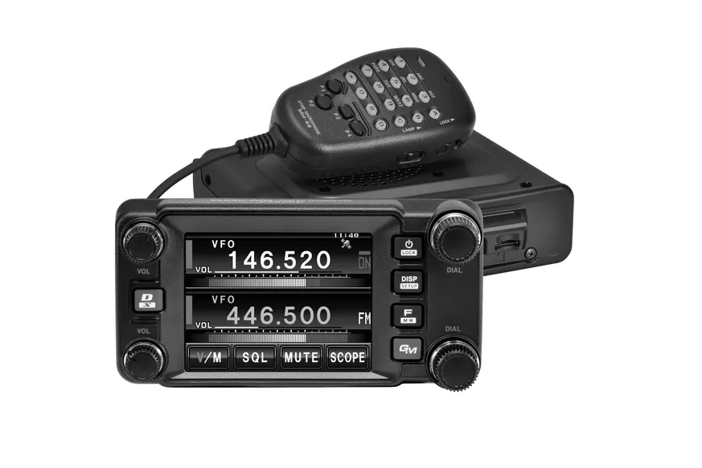</button><figcaption>Figure from page 1</figcaption><dialog id="fig-2"><p>Figure from page 1</p><form method="dialog"><button>Close</button></form></dialog></figure><p>~~<strong>Features of this radio</strong>~~</p>
<p> 144/430 MHz dual band mobile radio equipped with standard C4FM digital</p>
<p>communication modem
 Clear audio and data communication is achieved using the digital modem functions
 Wide band receive in the 108 MHz to 999 MHz range</p>
<p>(wireless business, public service and air band)
 Transmit power 50 watts with cooling fan
 Full color 3.5-inch LCD, high luminance TFT touch panel controller
 Intuitive, user touch panel operation
 500 memory channels in the Band A (band at the top of the display) and 500</p>
<p>channels in the Band B (band at the bottom of the display)
 The frequency and settings memories can be saved, using a micro-SD card. The</p>
<p>data in the micro-SD card can easily be copied to other radios
 Diverse range of scanning functions (VFO scan, memory scan etc.)
 Built-in GPS receiver unit, location and movement information can be displayed and</p>
<p>GPS data can be output to connected devices
 Incorporated APRS [®] functions. Position, movement data and messages can be</p>
<p>communicated to other stations, digipeaters and the Internet.
*Refer to the separate “APRS Operating Manual”
 GM (Group Monitor) function where in a group of frequently communicating members</p>
<p>can be registered, and then position information and messages can be exchanged
*Refer to the separate “GM Operating Manual”
 Supports Yaesu WIRES-X Internet linking, providing communication with remote</p>
<p>partners using the Internet
*Refer to the separate “WIRES-X Operating Manual”
 Bluetooth adaptor unit BU-2 (sold separately) permits hands-free operation
 Voice guide unit FVS-2 (sold separately) provides frequency voice announcement,</p>
<p>and recording of received audio
 Camera-equipped microphone MH-85A11U (sold separately). Images taken with the</p>
<p>camera can be transmitted to other stations, and also shown on the LCD display.</p>
<ul>
<li>The APRS, GM and WIRES-X Operating Manuals are not included with the product.
Please download them from the Yaesu website.</li>
</ul><p>~~<strong>Important precautions for mobile radio operation</strong>~~</p>
<p> The use of protective tape or covering is recommended to protect the wiring and the</p>
<p>power cord inside the vehicle.
 When installing the unit inside a vehicle, locate the radio, antenna, co-axial cable,</p>
<p>etc. at least 20 cm away from the following control equipment.</p>
<p><strong>● Engine-related:</strong> <strong>Fuel injection equipment and engine control</strong></p>
<p><strong>● Transmission-related: Transmission and 4WD electronic control unit</strong></p>
<p><strong>● Others:</strong> <strong>ECS/EPS/ABS/ETACS/Fully automatic air-conditioner/</strong>
<strong>Auto-heater control unit/G sensor</strong>
 Install the antenna and co-axial cable away from the control unit and wiring harness.</p>
<p>Place all cables so they do not entangle and impede the driver or passengers. Never
place any equipment in a location where it may pose a danger to the passengers,
where it may interfere with driving, or obstruct the driver field of view.
 Do not install any apparatus in such a way that it may interfere with the proper</p>
<p>operation of the air bags.
 After installing the radio, check that the brake lamp, head lamp, turning indicator</p>
<p>lights, wiper, etc. are working normally with the radio power switched on.
 Keep full attention on driving, do not operate the radio controls or look at the radio</p>
<p>display while driving. Stop the vehicle at a safe location, before operating the radio
controls or looking at the display.
 Do not drive the car in such a way that external sounds required for safe driving</p>
<p>cannot be heard. Most areas and districts prohibit the use of earphones and
headphones while driving.
 When using the radio transmitter, if it appears to have abnormal effects on the control</p>
<p>equipment of the vehicle, stop the engine, turn off the power supply, and disconnect
the power cord. Resolve the problem before continuing to operate the radio
equipment.
 When using the radio in an electric or hybrid car, the receiver may experience high</p>
<p>RF interference and noise from the inverters that are built into the electric vehicle.</p><p>~~<strong>About the touch panel</strong>~~</p>
<ul>
<li><strong>●Precautions in using the touch panel</strong>
The touch panel of the controller is designed to work with the slightest touch of a finger.
 The touch panel may not work when a protective film or sheet is adhered to the LCD.
 Use of a pointed fingernail or pen to operate the touch panel, or pressing too hard</li>
</ul>
<p>may damage or scratch the screen.
 Smart phone operations such as flicking, pinch in and pinch out are not possible.</p>
<ul>
<li><strong>●Maintaining the touch panel</strong>
 To clean the touch panel, switch off the power supply first before using a dry, soft</li>
</ul>
<p>cloth to wipe away dust and dirt from the touch panel.
When the touch panel is really dirty, wet a soft cloth and wring it out thoroughly
before using it to wipe the touch panel.
 When wiping the touch panel, be careful not to wipe too hard or scratch the surface</p>
<p>with your nails.
When the touch panel is scratched, it may become difficult to see the display.</p>
<p>~~<strong>About registered trademarks and copyrights</strong>~~</p>
<p>APRS is a registered trademark of Mr. Bob Bruninga of WB4APR.
SmartBeaconing is supplied by HamHUD Nichetronix.
Microsoft, Windows and Windows Vista are registered trademarks of Microsoft
Corporation in the United States and other countries.
Other company and product names listed in this manual are trademarks and registered
trademarks of their respective companies.</p>
<p>Unauthorized reproduction or copying of a part or all of the copyrights owned by Yaesu
Musen Co., Ltd. in any form whatsoever is strictly prohibited.</p><p>~~<strong>How to read this manual</strong>~~</p>
<p>In this manual, controller operations are expressed as follows:</p>
<p>quickly.</p>
<p>for one second or longer.</p>
<p>Touch <strong>[SQL]</strong> ���������������������������������������Indicates that the symbol on the touch panel</p>
<p>screen is to be touched quickly.</p>
<p>Touch <strong>[SQL]</strong> for 1 second or longer ���Indicates that the symbol on the touch panel</p>
<p>screen is to be touched for one second or longer.</p>
<p>Select <strong>[MODE]</strong> �����������������������������������Indicates that the items are to be highlighted on</p>
<p>the touch panel screen.</p>
<p>The following symbols are also used in this manual:</p>
<p>~~<strong>Caution</strong>~~</p>
<p>...Explains information to avoid incorrect operation.</p>
<p>~~<strong>Tip</strong>~~</p>
<p>...Explains operating hints and helpful advice.</p>
<p>Also note: the actual product may differ from the drawings shown in this manual.</p><ul>
<li>
<p>Introduction . — 2</p>
</li>
<li>
<p>Features of this radio — 2</p>
</li>
<li>Important precautions for mobile radio operation — 3</li>
<li>About the touch panel . — 4</li>
<li>About registered trademarks and copyrights — 4</li>
<li>
<p>How to read this manual — 5</p>
</li>
<li>
<p>Before Using — 9</p>
</li>
<li>Safety Precautions (make sure to read these) — 9</li>
<li>Accessories — 13</li>
<li>
<p>Name and Function of Each Component — 14</p>
</li>
<li>
<p>Controller — 14</p>
</li>
<li>
<p>Front . — 14</p>
</li>
<li>Back — 15</li>
<li>Left side . — 15</li>
<li>
<p>Main body — 16</p>
</li>
<li>
<p>Front . — 16</p>
</li>
<li>Back — 16</li>
<li>Microphone (MH-48A6JA) — 17</li>
<li>
<p>Explanation of the screen — 18</p>
</li>
<li>
<p>Displaying the band scope . — 47</p>
</li>
<li>Muting the audio — 48</li>
<li>
<p>Communicating — 49</p>
</li>
<li>
<p>Transmitting — 49</p>
</li>
<li>
<p>Adjusting the transmit power . — 50</p>
</li>
<li>Adjusting the sensitivity of the microphone — 50</li>
<li>Communicating in the FM mode — 51</li>
<li>Communicating using the repeater . — 52</li>
<li>
<p>Other Settings — 54</p>
</li>
<li>
<p>Changing the beep volume . — 54</p>
</li>
<li>Locking the knobs and switches — 55</li>
<li>Adjusting the date and time — 56</li>
<li>Adjusting the display brightness — 58</li>
</ul>
<p>Changing the background color of the</p>
<ul>
<li>frequency display area . — 60</li>
<li>
<p>Reconfiguring the Settings — 61</p>
</li>
<li>
<p>Using the Memory — 62</p>
</li>
<li>
<p>Transmitting — 49</p>
</li>
<li>
<p>Installation and Connection — 24</p>
</li>
<li>
<p>Installing the Radio — 24</p>
</li>
<li>
<p>Precautions during installation . — 24</p>
</li>
</ul>
<p>Installation location when used in a</p>
<ul>
<li>mobile unit . — 24</li>
<li>
<p>About the antenna — 25</p>
</li>
<li>
<p>Writing to the memory . — 62</p>
</li>
<li>Recalling the memory — 63</li>
<li>Recalling the home channel — 63</li>
</ul>
<p>Changing the frequency of the home channel <strong>.</strong> .. 64</p>
<ul>
<li>Erasing the memory . — 65</li>
<li>Naming the memory — 66</li>
</ul>
<p>Changing the method of the</p>
<ul>
<li>memory tag display — 67</li>
<li>Split memory — 68</li>
</ul>
<p>Receiving Weather Broadcast Channels</p>
<ul>
<li>
<p>(USA version only) — 70</p>
</li>
<li>
<p>Install the antenna . — 25</p>
</li>
<li>Installing the main body — 27</li>
<li>Installing the controller . — 28</li>
<li>
<p>Connecting the Radio — 29</p>
</li>
<li>
<p>Connecting the controller to the main body — 29</p>
</li>
<li>Connecting the microphone . — 29</li>
<li>Connecting the antenna . — 29</li>
<li>
<p>Connecting the Power Supply — 30</p>
</li>
<li>
<p>Connecting the car battery — 30</p>
</li>
</ul>
<p>Connecting the external</p>
<ul>
<li>power supply equipment — 32</li>
<li>Setting Up the micro-SD Card — 33</li>
</ul>
<p>Assigning the “WX” function to a</p>
<ul>
<li>programmable key on the microphone . — 71</li>
<li>Recalling the weather channels — 71</li>
<li>
<p>Listening the weather alert — 71</p>
</li>
<li>
<p>Scanning — 72</p>
</li>
<li>
<p>Signal Search — 72</p>
</li>
<li>
<p>Micro-SD cards that can be used — 33</p>
</li>
<li>Things to note when using micro-SD cards — 33</li>
<li>
<p>Installing the micro-SD card . — 34</p>
</li>
<li>
<p>Removing the micro-SD card — 34</p>
</li>
<li>
<p>Initializing the micro-SD card — 35</p>
</li>
<li>
<p>VFO scan — 72</p>
</li>
</ul>
<p>Setting the receive operation when the</p>
<ul>
<li>scanning stops — 73</li>
<li>
<p>Memory scan — 74</p>
</li>
<li>
<p>Selecting the scanning method — 75</p>
</li>
<li>Setting the specified memories — 75</li>
<li>Scan only the specified memory channels . — 76</li>
<li>Setting the memories to be skipped . — 77</li>
<li>
<p>Scanning the programmable memories (PMS) . — 79</p>
</li>
<li>
<p>Basic Operations — 36</p>
</li>
<li>
<p>Receiving . — 36</p>
</li>
<li>
<p>Turning the power on — 36</p>
</li>
<li>
<p>Switching the power off — 36</p>
</li>
<li>Inputing the call sign — 37</li>
<li>Switching the operating band — 38</li>
<li>Adjusting the volume — 38</li>
<li>Adjusting the squelch level — 39</li>
<li>
<p>Tuning the radio — 40</p>
</li>
<li>
<p>Changing the frequency steps — 41</p>
</li>
<li>Switching the operating mode — 44</li>
</ul>
<p>S it hi th i ti d 45</p>
<ul>
<li>Writing into the programmable memory — 79</li>
<li>Scanning the programmable memory — 80</li>
<li>
<p>Monitoring the Home Channel . — 81</p>
</li>
<li>
<p>Using the dual receive . — 81</p>
</li>
<li>
<p>Setting the restart condition of dual receive — 82</p>
</li>
<li>
<p>Using the GPS Function — 83</p>
</li>
<li>What is GPS? — 83</li>
<li>
<p>Positioning Using GPS — 83</p>
</li>
<li>
<p>Positioning using an external GPS device — 84</p>
</li>
<li>Checking the satellite capture status — 86</li>
</ul>
<p>Di l i th iti i f ti 87</p><p>Displaying the current position</p>
<ul>
<li>information of your station . — 87</li>
</ul>
<p>Displaying the position information</p>
<ul>
<li>of the partner station in the digital mode — 87</li>
</ul>
<p>Explanation of the position information</p>
<ul>
<li>screen — 88</li>
</ul>
<p>Recording the position information</p>
<ul>
<li>
<p>(GPS log function) — 89</p>
</li>
<li>
<p>Downloading messages and images — 124</p>
</li>
<li>
<p>Sending messages and pictures . — 125</p>
</li>
<li>
<p>Creating and sending a message — 125</p>
</li>
<li>Sending saved pictures . — 129</li>
<li>Replying to a message or picture . — 130</li>
<li>Forwarding messages and pictures — 132</li>
</ul>
<p>Checking the route using a</p>
<ul>
<li>personal computer — 90</li>
<li>Measuring the altitude — 90</li>
<li>Other settings — 92</li>
<li>
<p>Using the Smart Navigation Function — 93</p>
</li>
<li>
<p>Displaying the Compass screen . — 93</p>
</li>
<li>Using the real-time navigation function . — 94</li>
<li>
<p>Using the backtrack function . — 95</p>
</li>
<li>
<p>Saving the destination . — 95</p>
</li>
</ul>
<p>Displaying the position of the</p>
<ul>
<li>
<p>destination in real time — 97</p>
</li>
<li>
<p>Functions to be Used when Necessary — 134</p>
</li>
<li>
<p>Using the Bluetooth Headset . — 134</p>
</li>
<li>
<p>Mounting the Bluetooth unit “BU-2” — 134</p>
</li>
<li>Setting the Bluetooth headset operation . — 136</li>
<li>Identifying the Bluetooth headset — 137</li>
<li>Using the Bluetooth headset . — 139</li>
</ul>
<p>Taking Pictures with the optional Camera</p>
<ul>
<li>(Snapshot Function) — 140</li>
</ul>
<p>Connecting the speaker microphone</p>
<ul>
<li>with camera — 140</li>
<li>Taking pictures — 141</li>
<li>Viewing a saved picture — 143</li>
<li>
<p>Optional receive Audio Record and Playback — 144</p>
</li>
<li>
<p>Using the APRS Function — 98</p>
</li>
<li>
<p>What is the APRS Function? — 98</p>
</li>
<li>
<p>Using the GM Function — 99</p>
</li>
<li>What is the GM Function? — 99</li>
<li>
<p>Basic Methods to use the GM function . — 100</p>
</li>
<li>
<p>Convenient Functions — 102</p>
</li>
<li>
<p>Communicating with Specified Partner Stations — 102</p>
</li>
<li>
<p>Mounting the voice guide unit “FVS-2” — 144</p>
</li>
<li>
<p>Using the voice memory — 146</p>
</li>
<li>
<p>Setting the voice memory operation . — 146</p>
</li>
<li>Recording the receive audio — 147</li>
<li>Replaying the recorded audio — 147</li>
<li>Erasing the recorded audio — 148</li>
</ul>
<p>Listening to the frequency</p>
<ul>
<li>
<p>voice announcement . — 149</p>
</li>
<li>
<p>Using the tone squelch — 102</p>
</li>
<li>
<p>Setting the tone frequency — 102</p>
</li>
<li>Using the tone squelch . — 103</li>
<li>Transmitting the tone signal — 103</li>
<li>
<p>Using digital code squelch — 104</p>
</li>
<li>
<p>Setting the DCS code . — 104</p>
</li>
<li>Using DCS — 105</li>
<li>
<p>Using the pager function . — 106</p>
</li>
<li>
<p>Setting the announce function operation . — 149</p>
</li>
</ul>
<p>Listening to the frequency</p>
<ul>
<li>voice announcement — 150</li>
<li>
<p>Copying the Radio Data to another Transceiver — 151</p>
</li>
<li>
<p>Using the micro-SD card . — 151</p>
</li>
<li>
<p>Copying data to a micro-SD card — 151</p>
</li>
<li>Copying data from the micro-SD card . — 152</li>
<li>Using the clone function — 153</li>
</ul>
<p>Using the Radio with an</p>
<ul>
<li>
<p>External Device Connected — 155</p>
</li>
<li>
<p>Using the micro-SD card . — 151</p>
</li>
<li>
<p>Setting the receive station code — 106</p>
</li>
<li>Activating the pager function . — 108</li>
<li>Recalling a specified station . — 108</li>
</ul>
<p>Notification of an incoming call from a</p>
<ul>
<li>partner station using the bell . — 110</li>
<li>Other squelch functions — 110</li>
<li>
<p>Using the DTMF Function — 112</p>
</li>
<li>
<p>Registering the DTMF code — 112</p>
</li>
<li>Transmitting the registered DTMF code . — 113</li>
<li>Sending out the DTMF code manually . — 114</li>
<li>
<p>Using the Timer Function — 115</p>
</li>
<li>
<p>Using the stopwatch function . — 115</p>
</li>
<li>
<p>Displaying the timer / clock screen . — 115</p>
</li>
<li>Using the lap timer — 116</li>
<li>Using the countdown timer . — 117</li>
<li>Using the APO function . — 119</li>
<li>Using the TOT function — 120</li>
<li>Changing the Touch Key Function . — 121</li>
<li>
<p>Sending and Receiving Messages and Pictures — 122</p>
</li>
<li>
<p>Connecting to a personal computer . — 155</p>
</li>
</ul>
<p>Sending position information</p>
<ul>
<li>to the computer — 156</li>
<li>Updating the firmware of the radio — 157</li>
</ul>
<p>Using the radio as a transceiver</p>
<ul>
<li>for packet communication — 158</li>
<li>
<p>Other devices that can be connected — 162</p>
</li>
<li>
<p>Using the stopwatch function . — 115</p>
</li>
</ul>
<p><strong>Customize Menu Settings and</strong></p>
<ul>
<li>User Preferences — 163</li>
<li>Set-up Menu Basic Operations — 163</li>
<li>Set-up Menu List — 164</li>
<li>
<p>Using the Set-up Menu . — 171</p>
</li>
<li>
<p>Screen display settings — 171</p>
</li>
</ul>
<p>Vi i d i t 122</p>
<ul>
<li>Select the screen to be displayed — 171</li>
</ul>
<p>Switching between COMPASS and</p>
<ul>
<li>POSITION INFORMATION screens . — 172</li>
<li>Setting the display background color — 172</li>
</ul><ul>
<li>Setting the display contrast — 173</li>
</ul>
<p>Switching the time display</p>
<ul>
<li>and the voltage display — 173</li>
<li>
<p>Transmit and receive settings — 174</p>
</li>
<li>
<p>Setting the signal format — 174</p>
</li>
<li>Setting the AMS transmission mode — 174</li>
</ul>
<p>Setting the squelch type of the</p>
<ul>
<li>digital mode . — 175</li>
</ul>
<p>Setting the squelch code of the</p>
<ul>
<li>digital mode . — 176</li>
</ul>
<p>Setting the pop-up time for the</p>
<ul>
<li>partner station information — 177</li>
<li>Setting the display method for my position — 178</li>
<li>Setting the Standby Beep — 178</li>
<li>Displaying the version of the DSP program — 178</li>
<li>Setting the sub-band mute — 179</li>
<li>Setting the sensitivity of the microphone . — 179</li>
<li>Memory channel settings — 179</li>
</ul>
<p>Setting the display method for the</p>
<ul>
<li>memory tag — 179</li>
<li>Setting the memory scan method — 179</li>
<li>Tone signal settings — 180</li>
</ul>
<p>Setting the squelch tone frequency</p>
<ul>
<li>(CTCSS) . — 180</li>
<li>Setting the DCS code . — 180</li>
</ul>
<p>Setting the transmission method</p>
<ul>
<li>of the DTMF code — 180</li>
<li>Registering the DTMF code — 180</li>
<li>Recalling only specified stations — 180</li>
</ul>
<p>Setting the user programmed</p>
<ul>
<li>reverse CTCSS tone — 180</li>
</ul>
<p>Using the bell Notification of an
incoming call from a partner station</p>
<ul>
<li>using the bell — 181</li>
</ul>
<p>Setting the squelch type separately</p>
<ul>
<li>for transmit and receive . — 181</li>
</ul>
<p>Setting the weather alert operation</p>
<ul>
<li>(USA Version Only) — 182</li>
<li>
<p>Scan settings — 182</p>
</li>
<li>
<p>Setting the signal reception method . — 182</p>
</li>
<li>Setting the scanning direction — 182</li>
</ul>
<p>Setting the receive operation</p>
<ul>
<li>when the scanning stops . — 183</li>
<li>Group monitor function settings . — 183</li>
<li>
<p>Settings on the functions and configuration . — 183</p>
</li>
<li>
<p>Setting the date and time — 183</p>
</li>
</ul>
<p>Setting the display format for the</p>
<ul>
<li>date and time — 184</li>
<li>Setting the time zone — 185</li>
<li>Setting the auto repeater shift — 186</li>
<li>Setting the direction of the repeater shift — 186</li>
<li>Setting the shift width of the repeater . — 187</li>
<li>Setting the frequency step — 188</li>
<li>Setting the volume of the beep — 188</li>
<li>
<p>Setting the clock shift of the CPU . — 188</p>
</li>
<li>
<p>Setting the unit display — 191</p>
</li>
<li>Switching the power off automatically — 191</li>
<li>Limiting the continuous transmission time — 191</li>
</ul>
<p>Setting the PIN code of the</p>
<ul>
<li>optional Bluetooth headset . — 191</li>
</ul>
<p>Setting the geodetic reference system</p>
<ul>
<li>of the GPS function — 192</li>
<li>Positioning using the external GPS device — 192</li>
</ul>
<p>Setting the interval for recording the</p>
<ul>
<li>GPS position information — 192</li>
<li>
<p>Data communication settings . — 193</p>
</li>
<li>
<p>Setting the COM port — 193</p>
</li>
</ul>
<p>Setting the operating band of the</p>
<ul>
<li>APRS and data communication — 196</li>
</ul>
<p>Setting the baud rate of the APRS and</p>
<ul>
<li>data communication — 197</li>
</ul>
<p>Setting the output condition of the</p>
<ul>
<li>squelch detection and squelch terminal — 198</li>
<li>APRS function settings — 199</li>
<li>
<p>Micro-SD card settings — 199</p>
</li>
<li>
<p>Writing settings to the micro-SD card . — 199</p>
</li>
<li>Writing group IDs to the micro-SD card . — 200</li>
<li>Initializing the micro-SD card — 200</li>
<li>Optional device settings . — 200</li>
</ul>
<p>Setting the image of the connected</p>
<ul>
<li>speaker microphone with camera — 200</li>
</ul>
<p>Setting the operation of the</p>
<ul>
<li>Bluetooth headset — 201</li>
<li>Setting the voice memory operation . — 201</li>
<li>
<p>Initialization and saving settings — 201</p>
</li>
<li>
<p>Reconfiguring the settings . — 201</p>
</li>
<li>Registering the preset — 201</li>
<li>Recalling the registered preset — 202</li>
<li>Sorting the registered memory channels — 203</li>
<li>Copying saved data — 203</li>
<li>
<p>Call sign settings . — 204</p>
</li>
<li>
<p>Changing the call sign . — 204</p>
</li>
<li>
<p>Appendix — 206</p>
</li>
<li>Options List — 206</li>
<li>
<p>Maintenance — 207</p>
</li>
<li>
<p>Care and maintenance — 207</p>
</li>
<li>Replacing the fuse — 207</li>
<li>
<p>When you have difficulties ... . — 208</p>
</li>
<li>
<p>There is no power — 208</p>
</li>
<li>There is no sound — 208</li>
<li>There is no transmission — 208</li>
<li>The keys or knobs will not operate . — 208</li>
<li>About internal spurious signals . — 209</li>
<li>After-market Services — 209</li>
<li>
<p>Specification — 210</p>
</li>
<li>
<p>Index — 212</p>
</li>
</ul><p><strong>Make sure to read this manual in order to use this radio safely and correctly.</strong></p>
<p>Note beforehand that the company shall not be liable for any damages suffered by the
customer or third parties in using this product, or for any failures and faults that occur
during the use or misuse of this product, unless otherwise provided for under the law.</p>
<p><strong>Type and meaning of the marks</strong></p>
<h6 id="danger-warning-caution"><strong>DANGER</strong> <strong>WARNING</strong> <strong>CAUTION</strong></h6>
<p>This symbol indicates the possibility of death or serious
injury being inflicted on the user and the surrounding
people when these instructions are ignored and the product
is handled wrongly.</p>
<p>This symbol indicates the possibility of death or serious
injury being inflicted on the user and the surrounding
people when these instructions are ignored and the product
is handled wrongly.</p>
<p>This symbol indicates the possibility of physical
impediments occurring or impediments being inflicted
on the user and the surrounding people when these
instructions are ignored and the product is handled wrongly.</p>
<p><strong>Type and meaning of symbols</strong></p>
<p>Prohibited actions that must not be carried out in order to use this radio
safely.
For example, signifies that disassembly is prohibited.</p>
<p>Precautions that must be adhered to in order to use this radio safely. For
example, signifies that the power supply is to be disconnected.</p>
<h6 id="danger">~~<strong>DANGER</strong>~~</h6>
<p><strong>Do not use the device in “regions or</strong>
<strong>aircrafts and vehicles where its use</strong>
<strong>is prohibited” such as in hospitals</strong>
<strong>and aeroplanes.</strong>
This may exert an impact on electronic
and medical devices.</p>
<p><strong>Do not use this product while driving</strong>
<strong>or riding a motorbike. This may</strong>
<strong>result in accidents.</strong>
Make sure to stop the car in a safe
location first before use if the device is
going to be used by the driver.</p>
<p><strong>Never touch the antenna during</strong>
<strong>transmission.</strong>
This may result in injury, electric shock
and equipment failure.</p>
<p><strong>When an alarm goes off with the</strong>
<strong>external antenna connected, cut</strong>
<strong>off the power supply to this radio</strong>
<strong>immediately and disconnect the</strong>
<strong>external antenna from this radio.</strong>
If not, this may result in fire, electric
shock and equipment failure.</p><p><strong>Do not operate the device when</strong>
<strong>flammable gas is generated.</strong>
Doing so may result in fire and
explosion.</p>
<p><strong>Do not transmit in crowded places</strong>
<strong>in consideration of people who are</strong>
<strong>fitted with medical devices such as</strong>
<strong>heart pacemakers.</strong>
Electromagnetic waves from the device
may affect the medical device, resulting
in accidents caused by malfunctions.</p>
<p><strong>Do not touch any liquid leaking from</strong>
<strong>the liquid display with your bare</strong>
<strong>hands.</strong>
There is a risk of chemical burns
occurring when the liquid comes
into contact with the skin or gets into
the eyes. In this case, seek medical
treatment immediately.</p>
<h6 id="warning">~~<strong>WARNING</strong>~~</h6>
<p><strong>Do not use voltages other than the</strong>
<strong>specified power supply voltage.</strong>
Doing so may result in fire and electric
shock.</p>
<p><strong>Do not transmit continuously for</strong>
<strong>long periods of time.</strong>
This may cause the temperature of the
main body to rise and result in burns
and failures due to overheating.</p>
<p><strong>Do not dismantle or modify the</strong>
<strong>device.</strong>
This may result in injury, electric shock
and equipment failure.</p>
<p><strong>Do not handle the power plug and</strong>
<strong>connector etc. with wet hands. Also</strong>
<strong>do not plug and unplug the power</strong>
<strong>plug with wet hands.</strong>
This may result in injury, liquid leak,
electric shock and equipment failure.</p>
<p><strong>When smoke or strange odors are</strong>
<strong>emitted from the radio, turn off the</strong>
<strong>power and disconnect the power</strong>
<strong>cord from the socket.</strong>
This may result in fire, liquid leak,
overheating, damage, ignition and
equipment failure. Please contact our
company amateur customer support or
the retail store where you purchased
the device.</p>
<p><strong>Keep the power plug pins and the</strong>
<strong>surrounding areas clean at all times.</strong>
This may result in fire liquid leak</p>
<p><strong>Do not place the device in areas</strong>
<strong>that may get wet easily (e.g. near a</strong>
<strong>humidifier).</strong>
This may result in fire, electric shock
and equipment failure.</p>
<p><strong>When connecting a DC power cord,</strong>
<strong>pay due care not to mix up the</strong>
<strong>positive and negative polarities.</strong>
This may result in fire, electric shock
and equipment failure.</p>
<p><strong>Do not use DC power cords other</strong>
<strong>than the one enclosed or specified.</strong>
This may result in fire, electric shock
and equipment failure.</p>
<p><strong>Do not bend, twist, pull, heat</strong>
<strong>and modify the power cord</strong>
<strong>and connection cables in an</strong>
<strong>unreasonable manner.</strong>
This may cut or damage the cables
and result in fire, electric shock and
equipment failure.</p>
<p><strong>Do not pull the cable when plugging</strong>
<strong>and unplugging the power cord and</strong>
<strong>connection cables.</strong>
Please hold the plug or connector when
unplugging. If not, this may result in fire,
electric shock and equipment failure.</p><p><strong>Do not use the device when the</strong>
<strong>power cord and connection cables</strong>
<strong>are damaged, and when the DC</strong>
<strong>power connector cannot be plugged</strong>
<strong>in tightly.</strong>
Please contact our company amateur
customer support or the retail store
where you purchased the device as this
may result in fire, electric shock and
equipment failure.</p>
<p><strong>Never cut off the fuse holder of the</strong>
<strong>DC power cord.</strong>
This may cause short-circuiting and
result in ignition and fire.</p>
<p><strong>Do not use fuses other than those</strong>
<strong>specified.</strong>
Doing so may result in fire and
equipment failure.</p>
<p><strong>Do not allow metallic objects such</strong>
<strong>as wires and water to get inside the</strong>
<strong>product.</strong>
This may result in fire, electric shock
and equipment failure.</p>
<p><strong>Refrain from using headphones and</strong>
<strong>earphones at a loud volume.</strong>
Continuous exposure to loud volumes
may result in hearing impairment.</p>
<p><strong>Disconnect the power cord</strong>
<strong>and connection cables before</strong>
<strong>incorporating items sold separately</strong>
<strong>and replacing the fuse.</strong>
This may result in fire, electric shock
and equipment failure.</p>
<p><strong>Follow the instructions given when</strong>
<strong>installing items sold separately and</strong>
<strong>replacing the fuse.</strong>
This may result in fire, electric shock
and equipment failure.</p>
<p><strong>Do not use the device when the</strong>
<strong>alarm goes off.</strong>
For safety reasons, please pull the
power plug of the DC power equipment
connected to the product out of the AC
socket.
Never touch the antenna as well. This
may result in fire, electric shock and
equipment failure due to thunder.</p>
<h6 id="caution">~~<strong>CAUTION</strong>~~</h6>
<p><strong>Do not place this device near a</strong>
<strong>heating instrument or in a location</strong>
<strong>exposed to direct sunlight.</strong>
This may result in deformation and
discoloration.</p>
<p><strong>Do not place this device in a location</strong>
<strong>where there is a lot of dust and</strong>
<strong>humidity.</strong>
Doing so may result in fire and
equipment failure.</p>
<p><strong>Stay as far away from the antenna as</strong>
<strong>possible during transmission.</strong>
Long-term exposure to electromagnetic
radiation may have a negative effect on
the human body.</p>
<p><strong>Do not wipe the case using thinner</strong>
<strong>and benzene etc.</strong>
Please use a soft and dry piece of cloth
to wipe away the stains on the case</p>
<p><strong>For safety reasons, switch off the</strong>
<strong>power and pull out the DC power</strong>
<strong>cord connected to the DC power</strong>
<strong>connector when the device is not</strong>
<strong>going to be used for a long period</strong>
<strong>of time.</strong>
If not, this may result in fire and
overheating.</p>
<p><strong>Do not throw or subject the device to</strong>
<strong>strong impact forces.</strong>
This may result in equipment failure.</p>
<p><strong>Do not the put this device near</strong>
<strong>magnetic cards and video tapes.</strong>
The data in the cash card and video
tape etc. may be erased.</p>
<p><strong>Do not turn on the volume too</strong>
<strong>high when using a headphone or</strong>
<strong>earphone.</strong>
This may result in hearing impairment</p><p><strong>Keep out of the reach of small</strong>
<strong>children.</strong>
If not, this may result in injuries to
children.</p>
<p><strong>Do not put heavy objects on top</strong>
<strong>of the power cord and connection</strong>
<strong>cables.</strong>
This may damage the power cord and
connection cables, resulting in fire and
electric shock.</p>
<p><strong>Do not transmit near the television</strong>
<strong>and radio.</strong>
This may result in electromagnetic
interference.</p>
<p><strong>Do not use optional products</strong>
<strong>other than those specified by our</strong>
<strong>company.</strong>
If not, this may result in equipment
failure.</p>
<p><strong>When using the device in a hybrid</strong>
<strong>car or fuel-saving car, make sure</strong>
<strong>to check with the car manufacturer</strong>
<strong>before using.</strong>
The device may not be able to receive
transmissions normally due to the
influence of noises from the electrical
devices (inverters etc.) fitted in the car.</p>
<p><strong>Do not place the device on an</strong>
<strong>unsteady or sloping surface, or in</strong>
<strong>a location where there is a lot of</strong>
<strong>vibration.</strong>
The device may fall over or drop,
resulting in fire, injury and equipment
failure.</p>
<p><strong>Do not stand on top of the product,</strong>
<strong>and do not place heavy objects on</strong>
<strong>top or insert objects inside it.</strong>
If not, this may result in equipment
failure.</p>
<p><strong>Do not use a microphone other than</strong>
<strong>those specified when connecting a</strong>
<strong>microphone to the device.</strong>
If not, this may result in equipment
failure.</p>
<p><strong>Do not touch the heat radiating</strong>
<strong>parts.</strong>
When used for a long period of time,
the temperature of the heat radiating
parts will get higher, resulting in burns
when touched.</p>
<p><strong>Do not open the case of the product</strong>
<strong>except when replacing the fuse</strong>
<strong>and when installing items sold</strong>
<strong>separately.</strong>
This may result in injury, electric shock
and equipment failure.</p><p>DTMF microphone</p>
<p>MH-48A6JA</p>
<p>Controller cable</p>
<p>(3 m)</p>
<p>Spare fuse (15 A)
(USA, EXP version)</p>
<p>Bracket for main body</p>
<p>MMB-36</p>
<p>DC power cable
(with fuse attached)
(USA, EXP version)</p>
<p>Spare Fuse (15 A)
(European version)</p>
<p>Bracket for the</p>
<p>controller</p>
<p>DC power cable
(with fuse attached)</p>
<p>(European version)</p>
<p>PC connection cable</p>
<p>SCU-20</p>
<p>Operating Manual
Warranty Card
Quick Manual</p>
<p>Microphone cord holder Stereo to Monaural Plug</p>
<p>~~<strong>Tip</strong>~~</p>
<p>Various optional parts are also available.
Refer to Page 206 for details.</p><figure><button aria-label="Enlarge Figure from page 13" class="zoom" data-dialog="fig-3" type="button">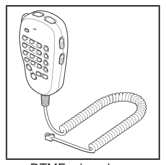</button><figcaption>Figure from page 13</figcaption><dialog id="fig-3"><p>Figure from page 13</p><form method="dialog"><button>Close</button></form></dialog></figure><figure><button aria-label="Enlarge Figure from page 13" class="zoom" data-dialog="fig-4" type="button">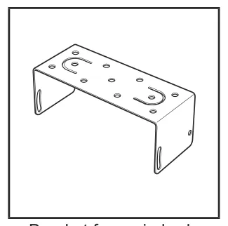</button><figcaption>Figure from page 13</figcaption><dialog id="fig-4"><p>Figure from page 13</p><form method="dialog"><button>Close</button></form></dialog></figure><figure><button aria-label="Enlarge Figure from page 13" class="zoom" data-dialog="fig-5" type="button">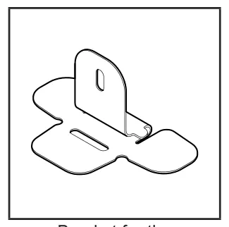</button><figcaption>Figure from page 13</figcaption><dialog id="fig-5"><p>Figure from page 13</p><form method="dialog"><button>Close</button></form></dialog></figure><figure><button aria-label="Enlarge Figure from page 13" class="zoom" data-dialog="fig-6" type="button">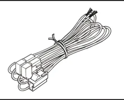</button><figcaption>Figure from page 13</figcaption><dialog id="fig-6"><p>Figure from page 13</p><form method="dialog"><button>Close</button></form></dialog></figure><p>~~<strong>Controller</strong>~~</p>
<p><strong>Front</strong></p>
<p></p>
<p></p>
<p>‘</p>
<p>’</p>
<p>“</p>
<p>”</p>
<p>The volume will increase when the knob is turned in a clockwise direction and
decrease when turned in an counter-clockwise direction.
The upper end is for Band A use while the lower end is for Band B use.</p>
<p>The communication mode changes each time this key is pressed for a short time.</p>
<p>~~<strong>Tip</strong>~~ Refer to Page 45 for the communication mode.
WIRES-X will start when this key is pressed for one second or longer.
➂ Touch panel display</p>
<ul>
<li>The frequency of the upper band in the dual band display can be adjusted.
The frequency will increase when the knob is turned in a clockwise direction and</li>
</ul>
<p>decrease when turned in an counter-clockwise direction.
Press the knob to enable setting the operating band frequency in 1 MHz units.
Press the knob for one second or longer to enable setting the frequency in 5 MHz</p>
<p>units.</p>
<ul>
<li>
<p>In memory mode when the knob is pressed for one second or longer, if a tag
(name) is attached to the memory channel, the tag and frequency displays will be
reversed.</p>
</li>
<li>
<p>This knob is also used to select the items during the set up and memory
operations, group monitor operations, etc.</p>
</li>
</ul>
<p>Press this button for 2 seconds or longer to switch the power on and off.
The key lock can be engaged or released by pressing the button quickly while the
radio is turned on.</p><p>Press the button quickly to display the function menu.
Press the button for 2 seconds or longer to change to the memory writing mode.</p>
<ul>
<li>The frequency of the upper band in the dual band display can be adjusted.
Press the knob to enable setting the operating band frequency in 1 MHz units.
Press the knob for one second or longer to enable setting the frequency in 5 MHz</li>
</ul>
<p>units.</p>
<ul>
<li>In memory mode when the knob is pressed for one second or longer, if a tag
(name) is attached to the memory channel, the tag and frequency displays will be
reversed.</li>
</ul>
<p>Press this key to start the group monitor function.</p>
<p><strong>Back</strong></p>
<p>Œ</p>
<p></p>
<p>➀ CONTROL jack</p>
<p>Plug in the control cable into this jack to connect with the main body.
➁ Screw hole to attach the mounting bracket</p>
<p><strong>Left side</strong></p>
<p>➀ EXT GPS jack</p>
<p>Plug in a cable to connect with external GPS devices.</p>
<p>Œ</p><figure><button aria-label="Enlarge Figure from page 15" class="zoom" data-dialog="fig-7" type="button">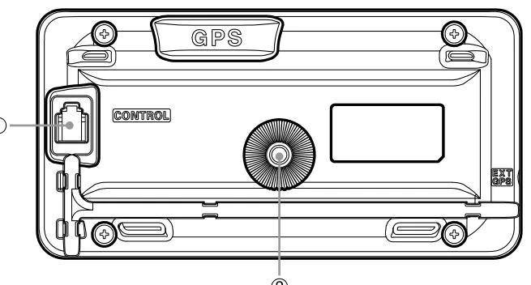</button><figcaption>Figure from page 15</figcaption><dialog id="fig-7"><p>Figure from page 15</p><form method="dialog"><button>Close</button></form></dialog></figure><p>~~<strong>Main body</strong>~~</p>
<p><strong>Front</strong></p>
<p>➀ CONTROL jack</p>
<p>Œ  Ž </p>
<p>Plug in the control cable into this jack to connect with the controller.
➁ MIC jack</p>
<p>Plug in the provided microphone cable.
➂ DATA jack</p>
<p>Connect MH-85A11U, the optional speaker microphone with camera.</p>
<ul>
<li>There is no audio output available from the FTM-400DR/DE to the MH-85A11U
speaker.
➃ micro-SD card slot</li>
</ul>
<p><strong>Back</strong></p>
<p>Œ  </p>
<p>Ž</p>
<p></p>
<p>➀ ANT terminal</p>
<p>Connect the co-axial cable for the antenna.
➁ 13.8 VDC</p>
<p>Connect the provided DC power supply cable (with fuse attached).
➂ EXT SP jack</p>
<p>Connect the optional external speaker.
➃ DATA jack</p>
<p>Connect a cable for remote operation or the cable for connecting with the personal
computer interface unit and the external terminal unit ( P.155 Page).
➄ C li f</p><p>~~<strong>Microphone (MH-48A6JA)</strong>~~</p>
<p><strong>[UP]</strong> Frequency is increased by 1 step.</p>
<p><strong>[DWN]</strong> Frequency is decreased by 1 step.</p>
<p><strong>[LOCK]</strong> Locks / unlocks the [UP] and [DWN] keys and</p>
<p>[P1] to [P4] keys.</p>
<p><strong>[LAMP]</strong> Turns the lamp on the body of the microphone
on/off.</p>
<p><strong>[MIC]</strong> Speak into here during transmission.</p>
<p><strong>[1] to [0]</strong> Enters the numbers and letters.</p>
<p><strong>[</strong> ✽ <strong>]</strong> Changes the VFO/Memory operating mode of
the operating band.</p>
<p><strong>[#]</strong> Activates the GM (Group Monitor) functions.</p>
<p><strong>[A]</strong> Switches the operating band to Band A.</p>
<p><strong>[B]</strong> Switches the operating band to Band B.</p>
<p><strong>[C]</strong> Adjusts the squelch level.</p>
<p><strong>[D]</strong> Switches the display.</p>
<p><strong>[P1]</strong> Turns off the squelch
(T.CALL: European version).</p>
<p><strong>[P2]</strong> Recalls the receiver home channel.</p>
<p><strong>[P3]</strong> Changes the communication mode.</p>
<p><strong>[P4]</strong> Changes the transmit power.</p>
<p><strong>[PTT]</strong> Press this key to begin the transmit mode.</p>
<p>~~<strong>Tip</strong>~~</p>
<p>Preferred functions can be assigned to buttons [P1] to [P4]. Select using the <strong>[CONFIG]→[10 MIC</strong>
<strong>PROGRAM KEY]</strong> in the set-up menu.</p><p>~~<strong>Explanation of the screen</strong>~~</p>
<p>’</p>
<p>“
”</p>
<p>‘</p>
<p>”
‘</p>
<p><strong>A</strong> Band A display area
<strong>B</strong> Band B display area</p>
<p>The characters of the name tag and frequency are displayed in white for the
operating band, and gray for the sub-band.
➀ Touch key display area</p>
<p>Functions to be displayed in the function menu screen can be assigned to the touch
keys. Refer to “Changing the touch key functions” ( P.121) for details.
➁ Status display area</p>
<p>A green bar is displayed during receive and when signals are detected.
The bar will not be displayed when the squelch is turned on.
A red bar is displayed when transmitting.
➂ Tag display area</p>
<p>“VFO” is displayed in the VFO mode.
The memory channel number and the tag are displayed in the memory mode.
➃ Frequency display area</p>
<p>channel tag.
➄ VOL/SQL level display area
➅ S-meter/transmit power level display, and also partner station information display
➆ Clock/Voltage display area
➇ Icon display area</p>
<p>Bluetooth, APRS, micro-SD card and GPS icons are displayed when each function is
in use.
➈ Communication mode display area</p>
<p>The analog and digital modes are indicated using symbols.
A red bar will be displayed above the symbol in the AMS (auto mode). The AMS
automatically matches the communication mode of the received signal.</p><ul>
<li><strong>●Dual band screen</strong>
Band A and Band B will be displayed at the top and bottom.</li>
</ul>
<p><strong>[V/M]</strong> The VFO channel and memory channel will be
switched by touching this symbol.
The “V” is displayed in orange in the VFO
mode while the “M” is displayed in orange in
the memory mode.</p>
<p><strong>[SQL]</strong> The squelch level can be set after touching this
symbol. The characters are displayed in orange
for 5 seconds during the time that the squelch
level can be set.</p>
<p><strong>[MUTE]</strong> The receive audio can be muted by touching
this. The characters are displayed in orange
when the sound has been muted.</p>
<p><strong>[SCOPE]</strong> The band scope operation toggles on or</p>
<p>off each time this symbol is touched. The
characters are displayed in orange during the
band scope operation.</p>
<ul>
<li><strong>●Band scope screen</strong>
The screen appears as shown, when the band scope is turned on.</li>
</ul>
<p>~~<strong>Tip</strong>~~ The width of the band scope can be set to either “WIDE” or</p>
<p>“NARROW” under <strong>[DISPLAY]</strong> → <strong>[4 BAND SCOPE]</strong> in the
set-up menu.</p>
<ul>
<li><strong>●Function menu screen</strong></li>
</ul>
<p>band.</p>
<p><strong>[BACK][FWD]</strong>
The menu changes each time these symbols
are touched.</p>
<p>~~<strong>Tip</strong>~~ The functions displayed in the menu can be assigned to the</p>
<p>touch keys at the bottom of the display. Refer to Page 121
for details.</p><p><strong>Change the display mode</strong></p>
<p>Frequency display screen→Compass/Lat&amp;Lon display screen→Altitude display
screen<em>→Timer/Clock screen</em>→GPS screen*
*This screen will be displayed when <strong>[DISPLAY]</strong> → <strong>[1 DISPLAY SELECT]</strong> is set to
“ON” in the set-up menu.</p>
<ul>
<li><strong>●Compass screen</strong>
The direction of travel of your own station and direction coordinate of the received
station are displayed in the compass screen.</li>
</ul>
<p><strong>DISTANCE</strong> When a saved position information is
recalled, the distance from the current
position is displayed.</p>
<p><strong>[YR]</strong> When this symbol is touched, the position
of the partner station that is received is
displayed in the compass (when the position
information is included in the signal), and
the symbol is shown in orange.</p>
<p><strong>[MY]</strong> When this symbol is touched, the direction of travel of your own station is
displayed in the compass, and this symbol is displayed in orange.</p>
<p><strong>[MEMORY]</strong> When this symbol is touched, the position information being displayed is
saved in the memory.</p>
<p><strong>[</strong>  <strong>]</strong> When this symbol is touched while the display is green, the position
information saved in the memory under the tag “” is displayed.
When this symbol is touched while the display is blinking, the position
information displayed in the compass will be saved in the memory under
the tag “”.</p>
<p><strong>[L1]</strong> When this symbol is touched while the display is green, the position
information saved in the memory under the tag “L1” is displayed.
When this symbol is touched while the display is blinking, the position
information displayed in the compass will be saved in the memory under
the tag “L1”.</p>
<p><strong>[L2]</strong> When this symbol is touched while the display is green, the position
information saved in the memory under the tag “L2” is displayed.</p><ul>
<li><strong>●Altitude display screen</strong>
The altitude of the current location is shown in the bar graph display.</li>
</ul>
<p><strong>ALTITUDE</strong> Displays the current altitude.
<strong>Vertical axis</strong> Represents the altitude.
<strong>Horizontal axis</strong></p>
<p>Represents the distance.</p>
<p><strong>[SCALE]</strong> When this symbol is touched, the scale of
the distance changes.</p>
<p><strong>[CLEAR]</strong> When this symbol is touched, the graph
display will be cleared (erased).</p>
<ul>
<li><strong>●Timer/Clock screen</strong>
The current time is shown in analog and digital formats. The date is also shown.</li>
</ul>
<p>time this symbol is touched.</p><p>touched.</p>
<p><strong>[LAP]</strong> The lap time is then saved in the memory (a</p>
<p>when this symbol is touched.
The lap time (of the new interval) being
measured will be displayed in the lower lap
display window.</p>
<p><strong>[STOP]</strong> The count stops when this symbol is
touched.</p>
<p><strong>[RECALL]</strong> When this symbol is touched, the lap time
saved in the memory is shown in the upper
lap display window while the split time is
shown below. When there are multiple lap
times, touch <strong>[</strong>  <strong>][</strong>  <strong>]</strong> to move between the
lap times.
Touch <strong>[RECALL]</strong> again to return to the
measurement screen.</p>
<p><strong>[RESET]</strong> The counter is reset when this symbol is
touched.</p>
<p><strong>[STOP]</strong> The count stops when this symbol is</p>
<p>touched.</p>
<p><strong>[SETUP]</strong> The count time can be changed (from 1
minute to 99 hours and 59 minutes) when
this symbol is touched. Each time this
symbol is touched, the setting will switch
from “Hours” to “Minutes” to “Confirm”. The
time can be changed by touching <strong>[-]</strong> and <strong>[+]</strong></p><ul>
<li><strong>●GPS screen</strong></li>
</ul>
<p>Signal strength Medium
Signal strength Low</p>
<p>The keyboard screen is displayed when entering a memory channel tag or the call sign
of your own station.</p>
<ul>
<li><strong>●Numbers and symbols input screen</strong></li>
</ul>
<p><strong>[ENT]</strong> The entered characters are confirmed and
the display returns to the previous screen
when this symbol is touched.</p>
<p><strong>[BACK]</strong> The display returns to the previous screen
when this symbol is touched.</p>
<p><strong>[</strong> <strong>]</strong> One character to the left of the cursor is
erased when this symbol is touched.</p>
<ul>
<li>
<p><strong>●Alphabet input screen</strong></p>
</li>
<li>
<ul>
<li>
<ul>
<li>
<ul>
<li>
<ul>
<li>
<ul>
<li>
<ul>
<li>
<ul>
<li>
<ul>
<li>
<ul>
<li>touched.</li>
</ul>
</li>
</ul>
</li>
</ul>
</li>
</ul>
</li>
</ul>
</li>
</ul>
</li>
</ul>
</li>
</ul>
</li>
</ul>
</li>
</ul>
<p>���� - - - - - - - - </p>
<hr/>
<p>������ ��� ����� ���</p><figure><button aria-label="Enlarge Figure from page 23" class="zoom" data-dialog="fig-8" type="button">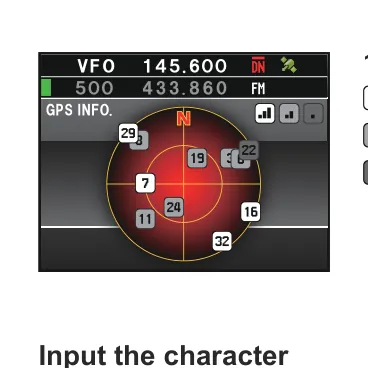</button><figcaption>Figure from page 23</figcaption><dialog id="fig-8"><p>Figure from page 23</p><form method="dialog"><button>Close</button></form></dialog></figure><figure><button aria-label="Enlarge Figure from page 23" class="zoom" data-dialog="fig-9" type="button">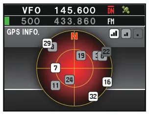</button><figcaption>Figure from page 23</figcaption><dialog id="fig-9"><p>Figure from page 23</p><form method="dialog"><button>Close</button></form></dialog></figure><figure><button aria-label="Enlarge Figure from page 23" class="zoom" data-dialog="fig-10" type="button">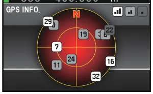</button><figcaption>Figure from page 23</figcaption><dialog id="fig-10"><p>Figure from page 23</p><form method="dialog"><button>Close</button></form></dialog></figure><p>~~<strong>Precautions during installation</strong>~~</p>
<p>Note the following when installing this radio.</p>
<p> Do not install the radio in a place where there is extreme vibration, where there is a</p>
<p>lot of dust, excessive humidity or high temperature, or where it is exposed to direct
sunlight.
 Install the radio in a well ventilated position, so heat release is not obstructed</p>
<p>because the heat sink gets hot when transmitting for a long periods of time.
 Do not place any objects on top of the main body.
 Do not lift up or hold the controller by holding the knob or control cable.
 A regulated, negative ground 13.8 V DC power supply is required for this radio.
Check that the car battery is a negative ground 12 V system when using this radio in
a mobile unit. Never connect this radio to the 24 V battery of a large vehicle.
 Never connect this radio to a 120 V AC power source.
 Note that there is a risk that hum and noise may be introduced, depending on the</p>
<p>installation condition and the external power source used.
 Install the device as far away as possible from the TV and radio to avoid TV and radio</p>
<p>interference (TVI, BCI).
In particular, do not install this radio near indoor antenna elements.</p>
<p><strong>Installation location when used in a mobile unit</strong></p>
<ul>
<li><strong>●Controller</strong>
It is recommended that the controller be installed on top of the car dash board or in front
of the center console. Refer to Page 28 on how to install the controller.</li>
</ul><p>~~<strong>About the antenna</strong>~~</p>
<p>A good antenna installation is extremely important for transmission and reception
purposes. Note the following, as the type and characteristics of the antenna largely
determines whether the performance of the radio can be fully realized.</p>
<ul>
<li>
<p>Use an antenna that suits the installation conditions and application objective.</p>
</li>
<li>
<p>Use an antenna that suits the operating frequency band.</p>
</li>
<li>
<p>Use an antenna and a co-axial cable with a characteristic impedance of 50Ω.</p>
</li>
<li>
<p>Adjust the VSWR (standing wave ratio) until it is 1.5 or less for an antenna with an
adjusted impedance of 50Ω.</p>
</li>
<li>
<p>Keep the co-axial cable routing length as short as possible.</p>
</li>
</ul>
<p><strong>Install the antenna</strong></p>
<ul>
<li>
<p><strong>●Antenna installation in a mobile unit</strong>
Mount the antenna base at the rear of the car (rear bumper, trunk, rear gate, etc.) and
then attach the antenna to the base.</p>
</li>
<li>
<p><strong>●Antenna installation in a fixed station</strong>
There are omni-directional, and directed array antennas for use in an outdoor setting.</p>
</li>
<li>
<p>Omni-directional antennas such as the GP (Ground Plane) antenna are suitable for
communications between a local station and mobile stations in all direction.</p>
</li>
<li>
<p>Directional antennas such as the Yagi antenna are suitable for communications
between a base station and a remote station in a specific direction.</p>
</li>
</ul><p>~~<strong>Cautions</strong>~~</p>
<p>zz Create a loop (slack) in the co-axial cable directly underneath the antenna and fasten it so that the</p>
<p>weight of the cable does not pull on the antenna or connector itself.
zz Install the antenna taking into consideration the securing supports and how the guying wires are</p>
<p>positioned, so that the antenna does not fall over or get blown away in strong winds.</p>
<p>GP antenna
<veranda example="" mounted=""></veranda></p>
<p>Yagi antenna
<roof example="" mounted=""></roof></p><figure><button aria-label="Enlarge Figure from page 26" class="zoom" data-dialog="fig-11" type="button">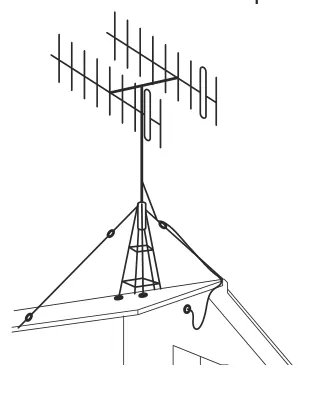</button><figcaption>Figure from page 26</figcaption><dialog id="fig-11"><p>Figure from page 26</p><form method="dialog"><button>Close</button></form></dialog></figure><figure><button aria-label="Enlarge Figure from page 26" class="zoom" data-dialog="fig-12" type="button">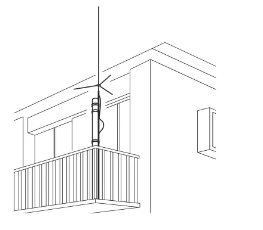</button><figcaption>Figure from page 26</figcaption><dialog id="fig-12"><p>Figure from page 26</p><form method="dialog"><button>Close</button></form></dialog></figure><p>~~<strong>Installing the main body</strong>~~</p>
<p>Install the main body using the provided MMB-36 bracket.</p>
<p><strong>1</strong> Select the installation location</p><p>~~<strong>Installing the controller</strong>~~</p>
<p>Install the controller using the provided bracket.</p>
<p>~~<strong>Caution</strong>~~</p>
<p>The bracket can be bent by hand to match the location where the controller is going to be installed.
Take due care not to injure yourself when bending the bracket.</p>
<p><strong>1</strong> Select the installation location</p>
<p>provided screws and washers, as shown in the
drawing</p>
<p><strong>3</strong> Peel off the protective seal from one side of the
provided two-sided adhesive sheet, and paste it
onto the bottom of the bracket</p>
<p><strong>4</strong> Peel off the other protection seal from the
underside of the two-sided adhesive sheet pasted
onto the bracket, and then stick the bracket to the
installation location</p>
<p>~~<strong>Caution</strong>~~ Remove all dirt and dust from the installation</p>
<p>location before affixing the bracket.</p><figure><button aria-label="Enlarge Figure from page 28. 保護 シール 両面接着 シート" class="zoom" data-dialog="fig-13" type="button">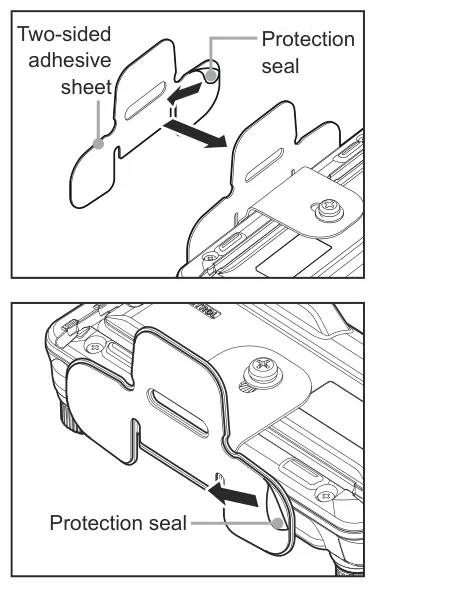</button><figcaption>Figure from page 28. 保護 シール 両面接着 シート</figcaption><dialog id="fig-13"><p>Figure from page 28. 保護 シール 両面接着 シート</p><form method="dialog"><button>Close</button></form></dialog></figure><p>~~<strong>Connecting the controller to the main body</strong>~~</p>
<p>microphone in locations which cannot be reached
by the attached microphone cable.</p>
<p>~~<strong>Connecting the antenna</strong>~~
<strong>1</strong> Attach the antenna co-axial cable to the [ANT]
terminal at the back of the main body and tighten
the connector</p><p><strong>Connecting the car battery</strong></p>
<p>When using this radio as a mobile unit, connect the DC power supply cable to the
negative ground 12 V car battery.</p>
<p>~~<strong>Cautions</strong>~~</p>
<p>zz Use the radio in a car with a negative ground 12 V DC system, where the minus (-) pole of the</p>
<p>battery is connected to the car body.
zz Do not connect the radio to the 24 V battery of a large vehicle.</p>
<p>zz Do not use the cigarette lighter inside the car as a power source.</p>
<p><strong>(1) Cable routing from inside the car to the engine compartment</strong></p>
<p>Rout the DC power supply cable to the engine compartment, passing it through a
grommet in the fire wall from the passenger side.</p>
<p><strong>1</strong> Feed a hardened wire from the engine compartment through the grommet into the
interior of the car
<strong>2</strong> Hook the end of the “feed” wire with the “bare wire” end of the provided DC power
supply cable
<strong>3</strong> Fold and bend the ends of the wires and wind insulation tape around them
<strong>4</strong> Pull the “feed” wire back into the engine compartment
The DC power supply cable will be pulled through the grommet into the engine
compartment.
<strong>5</strong> Peel off the tape and remove the DC power supply cable from the “feed” wire</p><p><strong>(2) Connecting the power supply cable</strong></p>
<p>~~<strong>Cautions</strong>~~</p>
<p>zz Do not use a DC power supply cable other than the one that is provided or specified.</p>
<p>zz Do not rout the DC power supply cable where objects may be placed on top of it or persons may</p>
<p>step on the cable.
zz Do not use the DC power supply cable with the fuse holder cut off.</p>
<p>zz Do not reverse the polarity (positive and negative) when connecting the battery.</p>
<p><strong>1</strong> Disconnect the minus (-) terminal from the battery
This prevents short-circuiting the 12 V DC voltage while working on the cables.
<strong>2</strong> Obtain commercially available terminals and crimp or solder both the red (+) and
black (-) wire ends of the DC power supply cable</p>
<p>terminal</p>
<p><strong>3</strong> Connect the red wire (+) of the DC power supply cable to the positive (+) terminal of
the battery</p>
<p>~~<strong>Caution</strong>~~ Fasten the DC power supply cable securely so that the terminals do not get disconnected.
<strong>4</strong> Reconnect the negative (-) terminal of the battery that was disconnected
<strong>5</strong> Connect the black wire (-) of the DC power supply cable to the negative (-) terminal
of the battery</p>
<p>~~<strong>Caution</strong>~~ Fasten the DC power supply cable securely so that the terminals do not get disconnected.
<strong>6</strong> Connect the DC power supply cable to the connector of the power cord of the main
body
Press the plug into the connector until a click sound is heard.</p>
<p>ヒューズ
ホルダー</p>
<p>Power cord (DC
(direct current) 電源コード</p>
<p>（DC(直流)</p>
<p>13.8 V)</p>
<p>DC power</p>
<p>電源コード
（DC(直流)</p>
<p>Rear 本体後面 side of main body</p>
<p>本体後面</p><p><strong>Connecting the external power supply equipment</strong></p>
<p>When using this radio as a fixed station, use an external 12 V DC power source.</p>
<p>~~<strong>Cautions</strong>~~</p>
<p>zz Use an external power source capable of supplying DC 13.8 V, a current capacity of 20 A or more</p>
<p>(FTM-400DR/DE).
zz Make sure to switch OFF the power of the external power source before connecting.</p>
<p><strong>1</strong> Connect the red wire (+) of the provided DC power supply cable to the positive
(+) terminal of the external power source, and the black wire (-) to the negative (-)
terminal of the external power source
<strong>2</strong> Connect the DC power supply cable to the connector of the power cord of the main
body
Press the plug into the connector until a click sound is heard.</p>
<p>ヒューズ</p>
<p>Direct current</p><p>The following operations can be carried out by using a micro-SD card in this radio.</p>
<ul>
<li>
<p>Backing up the information and settings of the radio</p>
</li>
<li>
<p>Saving the information in the memory channels</p>
</li>
<li>
<p>Saving the settings in the set-up mode</p>
</li>
<li>
<p>Saving the GPS log data</p>
</li>
<li>
<p>Saving photos taken with the optional speaker microphone with camera “MH-85A11U”</p>
</li>
<li>
<p>Saving data that has been downloaded using the GM function and WIRES-X function</p>
</li>
<li>
<p>Exchanging the saved data among multiple radios</p>
</li>
</ul>
<p>~~<strong>Micro-SD cards that can be used</strong>~~</p>
<p>2 GB, 4 GB, 8 GB, 16 GB and 32 GB micro-SDHC cards can be used in this radio.</p>
<p>~~<strong>Cautions</strong>~~</p>
<p>zz The micro-SD or micro-SDHC cards are not provided with the product.</p>
<p>zz Not all micro-SD and micro-SDHC cards sold commercially are guaranteed to work with this product.</p>
<p>~~<strong>Things to note when using micro-SD cards</strong>~~</p>
<ul>
<li>
<p>Do not bend the micro-SD card or place heavy objects on top of it.</p>
</li>
<li>
<p>Do not touch the terminal face of the micro-SD card with your bare hands.</p>
</li>
<li>
<p>Micro-SD cards that are initialized in other devices may not record normally when
used in this device. Re-initialize the micro-SD card in this radio when using a card
that has been initialized in another device. (Refer to Page 35 on how to initialize the
memory card)</p>
</li>
<li>
<p>Do not pull the micro-SD card out, or switch the power to the radio OFF when reading
or writing data to the card.</p>
</li>
<li>
<p>Do not insert anything other than a micro-SD card into the micro-SD card slot of the
radio.</p>
</li>
<li>
<p>Do not pull out or insert the micro-SD card with unreasonable force.</p>
</li>
<li>
<p>When a single micro-SD card is used for a long period of time, writing and deletion of
data may become disabled. Use a new micro-SD card when data can no longer be
written or erased.</p>
</li>
<li>
<p>Note that Yaesu shall not be liable for any damages suffered as a result of data loss
or corruption in use of the micro-SD card.</p>
</li>
</ul><p>~~<strong>Installing the micro-SD card</strong>~~</p>
<p>heard</p>
<p>be displayed at the top right of the display.</p>
<p>~~<strong>Tip</strong>~~ It may take a while for the icon to appear depending on</p>
<p>the card capacity.</p>
<p><strong>Removing the micro-SD card</strong></p>
<p><strong>2</strong> Push in on the microSD card
A click sound will be heard and the micro-SD card will be pushed outward.
<strong>3</strong> Pull the micro-SD card from the micro-SD card slot</p><p>~~<strong>Initializing the micro-SD card</strong>~~</p>
<p>When using a new micro-SD card, initialize the micro-SD card according to the following
procedure.</p>
<p><strong>3</strong> Touch <strong>[3 FORMAT]</strong>
The format confirmation screen will be displayed.</p>
<p><strong>4</strong> Touch <strong>[OK?]</strong>
The micro-SD card will be initialized.</p>
<p>~~<strong>Tip</strong>~~ Touch <strong>[Cancel]</strong> to stop the initialization.
“Completed” will be displayed when initialization
is completed and the screen will then return to the
menu list.</p><figure><button aria-label="Enlarge Figure from page 35. 5&amp;%#4&amp; (14/#6" class="zoom" data-dialog="fig-14" type="button">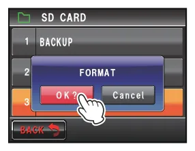</button><figcaption>Figure from page 35. 5&amp;%#4&amp; (14/#6</figcaption><dialog id="fig-14"><p>Figure from page 35. 5&amp;%#4&amp; (14/#6</p><form method="dialog"><button>Close</button></form></dialog></figure><p>~~<strong>Turning the power on</strong>~~</p>
<p>The screen display will disappear, and the power will be switched off.</p><p>~~<strong>Inputing the call sign</strong>~~</p>
<p>When switching the power on for the first time after purchasing, or after resetting
the device, a screen requesting the call sign of your own station be entered will be
displayed.
The call sign is used to identify the transmitting station when communicating in the
digital mode.</p>
<p><strong>1</strong> Touch the blinking <strong>[CALLSIGN]</strong></p>
<p>~~<strong>Tips</strong>~~ The display will change to the character input screen</p>
<p>automatically if there are no operations for about 3
seconds.</p>
<p><strong>2</strong> Touch a character key
The touched character will be displayed at the top of
the screen.
Enter each character of your call sign.</p>
<p>~~<strong>Tips</strong>~~   - Up to 10 characters (letters, numbers, and a hyphen )</p>
<p>can be entered.</p>
<pre><code>  - Refer to Page 23 on how to operate the character input
</code></pre>
<p>screen.</p>
<p><strong>3</strong> Touch <strong>[ENT]</strong>
The screen will change.
Thereafter, the entered call sign is displayed at the
bottom of the power on screen, and the display will
switch to the frequency display screen (dual band
screen).</p>
<p>�� - - ���� ��</p><p>~~<strong>Switching the operating band</strong>~~</p>
<p>The two bands are displayed at the top and bottom of the dual band screen. The
frequency and the modulation mode of the “operating band” can be changed. The band
that is not in operation is called the “sub-band”.</p>
<p><strong>1</strong> Touch the frequency display area of the band that
you would like to set as the operating band
The characters of the tag and frequency will be
displayed in white. The sub-band characters will be
displayed in gray.</p>
<p>~~<strong>Adjusting the volume</strong>~~</p>
<p><strong>1</strong> Turn
The volume level will be displayed in the VOL meter
below the frequency.</p><figure><button aria-label="Enlarge Figure from page 38" class="zoom" data-dialog="fig-15" type="button">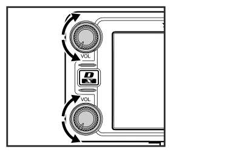</button><figcaption>Figure from page 38</figcaption><dialog id="fig-15"><p>Figure from page 38</p><form method="dialog"><button>Close</button></form></dialog></figure><p>~~<strong>Adjusting the squelch level</strong>~~</p>
<p>Annoying noises can be muted when a signal cannot be detected. Band A and Band B
squelch levels can be individually adjusted. Noise can be canceled more easily when
the squelch level is increased but it may become more difficult to pick up weak signals.
Adjust the squelch level as required.</p>
<p><strong>1</strong> Touch <strong>[SQL]</strong>
When <strong>[SQL]</strong> turns orange, the VOL meter below the
frequency will change to show the SQL level setting.</p>
<p>operation for three seconds.</p><p>~~<strong>Tuning the radio</strong>~~</p>
<ul>
<li><strong>●Using the knobs</strong></li>
</ul>
<p><strong>1</strong> Turn</p>
<p>a counter-clockwise direction.</p>
<ul>
<li><strong>●Using the microphone keys</strong></li>
</ul>
<p><strong>1</strong> Press</p><p><strong>3</strong> Touch a number key
The touched number will be displayed at the top of
the screen.</p>
<p>~~<strong>Tip</strong>~~ Refer to Page 23 for operation of the number input</p>
<p>screen.</p>
<p><strong>4</strong> Touch <strong>[ENT]</strong>
The display will return to the function menu and
the entered frequency of the operating band will be
displayed at the top of the screen.</p>
<p><strong>Changing the frequency steps</strong></p>
<p>The frequency step while tuning with the knob or <strong>[UP]</strong> / <strong>[DWN]</strong> keys of the microphone,
can be changed.</p>
<ul>
<li><strong>●Changing the frequency step to 1 MHz temporarily</strong></li>
</ul><p>to the normal step.</p>
<ul>
<li><strong>●Changing the frequency step to 5 MHz temporarily</strong></li>
</ul>
<p>screen.</p><figure><button aria-label="Enlarge Figure from page 42. Ჹ᲼Ჽ 8(1" class="zoom" data-dialog="fig-16" type="button">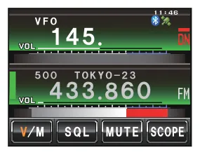</button><figcaption>Figure from page 42. Ჹ᲼Ჽ 8(1</figcaption><dialog id="fig-16"><p>Figure from page 42. Ჹ᲼Ჽ 8(1</p><form method="dialog"><button>Close</button></form></dialog></figure><p><strong>2</strong> Turn</p>
<p>to the normal step.</p>
<p><strong>STEP]</strong></p><figure><button aria-label="Enlarge Figure from page 43" class="zoom" data-dialog="fig-17" type="button">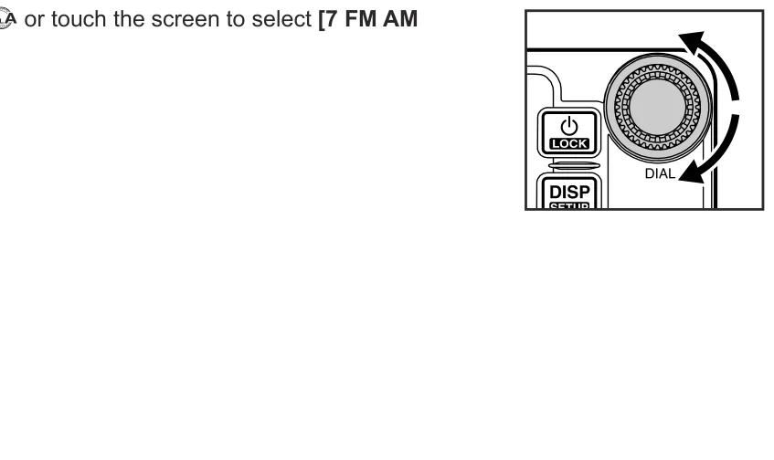</button><figcaption>Figure from page 43</figcaption><dialog id="fig-17"><p>Figure from page 43</p><form method="dialog"><button>Close</button></form></dialog></figure><p><strong>4</strong> Touch <strong>[7 FM AM STEP]</strong>
The frequency step that is currently set up will
change to orange.</p>
<p><strong>1</strong> Choose the operating band</p><p>The name (tag) assigned to the memory channel will</p>
<p><strong>3</strong> Touch <strong>[V/M]</strong> again
The mode will change to the VFO mode and the
frequency will return to the last frequency received.
“VFO” will be displayed above the frequency.</p>
<p>~~<strong>Switching the communication mode</strong>~~</p>
<p>This radio is equipped with an Automatic Mode Select (AMS) function which
automatically selects any one of four communication modes to match the signal
received.
Besides C4FM digital signals, analog signals are also identified in order to automatically
match the communication mode of the partner station.</p>
<ul>
<li>Digital communication can be performed only on the Band A.<pre><code>            - Display differs depending on the signal received.
</code></pre>
</li>
</ul>
<p>Display example when in the AMS AMS時の表示例</p><p>When operating in a fixed communication mode, switch to the communication mode using</p>
<p>.</p>
<p>“○○ [▀] [ (AMS)” → “DN (V/D mode)” → “VW/DW (FR mode)” → “FM (Analog)”]</p>
<table>
<thead>
<tr>
<th>Operating mode</th>
<th>Display</th>
<th>Explanation of modes</th>
</tr>
</thead>
<tbody>
<tr>
<td>AMS</td>
<td></td>
<td></td>
</tr>
<tr>
<td>(Automatic Mode Select)</td>
<td>▀</td>
<td></td>
</tr>
<tr>
<td>○○</td>
<td>The operating mode is automatically selected from four commun</td>
<td></td>
</tr>
<tr>
<td>modes to match the signal received.</td>
<td></td>
<td></td>
</tr>
<tr>
<td>(The ○○ part display differs according to the signal received)</td>
<td></td>
<td></td>
</tr>
<tr>
<td>The AMS feature settings may be changed via Set-up Menu (</td>
<td></td>
<td></td>
</tr>
<tr>
<td></td>
<td></td>
<td></td>
</tr>
<tr>
<td>V/D mode</td>
<td></td>
<td></td>
</tr>
<tr>
<td>(simultaneous voice and data</td>
<td></td>
<td></td>
</tr>
<tr>
<td>communication mode)</td>
<td>DN</td>
<td>As the audio signal error is detected and repaired at the same ti</td>
</tr>
<tr>
<td>the transmission of the digital audio signal, it becomes more d</td>
<td></td>
<td></td>
</tr>
<tr>
<td>for conversations to be cut off. A basic digital mode of C4FM F</td>
<td></td>
<td></td>
</tr>
<tr>
<td>Voice FR mode</td>
<td></td>
<td></td>
</tr>
<tr>
<td>(Voice full-rate mode)</td>
<td>VW</td>
<td>Digital voice data is transmitted using the entire 12.5 kHz band</td>
</tr>
<tr>
<td>High quality voice communication is possible.</td>
<td></td>
<td></td>
</tr>
<tr>
<td>Data FR mode</td>
<td></td>
<td></td>
</tr>
<tr>
<td>(high speed data</td>
<td></td>
<td></td>
</tr>
<tr>
<td>communication mode)</td>
<td>DW</td>
<td>High speed data communication mode using the entire 12.</td>
</tr>
<tr>
<td>bandwidth for data communication.</td>
<td></td>
<td></td>
</tr>
<tr>
<td>Automatically switches to this mode for video communication.</td>
<td></td>
<td></td>
</tr>
<tr>
<td>Analog FM mode</td>
<td>FM</td>
<td>Analog communication mode using the FM mode.</td>
</tr>
<tr>
<td>This mode is effective for communication when the signal stre</td>
<td></td>
<td></td>
</tr>
<tr>
<td>so weak that the voice is cut off midway in the digital mode.</td>
<td></td>
<td></td>
</tr>
</tbody>
</table>
<p>~~<strong>Caution</strong>~~</p>
<p>In the V/D mode (“DN” displayed), the position information is included in the transmitted signal during
the conversation, but in the Voice FR mode (“VW” displayed), the position information is not included.</p>
<p>~~<strong>Switching the modulation mode</strong>~~</p>
<p>The modulation mode can be selected from “FM”, “NARROW FM” and “AM” in the analog
mode.
When shipped from the factory, the mode is set to “AUTO” where the most optimal
modulation mode is automatically selected according to the frequency.</p>
<p><strong>1</strong> Choose the operating band</p><p><strong>3</strong> Touch <strong>[TX/RX]</strong>
The menu list will be displayed.</p>
<p><strong>4</strong> Touch <strong>[MODE]</strong> to select the modulation mode
The modulation mode changes in the following order
each time the screen is touched:
“AUTO (FM)”: Automatically switches the modulation</p>
<p>mode to match the frequency band
“FM”: Switches to the FM mode.
“NARROW FM”: Switches to the Narrow FM mode.</p>
<p>The degree of modulation becomes
half the normal level.</p>
<p><strong>1</strong> Touch <strong>[SCOPE]</strong></p>
<p><strong>[SCOPE]</strong> will turn orange and the band scope will be
displayed.</p>
<p>~~<strong>Tip</strong>~~ The range to be shown can also be adjusted. Refer to</p>
<p>“Setting the width of the band scope” ( P.172).</p><p><strong>2</strong> Touch <strong>[SCOPE]</strong> again
The display will return to the dual band screen.</p>
<p>~~<strong>Muting the audio</strong>~~</p>
<p>The audio in the operating band and sub-band can be muted with just one touch.</p>
<p><strong>1</strong> Touch <strong>[MUTE]</strong></p>
<p><strong>[MUTE]</strong> will turn orange and the sound will become
inaudible.</p><figure><button aria-label="Enlarge Figure from page 48. 5%12' Ჹ᲼ᲽᲾᲸᲸ" class="zoom" data-dialog="fig-18" type="button">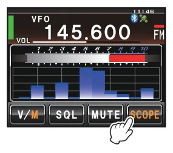</button><figcaption>Figure from page 48. 5%12' Ჹ᲼ᲽᲾᲸᲸ</figcaption><dialog id="fig-18"><p>Figure from page 48. 5%12' Ჹ᲼ᲽᲾᲸᲸ</p><form method="dialog"><button>Close</button></form></dialog></figure><p>~~<strong>Transmitting</strong>~~</p>
<p><strong>1</strong> Press and hold the microphone <strong>[PTT]</strong>
A red bar will be displayed on the left of the band
display.
Also, the transmission output level will be displayed
in the PO meter under the VOL meter.
<strong>2</strong> Talk directly into the microphone <strong>[MIC]</strong></p>
<p>~~<strong>Tip</strong>~~ Keep the microphone at a distance of about 1 inch away</p>
<p>from the mouth when talking.</p>
<p><strong>3</strong> Release <strong>[PTT]</strong>
The red bar and PO meter level will disappear and
the radio will return to the receiving state.</p>
<p>~~<strong>Tips</strong>~~</p>
<ul>
<li>
<p>Refrain from transmitting continuously for a long period of time
as much as possible. The temperature of the main body will
rise and this may result in burns and equipment failure due to
overheating.</p>
</li>
<li>
<p>“ERROR TX FREQ” will be displayed when attempting to
transmit on a frequency that is not in the amateur band.</p>
</li>
</ul><table>
<thead>
<tr>
<th>Model</th>
<th>HI</th>
<th>MD</th>
<th>LO</th>
</tr>
</thead>
<tbody>
<tr>
<td>FTM-400DR/DE</td>
<td>50 W</td>
<td>20 W</td>
<td>5 W</td>
</tr>
</tbody>
</table>
<p><strong>Adjusting the sensitivity of the microphone</strong></p><figure><button aria-label="Enlarge Figure from page 50" class="zoom" data-dialog="fig-19" type="button">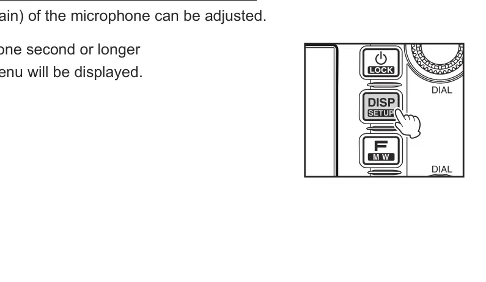</button><figcaption>Figure from page 50</figcaption><dialog id="fig-19"><p>Figure from page 50</p><form method="dialog"><button>Close</button></form></dialog></figure><p><strong>2</strong> Touch <strong>[TX/RX]</strong>
The menu list will be displayed.</p>
<p><strong>3</strong> Touch <strong>[AUDIO]</strong>
The menu list will be displayed.</p>
<p><strong>4</strong> Press and hold the microphone <strong>[PTT]</strong> to talk</p>
<p>~~<strong>Tip</strong>~~</p>
<p>The Narrow FM mode can also be used. Set the mode to <strong>[NARROW FM]</strong> under <strong>[TX/RX]</strong> → <strong>[MODE]</strong>
in the set-up menu.</p><p>~~<strong>Communicating using the repeater</strong>~~</p>
<p>This radio includes an ARS (Automatic Repeater Shift) function which permits
communication through the repeater automatically just by setting the receiver to the
repeater frequency.
<strong>1</strong> Set the receive frequency to the repeater frequency
“-” or “+” appears on top of the display.
<strong>2</strong> Press <strong>[PTT]</strong>, to begin communicating through the repeater</p>
<ul>
<li>
<p><strong>●Repeater shift</strong>
The FTM-400DR/DE has been configured, at the factory, for the repeater shifts
customary in the country where it is sold. For the 144 MHz band, this usually will be 600
kHz, while the 430 MHz shift will be 1.6 MHz or 7.6 MHz.
Depending on the part of the band in which you are operating, the repeater shift may
be either downward (−) or upward (+), and one of these icons will appear on the display
when repeater shifts have been enabled.</p>
</li>
<li>
<p><strong>●Automatic repeater shift (ARS)</strong>
The FTM-400DR/DE ARS feature causes the appropriate repeater shift to be
automatically applied whenever it is tuned into the designated repeater sub-bands.
If the ARS feature does not appear to be working, you may have accidentally disabled it.
To re-enable ARS:</p>
</li>
</ul>
<p>The set-up menu will be displayed.</p><p><strong>2</strong> Touch <strong>[CONFIG]</strong>
The menu list will be displayed.</p>
<p><strong>SHIFT]</strong>
<strong>4</strong> Touch <strong>[4 AUTO RPT SHIFT]</strong> to select “ON”</p>
<p>has been gained, you may release the [P1] key, and use the <strong>[PTT]</strong> for activating the
transmitter thereafter.</p><p>~~<strong>Changing the beep volume</strong>~~</p>
<p>The volume of the confirmation beep that goes off when a key is pressed can be
adjusted.</p><p>~~<strong>Locking the knobs and switches</strong>~~</p>
<p>The knobs and switches etc. can be locked to avoid inadvertent changes and
unintended operation.</p><p>~~<strong>Adjusting the date and time</strong>~~</p>
<p><strong>3</strong> Touch <strong>[1 DATA &amp; TIME ADJUST]</strong>
The screen for setting the date and time will be
displayed.</p>
<p><strong>4</strong> Touch <strong>[SET]</strong>
“Month” will blink.</p>
<p><strong>5</strong> Touch <strong>[+]</strong> and <strong>[-]</strong> to set the month</p>
<p><strong>6</strong> Touch <strong>[SET]</strong>
“Day” will blink.</p><p><strong>7</strong> Touch <strong>[+]</strong> and <strong>[-]</strong> to set the day</p>
<p><strong>8</strong> Touch <strong>[SET]</strong>
“Year” will blink.</p>
<p><strong>9</strong> Touch <strong>[+]</strong> and <strong>[-]</strong> to set the year</p>
<p><strong>10</strong> Touch <strong>[SET]</strong>
“Hour” will blink.</p>
<p><strong>11</strong> Touch <strong>[+]</strong> and <strong>[-]</strong> to set the hour</p>
<p><strong>12</strong> Touch <strong>[SET]</strong>
“Minute” will blink.</p>
<p><strong>13</strong> Touch <strong>[+]</strong> and <strong>[-]</strong> to set the minute</p><figure><button aria-label="Enlarge Figure from page 57. Other Settings 7 Touch [+] and [-] to set the day" class="zoom" data-dialog="fig-20" type="button">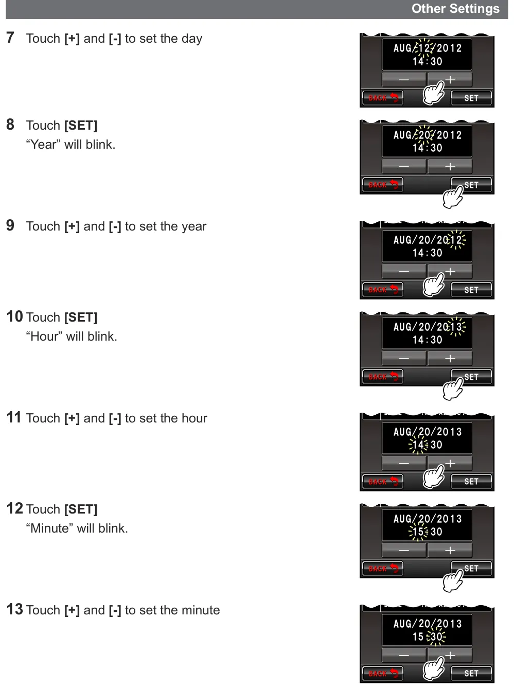</button><figcaption>Figure from page 57. Other Settings 7 Touch [+] and [-] to set the day</figcaption><dialog id="fig-20"><p>Figure from page 57. Other Settings 7 Touch [+] and [-] to set the day</p><form method="dialog"><button>Close</button></form></dialog></figure><p>~~<strong>Adjusting the display brightness</strong>~~</p><figure><button aria-label="Enlarge Figure from page 58. $#%- $#%- 6:4:" class="zoom" data-dialog="fig-21" type="button">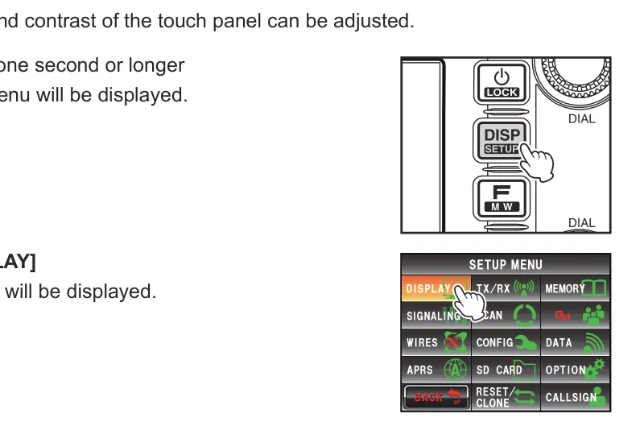</button><figcaption>Figure from page 58. $#%- $#%- 6:4:</figcaption><dialog id="fig-21"><p>Figure from page 58. $#%- $#%- 6:4:</p><form method="dialog"><button>Close</button></form></dialog></figure><p><strong>4</strong> Touch <strong>[+]</strong> and <strong>[-]</strong> to select the brightness level
The setting changes by one level each time the
screen is touched. The brightness level can be
selected from one of the following seven levels.
“MIN”, “2”, “3”, “4”, “5”, “6” and “MAX”</p>
<p>~~<strong>Tip</strong>~~ Factory default value: MAX</p>
<p><strong>5</strong> Touch <strong>[BACK]</strong>
The brightness is set and the display returns to the
previous screen.</p>
<p>~~<strong>Tip</strong>~~ Factory default value: +3</p>
<p>previous screen.</p><figure><button aria-label="Enlarge Figure from page 59. /#: /+0      .%&amp;$4+)*60'55 Ჽ" class="zoom" data-dialog="fig-22" type="button">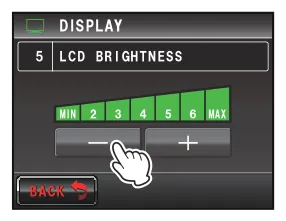</button><figcaption>Figure from page 59. /#: /+0      .%&amp;$4+)*60'55 Ჽ</figcaption><dialog id="fig-22"><p>Figure from page 59. /#: /+0      .%&amp;$4+)*60'55 Ჽ</p><form method="dialog"><button>Close</button></form></dialog></figure><p>~~<strong>Changing the background color of the frequency display area</strong>~~</p>
<p>color</p>
<p>“GRAY”</p><p>The settings and memory of this radio can be returned to be default factory settings</p>
<p>memory channels.
*Settings in the set-up menu
will not be erased.</p>
<p><strong>[6 APRS RESET]</strong> : This restores the APRS settings</p>
<p>to the default value when shipped
from the factory.</p>
<p><strong>3</strong> Touch the item to be reset
The reset confirmation screen will be displayed.</p>
<p><strong>4</strong> Touch <strong>[OK?]</strong>
The settings and memory will be reset and restored
to the default status when shipped from the factory</p>
<p>~~<strong>Tip</strong>~~ Touch <strong>[Cancel]</strong> to stop the resetting.</p><p>quickly and conveniently operate on present channel. The radio is also equipped with
the following memory functions:</p>
<p>··Skips memory channels that you do not wish to receive during scanning ( P.77)
··Scans only the specified memory channels ( P.76)
··“Programmable Memory Scan (PMS)” that scans only the specified frequency range
(in the same frequency band) ( P.79)</p>
<p>The operating frequency and other operational information can be registered to each
regular memory channel, home channel, or PMS memory channel:</p>
<ul>
<li>
<p>Operating frequency - Memory tag - Repeater information</p>
</li>
<li>
<p>Tone information - DCS information - Transmission power</p>
</li>
<li>
<p>Memory skip information
(The operating mode information is not registered to the memory channels)</p>
</li>
</ul>
<p>~~<strong>Writing to the memory</strong>~~</p>
<p>~~<strong>Tip</strong>~~</p>
<p>The information saved in the memory may be lost due to incorrect operation, static electricity or
electrical noise. Data may also be lost due to component failures and repairs. Make sure to write
down the information registered in the memories on a piece of paper or by using a micro-SD card.</p>
<p>A total of 500 channel memories each, can be used for Band A and Band B.</p>
<p><strong>1</strong> Switch to the VFO mode</p>
<p>memory</p>
<p>The memory writing screen will be displayed.
The frequency will be automatically displayed in the
next empty memory channel.</p>
<p>~~<strong>Tip</strong>~~ Refer to Steps 3 to 12 in “Naming a memory channel”</p>
<p>( P.66) when assigning a name to a memory channel.</p>
<p>channel</p>
<p>~~<strong>Tip</strong>~~ The memory channel can also be selected by touching it</p>
<p>directly.</p>
<p>When the memory writing is completed, the
frequency and memory channel number will be
shown in the display.</p>
<p>~~<strong>Tips</strong>~~ - The frequency that is already written in the memory can</p>
<p>also be overwritten by a new frequency.</p>
<pre><code>- Touch **[V/M]** to return to the VFO mode.
</code></pre><p>~~<strong>Recalling the memory</strong>~~</p>
<p><strong>1</strong> Touch <strong>[V/M]</strong> to switch the mode
The memory channel last used will be shown in the
display.</p>
<p>Touch <strong>[V/M]</strong> again to return to the VFO mode.</p>
<p>~~<strong>Tip</strong>~~</p>
<p>Non-registered memory channels will be skipped.</p>
<p>~~<strong>Recalling the home channel</strong>~~</p><p><strong>3</strong> Touch <strong>[HOME]</strong>
The home channel will be shown in the display.</p>
<p>Touch <strong>[HOME]</strong> again to return to the VFO mode and
display the frequency that was selected before the
home channel was recalled.</p>
<p>~~<strong>Tip</strong>~~</p>
<p>When shipped from the factory, the frequency in the home channel of Band A is set to 144.000 MHz
while the frequency in the home channel of Band B is set to 430.000 MHz.</p>
<p><strong>Changing the frequency of the home channel</strong></p>
<p>The default frequency setting of the home channel when shipped from the factory can
be changed.
<strong>1</strong> Switch to the VFO mode
<strong>2</strong> Adjust the frequency using</p>
<p><strong>5</strong> Press
The overwrite confirmation screen will be displayed.</p><p><strong>6</strong> Touch <strong>[OK?]</strong> to confirm and store the home channel
frequency
When the writing to the home channel is completed,
the updated home channel frequency will be
displayed.</p>
<p>��� - - - ����</p>
<p>~~<strong>Erasing the memory</strong>~~</p>
<p><strong>1</strong> Touch <strong>[V/M]</strong> for 2 to 3 seconds
The memory list will be displayed.</p>
<p><strong>3</strong> Touch <strong>[DEL]</strong>
The erase confirmation screen will be displayed.</p>
<p><strong>4</strong> Touch <strong>[OK?]</strong> to confirm and delete the data
The memory will be erased, and the display will
become an empty field.</p>
<p>~~<strong>Tips</strong>~~   - Touch <strong>[Cancel]</strong> to cancel the memory deletion.</p>
<pre><code>  - Repeat Steps 2 to 4 to erase additional memories.
</code></pre>
<p>~~<strong>Caution</strong>~~</p>
<p>Memory channel 1 and the home channel cannot be erased.</p><p>~~<strong>Naming the memory</strong>~~</p>
<p>Names (memory tags) such as call signs and the names of the broadcasting stations
can be assigned to the memory channels and home channel.
Up to eight of the following characters can be entered as a memory tag.</p>
<ul>
<li>English letters (capital/small letters), numbers, symbols</li>
</ul>
<p><strong>Example: Assigning a name like “YM Grp01”</strong></p>
<p><strong>2</strong> Select the memory channel the name is going to be
assigned to</p>
<p>~~<strong>Tip</strong>~~ Select the home channel when assigning a name to the</p>
<p>home channel.</p>
<p>The character input screen will be displayed.</p>
<p>or longer to display the character input screen.</p>
<p><strong>4</strong> Touch <strong>[Caps]</strong> first, and then touch <strong>[Y]</strong> and <strong>[M]</strong></p>
<p><strong>[Caps]</strong> will turn orange, enabling capital letters to be
entered.</p>
<p><strong>7</strong> Touch <strong>[Caps]</strong> first, and then touch <strong>[R]</strong> and <strong>[P]</strong></p>
<p><strong>[Caps]</strong> will turn white, enabling lower case letters to
be entered.</p>
<p>����</p>
<hr/>
<hr/>
<ul>
<li>
<ul>
<li>
<ul>
<li>
<ul>
<li>
<ul>
<li>
<ul>
<li>
<ul>
<li>
<ul>
<li>����</li>
</ul>
</li>
</ul>
</li>
</ul>
</li>
</ul>
</li>
</ul>
</li>
</ul>
</li>
</ul>
</li>
</ul><p><strong>8</strong> Touch <strong>[123]</strong>
The number and symbols input screen will be
displayed.
<strong>9</strong> Touch <strong>[0]</strong> and then <strong>[1]</strong></p>
<p><strong>10</strong> Touch <strong>[ENT]</strong>
The name will be stored in memory and displayed on
the right side of the frequency.</p>
<p><strong>11</strong> Touch <strong>[BACK]</strong>
The display will return to the previous screen.</p>
<p><strong>Changing the method of the memory tag display</strong></p>
<p>The method of displaying the frequency and name assigned to the memory can be
selected for each channel.
<strong>1</strong> Switch to the memory mode
<strong>2</strong> Select the memory channel that you want to change the memory tag display method
on</p>
<p>The set-up menu will be displayed.</p><p><strong>5</strong> Touch <strong>[1 ALPHA TAG SIZE]</strong> to select the memory
tag display size
The setting will switch between “SMALL” and
“LARGE” each time it is touched.
“SMALL”: Display the memory tag in small-sized</p>
<p>characters and the frequency in largesized characters.
“LARGE”: Display the memory tag in large-sized</p>
<p>characters and the frequency in smallsized characters.</p>
<p>~~<strong>Tip</strong>~~ Factory default value: LARGE</p>
<p>The size of the memory tag display will be set and the display will return to the
previous screen.</p>
<p>memory mode.</p>
<p><strong>LARGE</strong></p>
<p><strong>SMALL</strong></p>
<p>channel.</p>
<ul>
<li><strong>●Simultaneous registration</strong>
<strong>1</strong> Select the receive frequency in the VFO mode</li>
</ul>
<p>The memory writing screen will be displayed.</p>
<p>The character input screen will be displayed.</p>
<p>~~<strong>Tip</strong>~~ Refer to Steps 4 to 11 in “Naming a memory channel” (</p>
<p>P.66) when assigning a name to a memory channel.</p>
<p>����</p>
<hr/>
<ul>
<li>
<ul>
<li>
<ul>
<li>
<ul>
<li>
<ul>
<li>
<ul>
<li>
<ul>
<li>
<ul>
<li>����</li>
</ul>
</li>
</ul>
</li>
</ul>
</li>
</ul>
</li>
</ul>
</li>
</ul>
</li>
</ul>
</li>
</ul>
<p>������ ��� ����� ���</p><figure><button aria-label="Enlarge Figure from page 68. $#%- $#%- /'/14;" class="zoom" data-dialog="fig-23" type="button">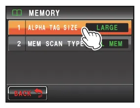</button><figcaption>Figure from page 68. $#%- $#%- /'/14;</figcaption><dialog id="fig-23"><p>Figure from page 68. $#%- $#%- /'/14;</p><form method="dialog"><button>Close</button></form></dialog></figure><p><strong>5</strong> Enter the transmit frequency
The entered frequency will be displayed on the right
side of [T] at the top of the screen.</p>
<p><strong>6</strong> Touch <strong>[ENT]</strong>
The display will return to the memory writing screen.</p>
<p>~~<strong>Tip</strong>~~ The memory channel can also be selected by touching it directly.</p>
<p>When the memory writing is completed, the receive frequency will be shown in the
display.</p>
<ul>
<li><strong>●Registering transmit frequency at a later time</strong></li>
</ul>
<p><strong>2</strong> Select the memory channel whose transmit
frequency is to be registered</p>
<p>The character input screen will be displayed.</p>
<p>longer to display the character input screen.</p>
<pre><code>  - Refer to Steps 3 to 12 in “Naming a memory channel”
</code></pre>
<p>( P.66) when assigning a name to a memory channel.</p><p><strong>5</strong> Enter the transmit frequency
The entered frequency will be displayed on the right
side of [T] at the top of the screen.</p>
<p><strong>6</strong> Touch <strong>[ENT]</strong>
The display will return to the memory list.</p>
<p>When memory writing is complete, the receive frequency will be shown in the
display.</p>
<p>~~<strong>Receiving Weather Broadcast Channels (USA version only)</strong>~~</p>
<p>This radio includes the preprogrammed VHF Weather Broadcast Station Memory
Channel Bank, and can receive the broadcast or the weather alert by recalling or
scanning a desired channel.
The following channels are stored in the weather station memory bank of this radio.</p>
<p>|Channel
No.|Frequency|Col3|Channel
No.|Frequency|
|---|---|---|---|---|
|WX01|162.550 MHz||WX06|162.500 MHz|
|WX02|162.400 MHz|162.400 MHz|WX07|162.525 MHz|
|WX03|162.475 MHz|162.475 MHz|WX08|161.650 MHz|
|WX04|162.425 MHz|162.425 MHz|WX09|161.775 MHz|
|WX05|162.450 MHz|162.450 MHz|WX10|163.275 MHz|</p>
<p>This “WX” function can only be used through the programmable keys <strong>[P1]</strong> to <strong>[P4]</strong> on the
microphone.</p><p><strong>Assigning the “WX” function to a programmable key on the microphone</strong></p>
<p>The set-up menu will be displayed.
<strong>2</strong> Select and touch <strong>[CONFIG]</strong>
The menu list will be displayed.
<strong>3</strong> Select and touch <strong>[10 MIC PROGRAM KEY]</strong>
The setting screen for programmable keys on the microphone will be displayed.
<strong>4</strong> Touch the key name (P1 to P4) where the WX function is going to be assigned
The functions that can be assigned will be displayed.</p>
<p><strong>5</strong> Select and touch <strong>[WX]</strong>
<strong>6</strong> Touch <strong>[BACK]</strong>
The display will return to the setting screen for programmable keys.</p>
<p><strong>Recalling the weather channels</strong>
<strong>Example: When “WX” is assigned to [P1]</strong>
<strong>1</strong> Press <strong>[P1]</strong> on the microphone
The WX function is activated, and the weather channel selected last time the WX
function was activated will be displayed on the screen.</p>
<p><strong>3</strong> Press the <strong>[PTT]</strong> button on the microphone to search for louder stations
Scanning of the channels stored in the weather station memory bank will start.
When the scanning pauses on a station, press the <strong>[PTT]</strong> button once to halt the
scan, or press it twice to restart the scan.
<strong>4</strong> Press the <strong>[PTT]</strong> button to finish the scan
<strong>5</strong> Press <strong>[P1]</strong>
The WX function will be inactivated and the display will return to the previous screen.</p>
<p><strong>Listening the weather alert</strong></p>
<p>In the event of extreme weather disturbances, such as storms and hurricanes, the
NOAA (National Oceanic and Atmospheric Administration) sends a weather alert
accompanied by a 1050 Hz tone and subsequent weather report on one of the
NOAA weather channels. You may disable to receive the weather alert tone using</p>
<p><strong>[SIGNALING]→[9 WX ALERT]</strong> in the set-up menu.</p><p>The FTM-400DR/DE transceiver is equipped with a scanning function to search for
memory channels and VFO frequencies for active signals.
Scanning can be performed using the following four methods:</p>
<p>VFO scan</p>
<p>Scan for all memory channels</p>
<p>Scan for specified memory channels</p>
<p>Scanning the programmable memories</p>
<p>~~<strong>VFO scan</strong>~~</p>
<p><strong>1</strong> Select the band to be scanned, and switch to the VFO mode</p>
<p>The function menu will be displayed.
<strong>3</strong> Touch <strong>[SCAN]</strong></p>
<p>touch <strong>[BACK]</strong> and <strong>[FWD]</strong> to switch the menu.</p>
<p>During scanning, the decimal point of the frequency
display will blink.
When a signal is received, the scan will stop for three
seconds before starting to scan again.</p>
<p>~~Tips~~ - The scan can also be started by pressing the <strong>[UP]</strong> or</p>
<p><strong>[DWN]</strong> button on the microphone for one second or
longer.</p>
<ul>
<li>
<p>The scanning direction (UP/DOWN) can be set using <strong>[SCAN]</strong> → <strong>[2 SCAN DIRECTION]</strong> in the
set-up menu.</p>
</li>
<li>
<p>The scanning direction can also be changed by pressing the <strong>[UP]</strong> or <strong>[DWN]</strong> button on the</p>
</li>
<li>
<p>The action used to stop the scanning may be set using <strong>[SCAN]</strong> → <strong>[3 SCAN RESUME]</strong> in the
set-up menu (refer to the next page).</p>
</li>
<li>
<p>The squelch level may be adjusted using the following procedure during scanning.</p>
</li>
</ul><ul>
<li><strong>●To stop the scanning</strong>
To stop the scanning, either touch <strong>[SCAN]</strong> or press the microphone <strong>[PTT]</strong> button (the
radio will not transmit in this case).</li>
</ul>
<p><strong>Setting the receive operation when the scanning stops</strong></p>
<p>Any of the following three methods can be selected as the action to be taken after the
scanning stops.</p>
<p>(1) Restarts the scanning after receiving for the set amount of time. Select from one,</p>
<p>three or five seconds.</p>
<p>(2) Continues receiving until the signal disappears and then restart the scanning two</p>
<p>seconds after the signal disappears (BUSY).</p>
<p>(3) Stops the scanning to receive at that frequency (HOLD).</p>
<p>The set-up menu will be displayed.
<strong>2</strong> Touch <strong>[SCAN]</strong>
The menu list will be displayed.</p>
<p><strong>3</strong> Touch <strong>[3 SCAN RESUME]</strong> to select the reception
method
The reception method will change in the following
order each time the screen is touched.
“BUSY” → “HOLD” → “1sec” → “3sec” → “5sec”</p>
<p>~~Tips~~   - The reception method can also be selected by pressing</p>
<p>.</p>
<pre><code>  - Factory default value: 3 sec
</code></pre>
<p>The reception method when the scanning stops will be set and the display will return
to the previous screen.</p>
<p>~~<strong>Tip</strong>~~</p>
<p>The settings here are applicable to “VFO Scan”, “Memory Scan” and “Programmable Memory Scan”.</p><p>~~<strong>Memory scan</strong>~~</p>
<p>The FTM-400DR/DE transceiver will scan the frequencies registered in the memories in
the order of the memory channel number.</p>
<p><strong>1</strong> Switch to the memory mode</p>
<p>The function menu will be displayed.
<strong>3</strong> Touch <strong>[SCAN]</strong></p>
<p>touch <strong>[BACK]</strong> or <strong>[FWD]</strong> to switch the menu.</p>
<p>During scanning, the decimal point of the frequency
display will blink.
When a signal is received, the scan will stop for three
seconds before starting to scan again.</p>
<p>~~Tips~~ - The scan can also be started by pressing the <strong>[UP]</strong> or</p>
<p><strong>[DWN]</strong> button on the microphone for one second or
longer.</p>
<pre><code>  - The scanning direction (UP/DOWN) can be set using **[SCAN]** → **[2 SCAN DIRECTION]** in the
</code></pre>
<p>set-up menu.</p>
<pre><code>  - The action to be taken when scanning is stopped can be set using **[SCAN]** → **[3 SCAN**
</code></pre>
<p><strong>RESUME]</strong> in the set-up menu (refer to the previous page).</p>
<pre><code>  - The squelch level may be adjusted using the following procedure during scanning.
</code></pre>
<p>Touch <strong>[SQL]</strong> → Turn</p>
<ul>
<li><strong>●To stop the scanning</strong>
To stop the scanning, either touch <strong>[SCAN]</strong> or press the microphone <strong>[PTT]</strong> button (the
radio will not transmit in this case).</li>
</ul><p><strong>Selecting the scanning method</strong></p>
<p>The scanning may be set for all memories or only specified memories.</p>
<p>The set-up menu will be displayed.
<strong>2</strong> Touch <strong>[MEMORY]</strong>
The menu list will be displayed.</p>
<p>method
The setting will switch between “ALL MEM” and</p>
<p>ALL MEM: Scan all memories.
SELECT MEM: Scan only specified memories.</p>
<pre><code>  - Factory default value: ALL MEM
</code></pre>
<p>The scanning method will be set and the display will return to the previous screen.</p>
<p><strong>Setting the specified memories</strong></p>
<p>Specify the memories to be scanned when “2 MEM SCAN TYPE” is set to “SELECT
MEM” in the set-up menu.</p>
<p>The memory can be specified using either of the following two methods:</p>
<p>(1) Selects channels using the memory list screen</p>
<p>(2) Specifies individual channels using the function menu screen</p>
<p><strong>(1) Specify memory channels using the memory list screen</strong></p>
<p><strong>1</strong> Touch <strong>[V/M]</strong> for 2 to 3 seconds (until the beep
sounds)
The memory list screen will be displayed.</p><p><strong>2</strong> Select the memory channel to be specified by turning</p>
<p>~~Tip~~ The memory channel may also be selected by touching it
on the screen.
<strong>3</strong> Touch <strong>[SKIP/SEL]</strong> to display “SELECT”
The setting displayed under <strong>[SKIP/SEL]</strong> will change
in the following order each time it is touched.
“OFF” → “SKIP” → “SELECT”</p>
<p>~~Tip~~ Repeat Steps 2 and 3 to specify the other memories next.
<strong>4</strong> Touch <strong>[BACK]</strong>
Return to the previous screen, and “” will be displayed on the left side of the
memory channel number.</p>
<p><strong>(2) Specify individually using the function menu screen</strong></p>
<p><strong>1</strong> Switch to the memory mode, and recall the memory channel to be set as the
specified channel
<strong>2</strong> Press
The function menu will be displayed.</p>
<p>channel number.</p>
<p>~~Tip~~ When <strong>[SKIP/SEL]</strong> is not displayed in the function menu,
touch <strong>[BACK]</strong> or <strong>[FWD]</strong> to change the menu.
The setting displayed under <strong>[SKIP/SEL]</strong> will change
in the following order each time it is touched.
“OFF” → “SKIP” → “SELECT”</p>
<p><strong>Scan only the specified memory channels</strong></p>
<p><strong>1</strong> First, select the band to be scanned, before switch to the memory mode</p>
<p>The set-up menu will be displayed.
<strong>3</strong> Touch <strong>[MEMORY]</strong></p><p><strong>4</strong> Touch <strong>[2 MEM SCAN TYPE]</strong> and select “SELECT
MEM”
The setting will switch between“ALL MEM” and
“SELECT MEM” each time it is touched.</p>
<p>The display will return to the previous screen.</p>
<p><strong>6</strong> Press
The function menu will be displayed.
<strong>7</strong> Touch <strong>[SCAN]</strong>
The scan only those memory channels that have
been set to “SELECT” will be started.</p>
<p>~~Tips~~ - The scan can also be started by pressing the <strong>[UP]</strong> or</p>
<p><strong>[DWN]</strong> button on the microphone for one second or
longer.</p>
<pre><code>  - The scan will be performed in increasing order of the memory channel number.

  - When a signal is received, the scanning stops for three seconds and then the scanning starts
</code></pre>
<p>again.</p>
<pre><code>  - To stop the scanning, either touch **[SCAN]** or press the microphone **[PTT]** button (the radio
</code></pre>
<p>will not transmit in this case).</p>
<p><strong>Setting the memories to be skipped</strong></p>
<p>Memory channels which you do not wish to receive can be skipped during scanning.</p>
<p>The channels to be skipped can be set using the following two methods:</p>
<p>(1) Designate channels using the memory list screen</p>
<p>(2) Sets channels individually using the function menu screen</p>
<p><strong>(1) Designating channels to be skipped using the memory list screen</strong></p>
<p><strong>1</strong> Touch <strong>[V/M]</strong> for two to three seconds (until the beep
sounds)
The memory list screen will be displayed.</p>
<p>~~Tip~~ The memory can also be selected by touching it directly.</p><p><strong>3</strong> Touch <strong>[SKIP/SEL]</strong> to display “SKIP”
The setting displayed under <strong>[SKIP/SEL]</strong> will change
in the following order each time it is touched.
“OFF” → “SKIP” → “SELECT”</p>
<p>~~Tip~~ Repeat Steps 2 and 3 to specify the other memories
next.</p>
<p>��� - - - ����</p>
<p><strong>4</strong> Touch <strong>[BACK]</strong>
Return to the previous screen, and a blinking “” will be displayed on the left side of
the memory channel number.</p>
<p><strong>(2) Setting channels to be skipped individually using the function menu screen</strong></p>
<p><strong>1</strong> Switch to the memory mode, and recall the memory channels that have been set to
be skipped
<strong>2</strong> Press
The function menu will be displayed.</p>
<p>~~Tip~~ When <strong>[SKIP/SEL]</strong> is not displayed in the function menu,
touch <strong>[BACK]</strong> or <strong>[FWD]</strong> to change the menu.
The setting displayed under <strong>[SKIP/SEL]</strong> will change
in the following order each time it is touched.
“OFF” → “SKIP” → “SELECT”</p><p>~~<strong>Scanning the programmable memories (PMS)</strong>~~</p>
<p>Using the dedicated memory channel, only the frequencies within the specified
frequency range will be scanned.
The frequency range is registered beforehand in the PMS memory channel.</p>
<p><strong>Writing into the programmable memory</strong></p>
<p>Nine pairs (P1L/P1U through P9L/P9U) of frequency ranges can be set up in the PMS
memory channels.
Register the lower limit of the frequency range to be scanned into the memory channel
“PL” and the upper limit into the memory channel “PU”.
Memories with the same channel number “” (a number from 1 to 9) are handled as
one pair of PMS channel “P”.</p>
<p><strong>Example: Set up a PMS channel by registering a lower frequency of 433.200 MHz</strong></p>
<p><strong>and an upper frequency of 433.700 MHz in the P1 memory channel</strong>
<strong>1</strong> Switch to the VFO mode</p>
<p>~~Caution~~ The frequency to be set as the lower limit (P1L)
must be lower than the upper limit (P1U).</p>
<p>The memory writing screen will be displayed.</p>
<p>The memory channel can also be selected by
touching it directly.</p>
<p>~~Tip~~ The memory channel can be assigned with an alpha-tag
name ( P.66).</p>
<p><strong>5</strong> Press
The display will return to the previous screen, and the memorized frequency and
memory channel number will be displayed.
<strong>6</strong> Switch to the VFO mode</p>
<p>The memory channel can also be selected by</p><p><strong>10</strong> Press
The display will return to the previous screen, and the memorized frequency and
memory channel number will be displayed.</p>
<p><strong>Lower frequency P1L</strong></p>
<p><strong>Upper frequency P1U</strong></p>
<p><strong>Scanning the programmable memory</strong></p>
<p><strong>1</strong> Switch to the memory mode
<strong>2</strong> Recall the PMS memory of the upper frequency or lower frequency</p>
<p>The function menu will be displayed.</p>
<p>~~Tip~~ When <strong>[SCAN]</strong> is not displayed in the function menu,
touch <strong>[BACK]</strong> or <strong>[FWD]</strong> to switch the menu.
The programmable memory scan will be started.</p>
<p>~~Tips~~ - The scan can also be started by pressing the <strong>[UP]</strong> or</p>
<p><strong>[DWN]</strong> button on the microphone for one second or
longer.</p>
<ul>
<li>
<p>When a signal is received, the scanning stops for three seconds and then the scanning starts
again.</p>
</li>
<li>
<p>To stop the scanning, either touch <strong>[SCAN]</strong> or press the microphone <strong>[PTT]</strong> button (the radio
will not transmit in this case).</p>
</li>
<li>
<p>The squelch level may be adjusted using the following procedure during scanning.
Touch <strong>[SQL]</strong> → Turn</p>
</li>
</ul>
<p>~~<strong>Caution</strong>~~</p>
<p>When the upper and lower frequencies are not set correctly, the programmable memory scan will not
work.</p><p>This radio is equipped with a dual receive function (also known as dual watch (DW))
which checks for a signal on the home channel approximately every three seconds
while monitoring or scanning. If a signal is detected, the home channel is received for
five seconds, and then monitoring or scanning with dual receive is resumed.</p>
<p><strong>Example: When checking the home channel while receiving “145.500 MHz”</strong></p>
<p>Reception frequency</p>
<p>Monitor the home channel at
intervals of about three seconds.</p>
<p>When the home channel is busy,
the radio receives the signal for
five seconds and then starts the
dual receive again.</p>
<p><strong>Using the dual receive</strong></p>
<p><strong>1</strong> Tune in to the memory channel or a desired VFO receive frequency using</p>
<p>The function menu will be displayed.</p>
<p>~~Tip~~ When <strong>[DW]</strong> is not displayed in the function menu, touch</p>
<p><strong>[BACK]</strong> or <strong>[FWD]</strong> to switch the menu.
Dual receive will start, and the home channel
frequency will be received approximately every three
seconds.</p>
<p>When a signal is detected on the home channel, it will continue to be received until
the signal disappears.</p>
<ul>
<li><strong>●To cancel the dual receive</strong>
Touch <strong>[DW]</strong> again.</li>
</ul><p><strong>Setting the restart condition of dual receive</strong></p>
<p>The dual receive restart condition when the home channel signal is detected can be
selected from the following two ways.</p>
<p>(1) Restarts dual receive after five seconds have passed (AUTO).</p>
<p>(2) Stops dual receive and continue to receive the home channel (HOLD).</p>
<p>The set-up menu will be displayed.
<strong>2</strong> Touch <strong>[SCAN]</strong>
The menu list will be displayed.</p>
<p><strong>3</strong> Touch <strong>[1 DUAL WATCH STOP]</strong> to select the restart
condition
The setting switches between “AUTO” and “HOLD”
each time it is touched.</p>
<p>~~Tip~~ Factory default value: AUTO</p>
<p>The dual receive restart condition will be set and the display will return to the
previous screen.</p><p>position information at all times. The position information can be used as in the following
example.</p>
<p>Save the position information in the memory and use it for navigation purposes
Refer to “Using the backtrack function” (Page 95)
Save the stations with frequent communications and checks whether they are
within the sphere of communications
Refer to the separate “Operating Manual GM Edition”
Exchange position information and messages through data communications with
other stations
Refer to the separate “Operating Manual APRS Edition”</p>
<p>~~<strong>What is GPS?</strong>~~</p>
<p>GPS or Global Positioning System is a satellite location system to determine the current
position on earth. It is a military system developed by the US Department of Defense
with approximately 30 GPS satellites circumnavigating the earth at an altitude of about
20,000 km, When signals from three or more satellites in space are received, the
current position information (longitude, latitude, altitude etc.) may be determined within
an accuracy of several meters. The accurate time can also be received from the atomic
clock built into the GPS satellite.</p>
<p>~~<strong>Positioning Using GPS</strong>~~</p>
<p>power
The satellite search will begin and the ~~“~~ ” icon will
be displayed at the top right of the screen.</p>
<p>~~Tips~~   - It may take several minutes to capture the satellites.</p>
<pre><code>  - When three or more satellites cannot be captured, the
</code></pre>
<p>icon display will disappear. In this case, positioning is
not possible and the position information cannot be
used.</p><p><strong>About GPS positioning</strong>
Positioning refers to the calculation of one’s own position from the satellites orbit information and
the transmission time of the radio waves. Positioning requires that three or more satellites be
acquired. When positioning cannot be carried out properly, move to an open space as far away
from buildings as possible and where there are fewer obstructions.</p>
<p><strong>●About the error</strong>
Depending on the surrounding environment of the receiver location, an error of several hundred
meters may occur. Although positioning is possible using only three satellites, depending on the
positioning conditions, the positioning accuracy may become worse, or may no longer be possible
under the following conditions:</p>
<ul>
<li>Between high rise buildings, narrow roads between buildings, indoors and under the shade of
buildings, below high voltage lines and underneath overhead structures, between trees and
shrubs such as in forests and woods, inside tunnels and underground, when used behind a solarenergy reflecting glass, locations where a strong magnetic field occurs</li>
</ul>
<p><strong>●When not using the radio for a long period of time</strong>
When using the GPS function for the first time after purchasing the FTM-400DR/DE transceiver,
and when turning it on after It has not been used for a long period time, positioning may take
several minutes in order to search for the satellites. Also, when using the device again several
hours after switching off the power, positioning may take several minutes in order to search for the
satellites.</p>
<p><strong>Positioning using an external GPS device</strong></p>
<p>Commercial GPS receive devices can also be connected to the [EXT GPS] jack on the
side of the controller.
The [EXT GPS] plug connector is illustrated below.</p>
<p>Œ Ž</p>
<p></p>
<p>➀ TXD (serial data output [transceiver → external device])
➁ RXD (serial data input [transceiver ← external device])
➂ GND</p><p><strong>1</strong> Switch off the power to the radio
<strong>2</strong> Plug the connector of the external device into the</p>
<p>[EXT GPS] jack on the side of the controller unit.</p>
<p><strong>3</strong> Switch on the power to the radio</p>
<p>The set-up menu will be displayed.
<strong>5</strong> Touch <strong>[CONFIG]</strong>
The menu list will be displayed.</p>
<p><strong>6</strong> Touch <strong>[17 GPS DEVICE]</strong> to select “EXTERNAL”
Each time this symbol is touched, the setting will
switch between “INTERNAL” and “EXTERNAL”.</p>
<p>Return to the previous screen.
When the external device captures three or more satellites, the “ ” icon will be
displayed on the top right of the screen.</p>
<p>~~<strong>Tips</strong>~~</p>
<ul>
<li>
<p>When connecting to an external GPS device, refer to the operating manual of the connected device
as well.</p>
</li>
<li>
<p>When using an external GPS device, keep the radio away from the external GPS device.</p>
</li>
<li>
<p>When using an external GPS device, the data from the in-built GPS will become invalid.</p>
</li>
</ul><p><strong>Checking the satellite capture status</strong></p>
<p>The satellites acquired at the current location and the strengths of the signals can be
observed on the radar-like screen.</p>
<p>The set-up menu will be displayed.</p>
<p><strong>3</strong> Touch <strong>[1 DISPLAY SELECT]</strong>
The screen for setting the various screens on and off
will be displayed.</p>
<p><strong>4</strong> Touch <strong>[GPS INFO]</strong> to select “ON”
Each time this symbol is touched, the setting will
switch between “OFF” and “ON”.</p>
<p>The display will return to the previous screen.</p>
<p>The radar-shaped GPS screen will be displayed
and the acquired GPS satellite number and signal
strength icon will be displayed.
The brighter the color of the icon, the stronger is the
signal strength.</p>
<p>~~Tips~~   - When the Altitude display screen and Timer/Clock</p>
<p>screen are both “ON”, the screen will change in the</p>
<p>Normal frequency display → Compass/Lat&amp;Lon display</p>
<p>screen → Altitude display screen → Timer/Clock screen
→ GPS screen</p>
<pre><code>  - When connecting an external GPS device, satellite
</code></pre>
<p>information may not be output depending on the GPS
device (in this case the icon will not be displayed)</p><figure><button aria-label="Enlarge Figure from page 86" class="zoom" data-dialog="fig-24" type="button">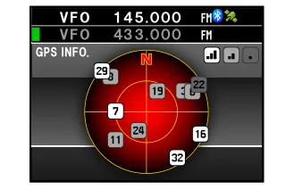</button><figcaption>Figure from page 86</figcaption><dialog id="fig-24"><p>Figure from page 86</p><form method="dialog"><button>Close</button></form></dialog></figure><figure><button aria-label="Enlarge Figure from page 86" class="zoom" data-dialog="fig-25" type="button">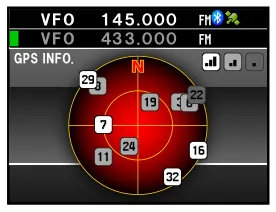</button><figcaption>Figure from page 86</figcaption><dialog id="fig-25"><p>Figure from page 86</p><form method="dialog"><button>Close</button></form></dialog></figure><figure><button aria-label="Enlarge Figure from page 86" class="zoom" data-dialog="fig-26" type="button">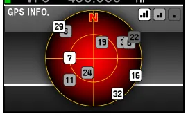</button><figcaption>Figure from page 86</figcaption><dialog id="fig-26"><p>Figure from page 86</p><form method="dialog"><button>Close</button></form></dialog></figure><p>~~<strong>Displaying the position information</strong>~~</p>
<p><strong>Displaying the current position information of your station</strong></p>
<p>The set-up menu will be displayed.
<strong>2</strong> Touch <strong>[DISPLAY]</strong>
The menu list will be displayed.</p>
<p><strong>3</strong> Touch <strong>[2 TARGET LOCATION]</strong> to select “NUMERIC”
Each time this is touched, the setting will switch
between “COMPASS” and “NUMERIC”.</p>
<p>The display will return to the previous screen.</p>
<p>The latitude and longitude display screen will be
displayed.
<strong>6</strong> Touch <strong>[MY]</strong>
The latitude and longitude of your station will be
displayed in numerical figures.</p>
<p>~~Tip~~ When the Altitude display screen and Timer/Clock screen
are both “ON”, the screen will change in the following</p>
<p>Normal frequency display → Compass/Lat&amp;Lon display
screen → Altitude display screen → Timer/Clock screen
→ GPS screen</p>
<p><strong>Displaying the position information of the partner station in the digital mode</strong></p>
<p>In the C4FM digital V/D mode, the position and direction to the partner station can be
displayed in real time during the communication. The position information obtained from
the GPS is transmitted at the same time as the voice signal.</p>
<p><strong>1</strong> Switch the communication mode to AMS (auto mode select function) or digital mode,
or activate the GM function</p>
<p>~~Tip~~ Refer to “Using the GM function” ( P.99) on the basic method of using the GM function.
<strong>2</strong> Switch to the latitude and longitude display screen
<strong>3</strong> Touch <strong>[YR]</strong></p><p><strong>Explanation of the position information screen</strong></p>
<p><strong>Example of a display of your</strong>
<strong>own station position</strong></p>
<p><strong>Example of a display of a</strong>
<strong>partner station position</strong></p>
<p></p>
<p>Ž</p>
<p>➀ Latitude</p>
<p>Displayed as “X DD°MM’SS””
X: N (north latitude) / S (south latitude)
DD: 0 - 90 (degrees)
MM: 0 - 59 (minutes)
SS: 0 - 59 (seconds)
Example: N 35°37’ 23” (latitude 35 degrees</p>
<p>37 minutes &amp; 23 seconds)</p>
<p>~~Tip~~ The “DD°MM’SS”” and “DD°MM.
MM’” will switch each time the number
section is touched.
➁ Longitude</p>
<p>➂ Position information status display</p>
<p>The status display will indicate that the
data received contains position information.
The status display will blink when the GM
function is activated.</p>
<p>~~Tip~~ Refer to the separate Operating
Manual GM Edition for the details
on the GM function (download the
manual from the YAESU website).
➃ Partner station call sign and time of</p>
<p>receipt
➄ Distance to a partner station</p>
<p>Displayed as “X DDD°MM’SS””
X: E (east longitude) / W (west longitude)
DDD: 0 - 180 (degrees)
MM: 0 - 59 (minutes)
SS: 0 - 59 (seconds)
Example: E 139°45’ 02” (east longitude 139</p>
<p>degrees 45 minutes 02 seconds)</p>
<p>~~Tip~~ The “DDD°MM’SS”” and “DDD°MM.
MM’” will switch each time the number
section is touched.</p>
<p>~~<strong>Tip</strong>~~</p>
<p>Use <strong>[APRS]</strong> → <strong>[12 APRS UNITS]</strong> in the set-up menu to change the display units of the various data.</p><p>~~<strong>Recording the position information (GPS log function)</strong>~~</p>
<p>The position information of your own station can be recorded (saved) in a micro-SD card
on a regular basis.</p>
<p>The set-up menu will be displayed.
<strong>2</strong> Touch <strong>[CONFIG]</strong>
The menu list will be displayed.</p>
<p><strong>3</strong> Select <strong>[18 GPS LOG]</strong> and touch the screen
The screen for selecting the recording interval and
switching the GPS log function ON and OFF will be
displayed.</p>
<p><strong>4</strong> Touch <strong>[ON]</strong>
The interval timing will be displayed in green
characters.</p>
<p>~~Tips~~   - The position information will not be recorded when</p>
<p>“OFF” is selected.</p>
<p><strong>5</strong> Touch <strong>[+]</strong> and <strong>[-]</strong> to select the interval timing
Each time the screen is touched, the interval timing will change in the following
sequence. The interval timing can be selected from the following six levels.
“1 sec” “2 sec” “5 sec” “10 sec” “30 sec” “60 sec”</p>
<p>~~Tip~~ Factory default value: 10 sec</p>
<p>The interval timing for recording the position information will be set and the display
will return to the previous screen.
The recording of the position information at the set interval will also be started.</p>
<p>~~<strong>Tips</strong>~~</p>
<ul>
<li>
<p>The position information will continue to be recorded until the power to the radio is switched off or
when “OFF” is selected in Step 4.
Recording will be restarted under the same file name when the power to the radio is turned on
again, or when the recording interval is selected one more time in Step 5.</p>
</li>
<li>
<p>The position data will be saved under the filename “GPSyymmdd.log”.
“yymmdd” shows the record start time in “yy” (year), “mm” (month) and “dd” (day) format.</p>
</li>
</ul><p><strong>Checking the route using a personal computer</strong></p>
<p>The route can also be displayed with commercial map software using the log data of the
saved position information.</p>
<p><strong>1</strong> Switch off the power to the radio
<strong>2</strong> Remove the micro-SD card
<strong>3</strong> Insert the micro-SD card into the personal computer card reader.
<strong>4</strong> Open the “FTM400D” folder contained on the micro-SD card
<strong>5</strong> Open the “GPSLOG” folder
The data is saved under the file name “GPSyymmdd.log”.
“yymmdd” refers to the recording start year (yy), month (mm), and day (dd).
<strong>6</strong> Import the data into the commercial map software
The route will be displayed on the map.</p>
<p>~~<strong>Measuring the altitude</strong>~~</p>
<p>The changes in the altitude depending on the altitude of the current position and
distance travelled can also be displayed in a graph.</p>
<p>The set-up menu will be displayed.
<strong>2</strong> Touch <strong>[DISPLAY]</strong>
The menu list will be displayed.</p>
<p><strong>3</strong> Touch <strong>[1 DISPLAY SELECT]</strong>
A list of the various screen setting selections will be
displayed.</p><p><strong>4</strong> Touch <strong>[ALTITUDE]</strong> to select “ON”
Each time this symbol is touched, the setting will
switch between “OFF” and “ON”.</p>
<p>The display will return to the previous screen.</p>
<ul>
<li><strong>●Changing the altitude scale</strong>
<strong>1</strong> Touch <strong>[SCALE]</strong>
Each time this symbol is touched, the scale value will
change in the following order.
“5 m” → “20 m” → “40 m” → “80 m”</li>
</ul>
<p>~~Tip~~ The maximum altitude scale will be automatically set
based on the present altitude values.</p>
<ul>
<li><strong>●Erasing the previous altitude changes</strong>
<strong>1</strong> Touch <strong>[CLEAR]</strong>
The graph on the left side will disappear and the
current altitude display will shift to the left end.</li>
</ul><p>~~<strong>Other settings</strong>~~</p>
<ul>
<li><strong>●Changing the geodetic reference system</strong>
Select using <strong>[CONFIG]</strong> → <strong>[16 GPS DATUM]</strong> in the set-up menu.
Select the geodetic reference system which is the positioning standard.
“WGS-84”: Using the global geodetic reference system for positioning. This is being</li>
</ul>
<p>used as a standard all around the world.
“TOKYO MEAN”: Using the Japanese geodetic reference system for positioning.</p>
<p>When positioning in Japan (Tokyo), the error can be lowered.</p>
<p>~~<strong>Tips</strong>~~</p>
<ul>
<li>
<p>When the geodetic reference system is changed, the position information will deviate by about
400 m.</p>
</li>
<li>
<p>Set to “WGS-84” normally.</p>
</li>
<li>
<p><strong>●Changing the time zone</strong>
Select using <strong>[CONFIG]</strong> → <strong>[3 TIME ZONE]</strong> in the set-up menu.
The time difference with the UTC (Coordinated Universal Time) can be changed in steps
of 30 minutes.</p>
</li>
</ul><p>Two navigation methods may be used in the smart navigation function.</p>
<p>(1) Real-time navigation function</p>
<p>In the C4FM digital V/D mode, the position and direction of the received partner
station can be displayed in real time during the communication because the position
information obtained from the GPS is transmitted at the same time as the voice signal.</p>
<p>(2) Backtrack function</p>
<p>By registering the departure or other points in advance, the distance and direction
from the current position to the registered location can be displayed in real time.</p>
<p><strong>Displaying the Compass screen</strong></p>
<p>When using the navigation function, use the “Compass Screen” to display the direction
of your station and the partner station on a compass.</p>
<p>The set-up menu will be displayed.
<strong>2</strong> Touch <strong>[DISPLAY]</strong>
The menu list will be displayed.</p>
<p><strong>3</strong> Touch <strong>[2 TARGET LOCATION]</strong> to select
“COMPASS”
Each time this symbol is touched, the setting will
switch between “COMPASS” and “NUMERIC”.</p>
<p>The display will return to the previous screen.</p>
<p>The screen with the compass panel in the center will
be displayed.
The direction from your station to the partner station
will also be displayed using a compass needle.</p>
<p>~~Tip~~ The compass needle will not be displayed when there is
no position information.</p>
<p>The display will return to the normal frequency display screen from the Compass screen.</p>
<p>~~Tip~~ When the Altitude display screen and Timer/Clock screen are both “ON”, the screen will</p>
<p>Normal frequency display →Compass/Lat&amp;Lon display screen →Altitude display screen →</p><ul>
<li><strong>●Changing the direction of the compass panel</strong>
The compass panel can be selected from “Heading UP” where the direction of your
travel is always displayed at the top, or “North UP” where north is always displayed at
the top.</li>
</ul>
<p>~~<strong>Tip</strong>~~</p>
<p>Although the scale on the compass panel has 16 directions, the
compass needle can point in 32 directions.</p>
<p>~~<strong>Using the real-time navigation function</strong>~~</p>
<p><strong>1</strong> Switch to the Compass screen
<strong>2</strong> Touch <strong>[YR]</strong>
During transmission in the V/D mode, the distance
and direction of the received partner station is
displayed.</p>
<p>~~Tip~~ When a partner station is selected using the GM function
and displayed on the compass screen, the “●” on the left
hand side of the partner station call sign will blink.</p>
<p>When “●” is blinking, the compass display will not
be updated even when signals containing position
information from stations other than that displayed are
received.</p>
<p>When <strong>[YR]</strong> is touched, “●” will light up and the compass display will be updated when signals
containing position information from stations other than that displayed are received.</p>
<p>Direction of partner station
Partner station information</p>
<p>in display</p>
<p>Distance to partner station</p><p>When a partner station comes within 50 meters of your location, a beep will sound, the
compass needle display will disappear, and the scope scale will appear in green</p>
<p>~~<strong>Using the backtrack function</strong>~~</p>
<p><strong>Saving the destination</strong></p>
<p>A maximum of three locations can be saved in the memory.</p>
<ul>
<li><strong>●Registering the current location (departure point)</strong>
<strong>1</strong> Switch to the Compass screen</li>
</ul>
<p><strong>3</strong> Touch <strong>[MEMORY]</strong></p>
<p>~~Tip~~ This symbol is not active be touched when there is no
position information.</p>
<p><strong>[</strong> ★ <strong>]</strong>, <strong>[L1]</strong> and <strong>[L2]</strong> will blink.</p><p><strong>4</strong> Touch <strong>[</strong> ★ <strong>]</strong>, <strong>[L1]</strong> or <strong>[L2]</strong>
The position information will be saved in the memory
and the touched location will turn orange in color.</p>
<p>~~<strong>Tip</strong>~~</p>
<p>When position information is already registered in <strong>[</strong> ★ <strong>]</strong>, <strong>[L1]</strong> and</p>
<p><strong>[L2]</strong>, the text will be displayed in green color.</p>
<ul>
<li><strong>●Registering the locations of other stations</strong>
When position information is included in the data of other stations received through
digital communications, it can be saved in the memory.</li>
</ul>
<p><strong>1</strong> Switch to the Compass screen</p><p><strong>4</strong> Touch <strong>[</strong> ★ <strong>]</strong>, <strong>[L1]</strong> or <strong>[L2]</strong>
The position information will be saved in the memory
and the touched location will turn orange in color.</p>
<p>~~<strong>Tip</strong>~~</p>
<p>When position information is already registered in <strong>[</strong> ★ <strong>]</strong>, <strong>[L1]</strong> and</p>
<p><strong>[L2]</strong>, the text will be displayed in green color.</p>
<p><strong>Displaying the position of the destination in real time</strong>
<strong>1</strong> Switch to the Compass screen
<strong>2</strong> Touch <strong>[</strong> ★ <strong>]</strong>, <strong>[L1]</strong> or <strong>[L2]</strong></p>
<p>~~Tip~~ This symbol is not active when position information has
not been saved in the memory.
The direction of the compass needle will change
following the position information that has been
saved in the memory and a green circle will be
displayed at the tip to show the direction of the
destination.
The distance to the destination will also be displayed.</p>
<p><strong>3</strong> Move while keeping the tip of the compass needle to
point towards the top</p>
<p>~~Tip~~ When the destination registered after touching <strong>[MY]</strong> is
selected, the date and time of the registration will also be
displayed.</p><p>There is a verity of methods to display GPS position information using amateur radios.
APRS (Automatic Packet Reporting System) uses a format that is advocated by Bob
Bruninga WB4APR. This system performs data communications for messages and
position information.
When an APRS signal is received from a partner station, the direction, distance, speed
etc. of the partner station in relation to your own station will be shown in the display of
this radio.</p>
<p>When using the APRS function, the call sign and symbol etc. of your own station need to
be set (initial settings).
Refer to the separate Operating Manual APRS Edition for details (download the manual
from our YAESU website).</p><p>The GM (group monitor) function automatically checks to find if there are any stations with
the GM function in operation on the same frequency within communication range.
The FTM-400DR/DE can then display the position and distance and other information for
each group member call sign on the screen.
Besides letting you know who is within your sphere of communication, this function is also
convenient for instantly checking the relative positions of all the members in the group
Furthermore, this function can also be used to send data such as messages and images
among the group members.</p>
<p>~~<strong>Tips</strong>~~</p>
<ul>
<li>
<p>The GM function operates only on Band A.</p>
</li>
<li>
<p>The GM function does not work in the analog mode. When the GM function is activated, Band A will
automatically switch to the DN mode.</p>
</li>
<li>
<p>When sending image data with the GM function in operation, the mode will automatically switch to
the FR mode (high speed data communication mode). At the end of the data transmission, the mode
will automatically revert to the original V/D mode (simultaneous voice/data communication mode).</p>
</li>
</ul><p>There are two ways to use the GM function:
(1) Displays all stations where the GM function is in operation in communications range</p>
<p>(maximum of 24 stations can be displayed)
(2) Registers the ID of partners in the group and displays only the partners</p>
<p><strong>2</strong> Press</p>
<p>operation.</p>
<ul>
<li><strong>●Displaying only partners registered in the group</strong>
When a group that has been created beforehand is selected from the group list and the
screen is touched, the status of the members registered in that group will be displayed.
A total of up to 16 groups can be created. Names such as “Touring”, “Camp” etc. can be
assigned to the groups. Up to 24 stations can be registered as members in each group.
<strong>1</strong> Tune in the frequency of Band A
<strong>2</strong> Press</li>
</ul><p><strong>5</strong> Touch the screen to select the group
Up to 24 group members with the GM function in
operation at the same frequency will be displayed.</p>
<p><strong>6</strong> Touch <strong>[GROUP]</strong>
The display will return to the group list.
<strong>7</strong> Press
The GM function will be turned off and the display will return to the previous screen.</p>
<p>~~Tip~~ The communications mode will automatically switch to the DN mode of the AMS.</p><p>~~<strong>Using the tone squelch</strong>~~</p>
<p>This radio is equipped with the CTCSS (Continuous Tone-coded Squelch System) which
allows audio to be heard only when receiving signals containing the same frequency
tone as the tone that has been set in the tone squelch menu. By matching the tone
frequency with the partner station in advance, a quiet standby is possible.</p>
<p><strong>Setting the tone frequency</strong></p>
<p>The tone can be selected from 50 frequencies between 67.0 Hz and 254.1 Hz.</p>
<p>The set-up menu will be displayed.
<strong>2</strong> Touch <strong>[SIGNALING]</strong>
The menu list will be displayed.</p>
<p><strong>4</strong> Touch <strong>[1 TONE SQL FREQ]</strong>
The characters of the set value will turn orange in
color.</p>
<p>~~Tip~~ Factory default value: 88.5 Hz</p><p>The tone frequency will be set and the display will return to the previous screen.</p>
<p>~~Tip~~ The display can also be returned to the previous screen by touching <strong>[BACK]</strong> twice.</p>
<p><strong>Using the tone squelch</strong></p>
<p><strong>1</strong> Press
The function menu will be displayed.
<strong>2</strong> Touch <strong>[SQL]</strong> to display “T-TRX”</p>
<p>~~Tips~~ - When <strong>[SQL]</strong> is not displayed in the menu, use <strong>[BACK]</strong></p>
<p>or <strong>[FWD]</strong> to change the menu.</p>
<pre><code>- The squelch type changes in the following sequence
</code></pre>
<p>each time it is touched.
“NOISE” “T-TX” “T-TRX” “T-REV” “D-TRX” “PRGM”
“PAGER” “D-TX”* “TT/DR”* “DT/TR”*</p>
<p>*These squelch types will be displayed when</p>
<p><strong>[SIGNALING]</strong> → <strong>[8 SQL EXPANSION]</strong> is set to “ON”
in the set-up menu.</p>
<p>The squelch will open only when receiving a tone
signal of the set frequency.</p>
<p><strong>Transmitting the tone signal</strong></p>
<p><strong>1</strong> Press
The function menu will be displayed.
<strong>2</strong> Touch <strong>[SQL]</strong> to display “T-TX”</p><p><strong>3</strong> Press the microphone [PTT]
Radio waves including the tone signal will be
transmitted while [PTT] is being pressed.</p>
<p>~~<strong>Tip</strong>~~</p>
<p>When alternating between transmit and receive repeatedly, set <strong>[SQL]</strong> in the function menu to
“T-TRX”.</p>
<p>~~<strong>Using digital code squelch</strong>~~</p>
<p>This radio is equipped with a DCS (Digital Coded Squelch) function that allows audio to
be heard only when signals containing the same DCS code are received. By matching
the DCS code with the partner station beforehand, a quiet receive standby is possible.</p>
<p><strong>Setting the DCS code</strong></p>
<p>The DCS code can be selected from 104 digital codes 023 to 754.</p>
<p>The set-up menu will be displayed.
<strong>2</strong> Touch <strong>[SIGNALING]</strong>
The menu list will be displayed.</p>
<p><strong>4</strong> Touch <strong>[2 DCS CODE]</strong>
The characters of the set value will turn orange in
color.</p><p>~~Tip~~ Factory default value: 023</p>
<p>~~Tip~~ The display can also be returned to the previous screen by touching <strong>[BACK]</strong> twice.</p>
<p><strong>Using DCS</strong></p>
<p><strong>1</strong> Press
The function menu will be displayed.
<strong>2</strong> Touch <strong>[SQL]</strong> to display “D-TRX”</p>
<p>~~Tips~~ - When <strong>[SQL]</strong> is not displayed in the menu, use <strong>[BACK]</strong></p>
<p>or <strong>[FWD]</strong> to change the menu.</p>
<pre><code>- The squelch type changes in the following sequence
</code></pre>
<p>each time it is touched.
“NOISE” “T-TX” “T-TRX” “T-REV” “D-TRX” “PRGM”
“PAGER” “D-TX”* “TT/DR”* “DT/TR”*</p>
<p>*These squelch types will be displayed when</p>
<p><strong>[SIGNALING]</strong> → <strong>[8 SQL EXPANSION]</strong> is set to “ON”
in the set-up menu.</p>
<p>The squelch will open only when the set DCS code is
received.</p>
<p>~~<strong>Tip</strong>~~</p>
<p>A bell can be rung (beep) when signals containing the same DCS code are received ( P.110).</p><p>~~<strong>Using the pager function</strong>~~</p>
<p>Use this function to call specified stations only by using a pager code that combines two
CTCSS tones.</p>
<p><strong>Setting the receive station code</strong></p>
<p>The set-up menu will be displayed.
<strong>2</strong> Touch <strong>[SIGNALING]</strong>
The menu list will be displayed.</p>
<p><strong>4</strong> Touch <strong>[5 PAGER CODE]</strong>
The code setting screen will be displayed.</p>
<p><strong>5</strong> Touch <strong>[RX CODE 1]</strong> twice
The characters of the set value will turn orange in
color.</p>
<p>Select the first code from 01 to 50.</p>
<p>~~Tip~~ Factory default value: 05</p>
<p><strong>7</strong> Touch <strong>[RX CODE 1]</strong>
The characters of the set value will turn green in
color.</p><figure><button aria-label="Enlarge Figure from page 106. 2#)'4%1&amp;' 5+)0#.+0)" class="zoom" data-dialog="fig-27" type="button">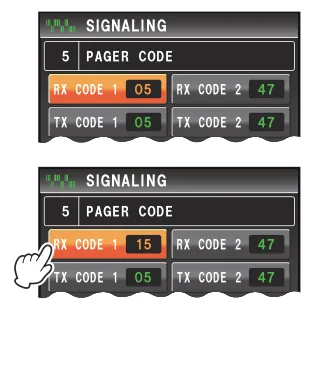</button><figcaption>Figure from page 106. 2#)'4%1&amp;' 5+)0#.+0)</figcaption><dialog id="fig-27"><p>Figure from page 106. 2#)'4%1&amp;' 5+)0#.+0)</p><form method="dialog"><button>Close</button></form></dialog></figure><p><strong>8</strong> Touch <strong>[RX CODE 2]</strong> twice
The characters of the set value will turn orange in
color.</p>
<p>Select the second code from 01 to 50.</p>
<p>~~Tip~~ Factory default value: 47</p>
<p><strong>10</strong> Touch <strong>[RX CODE 2]</strong>
The characters of the set value will turn green in
color.</p>
<p>~~Tip~~ The display can also be returned to the previous screen by touching <strong>[BACK]</strong> twice.</p>
<p>~~<strong>Tips</strong>~~</p>
<ul>
<li>
<p>The two codes “05 47” and “47 05” will be recognized as the same code even if the order is
different.</p>
</li>
<li>
<p>Three or more stations with the same code can be set (group code) to call all group members at the
same time.</p>
</li>
</ul><p><strong>Activating the pager function</strong></p>
<p><strong>1</strong> Press
The function menu will be displayed.
<strong>2</strong> Touch <strong>[SQL]</strong> to display “PAGER”</p>
<p>~~Tips~~ - When <strong>[SQL]</strong> is not displayed in the menu, use <strong>[BACK]</strong></p>
<p>or <strong>[FWD]</strong> to change the menu.</p>
<pre><code>  - The squelch type changes in the following sequence
</code></pre>
<p>each time it is touched.
“NOISE” “T-TX” “T-TRX” “T-REV” “D-TRX” “PRGM”
“PAGER” “D-TX”* “TT/DR”* “DT/TR”*</p>
<p>*These squelch types will be displayed when</p>
<p><strong>[SIGNALING]</strong> → <strong>[8 SQL EXPANSION]</strong> is set to “ON”
in the set-up menu.</p>
<p>The operating band will standby to receive in the
pager mode.</p>
<p><strong>Recalling a specified station</strong></p>
<p>The set-up menu will be displayed.
<strong>2</strong> Touch <strong>[SIGNALING]</strong>
The menu list will be displayed.</p>
<p><strong>4</strong> Touch <strong>[5 PAGER CODE]</strong>
The code setting screen will be displayed.</p><p><strong>5</strong> Touch <strong>[TX CODE 1]</strong> twice
The characters of the set value will turn orange in
color.</p>
<p>Select the first code from 01 to 50.</p>
<p>~~Tip~~ Factory default value: 05</p>
<p><strong>7</strong> Touch <strong>[TX CODE 1]</strong>
The characters of the set value will turn green in</p>
<p><strong>8</strong> Touch <strong>[TX CODE 2]</strong> twice
The characters of the set value will turn orange in</p>
<p>Select the second code from 01 to 50.</p>
<p>~~Tip~~ Factory default value: 47</p>
<p><strong>10</strong> Touch <strong>[TX CODE 2]</strong>
The characters of the set value will turn green in</p>
<p>The partner station code will be set and the display will return to the previous screen.</p>
<p>~~Tip~~ The display can also be returned to the previous screen by touching <strong>[BACK]</strong> twice.
<strong>12</strong> Activate the pager function
<strong>13</strong> Press the microphone <strong>[PTT]</strong></p><p>~~<strong>Notification of an incoming call from a partner station using the bell</strong>~~</p>
<p>When communicating using the tone squelch, DCS or pager, a bell (beep) can be
sounded to provide notification that a signal has been received from a partner station.</p>
<p>The set-up menu will be displayed.
<strong>2</strong> Touch <strong>[SIGNALING]</strong>
The menu list will be displayed.</p>
<p><strong>3</strong> Touch <strong>[7 BELL RINGER]</strong> to select the length of the
bell ring
The bell ring changes as follows each time it is
touched.
“OFF” “1 time” “3 times” “5 times” “8 times”
“CONTINUOUS”</p>
<p>~~Tip~~ Factory default value: OFF</p>
<p>The bell ring will be set and the display will return to the previous screen.</p>
<p>~~Tip~~ The display can also be returned to the previous screen by touching <strong>[BACK]</strong> twice.</p>
<p>~~<strong>Other squelch functions</strong>~~</p>
<ul>
<li>
<p><strong>●Reverse tone</strong>
Touch <strong>[SQL]</strong> in the function menu to display “T-REV”.
This is a communication method whereby a tone signal is sent out when there is no
sound. When there is a sound, the tone signal will disappear.</p>
</li>
<li>
<p><strong>●User Programmed Reverse CTCSS Decoder</strong>
Touch <strong>[SQL]</strong> in the function menu to display “PRGM”.
The user programmable Reverse CTCSS Decoder will mute your FTM-400DR/DE
receiver when it receives a signal containing a CTCSS tone matching your programmed
tone. The tone signal frequency can be set at 100 Hz intervals between 300 Hz and
3000 Hz using <strong>[SIGNALING]</strong> → <strong>[6 PRG REV TONE]</strong> in the set-up menu.</p>
</li>
</ul><ul>
<li>
<p><strong>●DCS transmission</strong>
Touch <strong>[SQL]</strong> in the function menu to display “D-TX”.
The radio sends out the DCS code during transmit.
This can be used only when <strong>[SIGNALING]</strong> → <strong>[8 SQL EXPANSION]</strong> is set to “ON” in the
set-up menu.</p>
</li>
<li>
<p><strong>●Tone transmission / DCS reception</strong>
Touch <strong>[SQL]</strong> in the function menu to display “TT/DR”.
The radio sends out a tone signal during transmit and goes into receive standby for the
previously set DCS codes.
This can be used only when <strong>[SIGNALING]</strong> → <strong>[8 SQL EXPANSION]</strong> is set to “ON” in the
set-up menu.</p>
</li>
<li>
<p><strong>●DCS transmission / tone reception</strong>
Touch <strong>[SQL]</strong> in the function menu to display “DT/TR”.
The radio sends out the DCS code during transmit and goes into receive standby for the
previously set squelch tone.
This can be used only when <strong>[SIGNALING]</strong> → <strong>[8 SQL EXPANSION]</strong> is set to “ON” in the
set-up menu.</p>
</li>
</ul><p>The DTMF (Dual Tone Multi Frequencies) is a “peepoppa” sound heard from a
telephone receiver when a call is made on a push phone line. This radio can send out
the DTMF code by using the microphone keys or recalling a memory.
A DTMF code with a maximum of 16 digits can be registered in up to 9 channels in the
memory. It is convenient to register beforehand telephone numbers that are used for
connecting to a public line from a phone patch.</p>
<p><strong>Registering the DTMF code</strong></p>
<p>The set-up menu will be displayed.
<strong>2</strong> Touch <strong>[SIGNALING]</strong>
The menu list will be displayed.</p>
<p><strong>4</strong> Touch <strong>[4 DTMF MEMORY]</strong>
The DTMF memory screen will be displayed.</p>
<p>be registered
<strong>6</strong> Touch the selected channel
The character input screen will be displayed.</p><p><strong>7</strong> Touch the character keys to input the DTMF code</p>
<p>~~Tip~~ The DTMF code can also be input using the character
keys on the microphone.
<strong>8</strong> Touch <strong>[ENT]</strong>
The DTMF code will be set.</p>
<p>~~Tip~~ Repeat Steps 5 to 8 when registering additional numbers
in the other channels..</p>
<p>The DTMF code will be set and the display will return to the previous screen.</p>
<p>~~Tip~~ The display can also be returned to the previous screen by touching <strong>[BACK]</strong> twice.</p>
<p><strong>Transmitting the registered DTMF code</strong></p>
<p>The set-up menu will be displayed.
<strong>2</strong> Touch <strong>[SIGNALING]</strong>
The menu list will be displayed.</p>
<p><strong>4</strong> Touch <strong>[3 AUTO DIALER]</strong> to select “ON”
The auto dialer will switch between “ON” and “OFF”
each time it is touched.</p>
<p>The display will return to the previous screen.</p>
<p>~~Tip~~ The display can also be returned to the previous screen
by touching <strong>[BACK]</strong> twice.
<strong>6</strong> Press
The function menu will be displayed.</p>
<p><strong>7</strong> Touch <strong>[DTMF]</strong>
The character will turn orange in color.</p><p><strong>9</strong> Press the microphone <strong>[PTT]</strong>
The DTMF code will be sent out automatically.</p>
<p><strong>10</strong> Release the microphone <strong>[PTT]</strong>
The transmission will continue until the DTMF signal is sent out.</p>
<p><strong>Sending out the DTMF code manually</strong>
<strong>1</strong> Press and hold down the microphone <strong>[PTT]</strong> and press <strong>[0]</strong> to <strong>[9]</strong>, <strong>[</strong> ✽ <strong>]</strong>, <strong>[#]</strong>, <strong>[A]</strong> to <strong>[D]</strong>
<strong>2</strong> Release the microphone <strong>[PTT]</strong>
The transmission will continue until the DTMF signal is sent out.</p><p>~~<strong>Using the stopwatch function</strong>~~</p>
<p>This radio is equipped with a lap timer and countdown timer. These can be used by
switching to the timer / clock screen.</p>
<p><strong>Displaying the timer / clock screen</strong></p>
<p>The set-up menu will be displayed.
<strong>2</strong> Touch <strong>[DISPLAY]</strong>
The menu list will be displayed.</p>
<p><strong>4</strong> Touch <strong>[1 DISPLAY SELECT]</strong></p>
<p><strong>5</strong> Touch <strong>[TIMER/CLOCK]</strong> to select “ON”
Each time this is touched, the setting will switch
between “OFF” and “ON”.</p>
<p>The display will return to the previous screen.</p>
<p>~~Tip~~ The display can also be returned to the previous screen
by touching <strong>[BACK]</strong> twice.</p>
<p>The timer/clock screen will be displayed.</p>
<p>~~Tip~~ The screen will change in the following sequence each</p>
<p>and GPS screen are “ON”.</p>
<p>Normal frequency display → Compass/Lat&amp;Lon display
screen → Altitude display screen → Timer/Clock screen
→ GPS screen</p><p><strong>Using the lap timer</strong></p>
<p><strong>1</strong> Display the timer / clock screen
<strong>2</strong> Touch <strong>[MODE]</strong>
The lap timer will be displayed.</p>
<p><strong>3</strong> Touch <strong>[START]</strong>
The timer will start.</p>
<p><strong>4</strong> Touch <strong>[LAP]</strong>
The lap time will be saved in the memory each time it
is touched.</p>
<p>~~Tip~~ Up to 99 lap times can be saved in the memory.</p>
<p><strong>5</strong> Touch <strong>[STOP]</strong>
The timer will stop.</p>
<p>The lap times and split times will be erased when</p>
<p><strong>[RESET]</strong> is touched.</p><p>lap times, touch <strong>[</strong>  <strong>]</strong> or <strong>[</strong>  <strong>]</strong> to switch between the lap
times.</p>
<p>The display will return to the previous screen.</p>
<p>altitude display screen and GPS screen are “ON”.</p>
<p>Normal frequency display → Compass/Lat&amp;Lon display screen → Altitude display screen →</p>
<p>Timer/Clock screen → GPS screen</p>
<p><strong>Using the countdown timer</strong></p>
<p><strong>1</strong> Display the timer / clock screen
<strong>2</strong> Touch <strong>[MODE]</strong> twice
The countdown timer will be displayed.</p>
<p><strong>3</strong> Touch <strong>[SETUP]</strong>
The “Hour” of the start time will blink.</p>
<p>~~Tips~~   - The hour can be set between 00 and 99.</p>
<pre><code>  - The time can also be set by touching **[+]** or **[-]** .
</code></pre>
<p><strong>5</strong> Touch <strong>[SETUP]</strong>
The “Hour” will be set, and “Minute” will blink.</p>
<p>~~Tip~~ The time can also be set by touching <strong>[+]</strong> or <strong>[-]</strong> .</p><p>displayed in the counter.</p>
<p><strong>8</strong> Touch <strong>[START]</strong>
The countdown timer will start.</p>
<p>When the set time has passed, a beep will sound
and the time will be displayed as “00:00’00” in green
characters.
Touch <strong>[STOP]</strong> to pause the timer in between.
Touch <strong>[START]</strong> to restart the countdown and touch</p>
<p><strong>[RESET]</strong> to measure from the start again.</p>
<p>The display will return to the previous screen.</p>
<p>altitude display screen and GPS screen are “ON”.</p>
<p>Normal frequency display → Compass/Lat&amp;Lon display screen → Altitude display screen →
Timer/Clock screen → GPS screen</p><p>~~<strong>Using the APO function</strong>~~</p>
<p>When the APO (Automatic Power-off) function is set to ON, the power supply to the
radio will be automatically switched off when there has been no operation for a preset
period of time. A notification beep will sound one minute before the power is turned off.
This helps to prevent the battery from being used up when you forget to switch the radio
off when connected to a car battery.</p>
<p>The set-up menu will be displayed.
<strong>2</strong> Touch <strong>[CONFIG]</strong>
The menu list will be displayed.</p>
<p><strong>4</strong> Touch <strong>[13 APO]</strong>
The screen for selecting “ON”, “OFF” and the time
until the power is turned off after operations will be
displayed.</p>
<p><strong>5</strong> Touch <strong>[ON]</strong>
<strong>6</strong> Touch <strong>[+]</strong> or <strong>[-]</strong> to select the time until the power
supply is switched off
The time will change by one step each time it is
touched. The time step can be selected from the
following 14 steps.
“0.5hour” “1.0hour” “1.5hour” “2.0hour” “3.0hour”
“4.0hour” “5.0hour” “6.0hour” “7.0hour” “8.0hour”
“9.0hour” “10.0hour” “11.0hour” “12.0hour”</p>
<p>The APO function will be switched on and the display will return to the previous
screen.</p>
<p>~~Tip~~ The display can also be returned to the previous screen by touching <strong>[BACK]</strong> twice.</p><figure><button aria-label="Enlarge Figure from page 119. $#%- $#%- %10(+)" class="zoom" data-dialog="fig-28" type="button">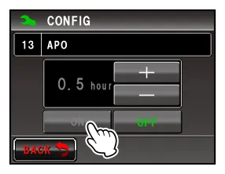</button><figcaption>Figure from page 119. $#%- $#%- %10(+)</figcaption><dialog id="fig-28"><p>Figure from page 119. $#%- $#%- %10(+)</p><form method="dialog"><button>Close</button></form></dialog></figure><p>~~<strong>Using the TOT function</strong>~~</p>
<p>When the TOT (Timeout Timer) function is switched on, the radio will automatically
return to the reception mode after a prescribed time has passed in the transmission
mode. A notification beep will sound about 10 seconds before the radio returns to the
reception mode. This can help to prevent unintended radio waves from being sent out
by mistake and the battery from being used up.</p>
<p>The set-up menu will be displayed.
<strong>2</strong> Touch <strong>[CONFIG]</strong>
The menu list will be displayed.</p>
<p><strong>4</strong> Touch <strong>[14 TOT]</strong>
The characters of the set value will turn orange in
color.</p>
<p>The time will change in the following sequence.
“OFF” “5 min” “10 min” “15 min” “20 min” “30 min”</p>
<p><strong>6</strong> Touch <strong>[14 TOT]</strong>
The characters of the set value will turn green in
color.</p>
<p>The TOT function will be switched on and the display will return to the previous
screen.</p>
<p>~~Tip~~ The display can also be returned to the previous screen by touching <strong>[BACK]</strong> twice.</p><p>Frequently used functions in the function menu can be assigned to the touch keys at the
bottom of the screen.</p>
<p><strong>Example: Changing [MUTE] to [SCAN]</strong></p>
<p><strong>1</strong> Touch <strong>[MUTE]</strong> for 4 or more seconds
A list of the function keys will be displayed.</p>
<p><strong>2</strong> Touch <strong>[SCAN]</strong>
The touch key <strong>[MUTE]</strong> will change to <strong>[SCAN]</strong> .</p>
<p><strong>3</strong> Touch the touch key <strong>[SCAN]</strong>
The display will return to the previous screen.</p>
<p>~~<strong>Tip</strong>~~</p>
<p>The assignment of functions to the other touch keys can also be changed using Step 2. After the
touch key display is changed, touch another touch key first before touching the function key. To return
to the previous screen, touch the key whose assignment was changed last (displayed in orange
color).</p><p>When operating in the digital mode, messages (text) and pictures can be sent and
received.
Messages and pictures sent or received will be saved in the common list in the memory.</p>
<p>~~<strong>Tip</strong>~~</p>
<p>The following are the three types of digital modes available. Refer to “Switching the communication
mode” (Page 45) for details.</p>
<ul>
<li>
<p>V/D mode (simultaneous voice / data communication mode)</p>
</li>
<li>
<p>Voice FR mode (voice full-rate mode)</p>
</li>
<li>
<p>Data FR mode (high speed data communication mode)</p>
</li>
</ul>
<p><strong>Viewing messages and pictures</strong></p>
<p>The data sent or received can be viewed in the list. The contents of the data sent or
received can be verified by selecting it from the list.</p>
<p><strong>1</strong> Press
The function menu will be displayed.
<strong>2</strong> Touch <strong>[LOG]</strong></p>
<p>~~Tip~~ When <strong>[LOG]</strong> is not displayed in the function menu, touch</p>
<p><strong>[BACK]</strong> or <strong>[FWD]</strong> to switch the menu.
The list of data will be displayed.</p>
<p>you want to check</p>
<p>~~Tips~~   - A list of the messages is displayed when the touch key</p>
<pre><code>  - Newly downloaded data will appear at the top of the list.


  - Touch **[TOP]** to display the top of the list.
</code></pre><p><strong>4</strong> Touch the selected data
The contents of the data will be displayed.</p>
<p>~~Tips~~   - A picture with a resolution of 320 ✽ 240 pixels will be</p>
<p>displayed in full screen when touched. After 10 seconds
or when the picture is touched again, it will return to the
original display.</p>
<pre><code>  - Touch **[EDIT]** at the top right of the picture to edit the
</code></pre>
<p>tag (image name).</p>
<p>~~<strong>Tip</strong>~~</p>
<p>Pictures taken using the optional camera attached to the speaker microphone MH-85A11U and saved
in the micro-SD card will also be displayed in the list.</p>
<p><strong>Sorting the messages and pictures</strong></p>
<p>Data that is no longer needed can be deleted from the memory and micro-SD card.</p>
<ul>
<li><strong>●Deleting data using the content display screen</strong></li>
</ul>
<p><strong>1</strong> Display the data content that you would like to delete
<strong>2</strong> Touch <strong>[DEL]</strong>
A screen to confirm whether or not to delete the data
will be displayed.</p>
<p><strong>3</strong> Touch <strong>[OK?]</strong>
The deletion will start.
When the deletion is completed, the screen will
return to the list of data.
The list of data will move up one at a time.</p>
<p>~~Tip~~ Touch <strong>[CANCEL]</strong> to stop the deletion.</p><figure><button aria-label="Enlarge Figure from page 123. Ჹ ,* ;2% Ჺ᲻ Ჹ (4/ 6JCPM[QW" class="zoom" data-dialog="fig-29" type="button">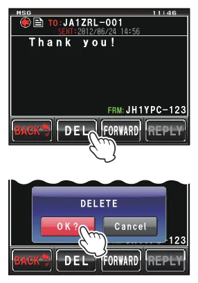</button><figcaption>Figure from page 123. Ჹ ,* ;2% Ჺ᲻ Ჹ (4/ 6JCPM[QW</figcaption><dialog id="fig-29"><p>Figure from page 123. Ჹ ,* ;2% Ჺ᲻ Ჹ (4/ 6JCPM[QW</p><form method="dialog"><button>Close</button></form></dialog></figure><ul>
<li><strong>●Erasing from the list</strong></li>
</ul>
<p>A screen to confirm whether or not to delete the data</p>
<p><strong>3</strong> Touch <strong>[OK?]</strong>
The deletion will start.
When the deletion is completed, the screen will
return to the list of data.
The list of data will move up one at a time.</p>
<p>~~Tip~~ Touch <strong>[CANCEL]</strong> to stop the deletion.</p>
<p>~~<strong>Downloading messages and images</strong>~~</p>
<p>When messages or pictures are sent in the digital mode at the frequency currently in
operation, the contents will be displayed for a certain period of time. Messages will also
be downloaded to the memory of this radio or the micro-SD card set up in the radio.</p>
<p><strong>When receiving messages</strong></p>
<p><strong>When receiving pictures</strong></p>
<p>~~<strong>Tips</strong>~~</p>
<ul>
<li>
<p>When receiving picture data, the call sign of the sender and an estimation of the time remaining for
the data reception to be completed will be displayed after “&gt;”.</p>
</li>
<li>
<p>The message “Not Completed” will be displayed if downloading of the message is unsuccessful
because the format is not supported or for other reasons.</p>
</li>
<li>
<p>The message “Insufficient SD’s Memory” will be displayed when the picture cannot be downloaded
due to insufficient memory space in the micro-SD card.</p>
</li>
</ul><p>~~<strong>Sending messages and pictures</strong>~~</p>
<p>Messages and pictures can be sent from this radio when operating in the digital mode.
Data sent will be received by all stations operating at the same frequency in the digital
mode.
The following are the four types of data transmission methods.
(1) Create and send a new message
(2) Send a saved picture
(3) Replies to a downloaded message or picture
(4) Forwards the downloaded message or picture</p>
<p><strong>Creating and sending a message</strong></p>
<p><strong>1</strong> Press
The function menu will be displayed.
<strong>2</strong> Touch <strong>[LOG]</strong></p>
<p>~~Tip~~ When <strong>[LOG]</strong> is not displayed in the function menu, touch</p>
<p><strong>[BACK]</strong> or <strong>[FWD]</strong> to switch the menu.
The list of data will be displayed.</p>
<p><strong>4</strong> Touch <strong>[NEW]</strong>
A screen to confirm the message contents will be
displayed.</p>
<p>The character input screen will be displayed.</p>
<p><strong>6</strong> Touch the character keys to input the message
The touched characters will be displayed at the top of
the screen.</p>
<p>~~Tips~~   - Up to 80 characters can be entered.</p>
<pre><code>  - Alphabet, numeric and symbol characters can be
</code></pre>
<p>entered.</p><p><strong>7</strong> Touch <strong>[ENT]</strong>
The entered characters will be set and the display
will return to the screen for confirming the message
contents.</p>
<p><strong>8</strong> Touch <strong>[SEND]</strong>
Message transmission will start and the icon on the
left side of the address will blink. The sending and
receiving indicator at the top left of the screen will
also change to red.
“Completed” will be displayed when the message
is completed. The display will then return to the
message list screen. The tag of the sent message
will be added to the top of the list.</p><ul>
<li><strong>●Using standard message</strong>
The following 19 standard text messages have been entered in the radio previously, to
save on time and effort for inputting the text.</li>
</ul>
<p><strong>1</strong> Follow Steps 1 to 4 on “Creating and sending messages” ( P.125) to display the
screen for creating new message contents.</p>
<p>The standard message field will be displayed under
the message.</p>
<p>~~Tip~~ A maximum of 80 characters can be registered in “01:” to
“10:” ( P.128).</p>
<p><strong>4</strong> Press
The standard message will be displayed as the
message text.</p>
<p>~~Tip~~ The message text can also be displayed by touching the
standard message displayed.</p><p><strong>5</strong> Touch <strong>[</strong> <strong>]</strong>
The standard message field under the message will
disappear.</p>
<p><strong>6</strong> Follow Steps 5 to 7 in “Creating and sending messages” ( P.125) to enter the text
when adding text.</p>
<ul>
<li><strong>●Registering standard messages</strong>
Up to 10 texts containing a maximum of 80 characters each can be registered as
standard messages.
Registered text can be selected and used just like the 19 standard text messages that
have been prepared beforehand.</li>
</ul>
<p><strong>1</strong> Follow Steps 1 to 7 on “Creating and sending messages” ( P.125) to display the
screen for confirming the message contents.</p>
<p>~~Tip~~ Alphabet, numeric and symbol characters can be entered.
<strong>2</strong> Touch <strong>[SAVE TEXT]</strong>
The standard message field will be displayed under
the message.</p>
<p>register</p>
<p>~~Tip~~ Either one of “01” to “10” is selectable.</p><p><strong>4</strong> Press
The text will be saved as a standard text, and the
standard message field will disappear.</p>
<p>~~Tips~~   - Text can also be registered by touching the registration</p>
<p>number displayed.</p>
<pre><code>  - When registering a text message under a number that
</code></pre>
<p>already contains a standard message, the previous
standard message will be overwritten.</p>
<pre><code>  - Touch **[SAVE TEXT]** when canceling the registration.
</code></pre>
<p><strong>Sending saved pictures</strong></p>
<p>Pictures taken using the optional camera attached to the speaker microphone MH85A11U can be sent.</p>
<p><strong>1</strong> Press
The function menu will be displayed.
<strong>2</strong> Touch <strong>[LOG]</strong></p>
<p>~~Tip~~ When <strong>[LOG]</strong> is not displayed in the function menu, touch</p>
<p><strong>[BACK]</strong> or <strong>[FWD]</strong> to switch the menu.
The list of data will be displayed.</p>
<p>attached to the speaker microphone.</p>
<p>The details and image will be displayed.</p><p><strong>5</strong> Touch <strong>[FORWARD]</strong>
Transmission of the picture will start and the icon on
the left side of the address will blink. The sending
and receiving indicator at the top left of the screen
will also change to red.
“Completed” will be displayed when sending of the
picture is completed and the display will then return
to the picture list screen. The tag of the transmitted
picture will be added to the top of the list.</p>
<p>~~<strong>Tips</strong>~~</p>
<ul>
<li>
<p>Transmission of a picture will be stopped when <strong>[PTT]</strong> of the microphone is pressed during
transmission (it may take a certain period of time until the transmission stops).</p>
</li>
<li>
<p>When sending a picture, the communication mode will automatically switch to the VW mode (high
speed data communication mode). At the end of the transmission, the mode will automatically revert
to the DN mode of the AMS.</p>
</li>
</ul>
<p><strong>Replying to a message or picture</strong></p>
<p>Return messages can be sent in reply to messages and pictures received.</p>
<p><strong>1</strong> Press
The function menu will be displayed.
<strong>2</strong> Touch <strong>[LOG]</strong></p>
<p>~~Tip~~ When <strong>[LOG]</strong> is not displayed in the function menu, touch</p>
<p><strong>[BACK]</strong> or <strong>[FWD]</strong> to switch the menu.
The list of data will be displayed.</p><p><strong>4</strong> Touch the selected message or picture
The contents of the data will be displayed.</p>
<p><strong>5</strong> Touch <strong>[REPLY]</strong>
The reply message screen will be displayed.
The call sign of the calling station will be displayed in
the address.
The first 16 characters of the message received will
be automatically inserted after “Re:”.</p>
<p>~~Tip~~ When replying to a picture, the first 16 characters of the
tag (display name) will be inserted after “Re:”.</p>
<p>The character input screen will be displayed.</p>
<p><strong>6</strong> Touch a character key to input the message
The touched character will be displayed at the top of
the screen.</p>
<p>~~Tip~~ The first 16 characters can also be edited.</p>
<p><strong>7</strong> Touch <strong>[ENT]</strong>
The entered characters will be set and the display
will return to the reply message screen.</p><p><strong>8</strong> Touch <strong>[SEND]</strong>
Message transmission will start and the icon on the
left side of the address will blink. The sending and
receiving indicator at the top left of the screen will
also change to red.
“Completed” will be displayed when sending of the
message is completed and the display will then
return to the message list screen. The tag of the sent
message will be added to the top of the list.</p>
<p><strong>Forwarding messages and pictures</strong></p>
<p>Downloaded messages and pictures can be forwarded.</p>
<p><strong>1</strong> Press
The function menu will be displayed.
<strong>2</strong> Touch <strong>[LOG]</strong></p>
<p>~~Tip~~ When <strong>[LOG]</strong> is not displayed in the function menu, touch</p>
<p><strong>[BACK]</strong> or <strong>[FWD]</strong> to switch the menu.
The list of data will be displayed.</p>
<p>forward</p>
<p>The contents of the data will be displayed.</p><p><strong>5</strong> Touch <strong>[FORWARD]</strong>
Transmission of the data will start and the icon on the
left side of the address will blink. The sending and
receiving indicator at the top left of the screen will
also change to red.
“Completed” will be displayed when sending of the
data is completed and the display will then return to
the data list screen. The tag of the transmitted data
will be added to the top of the list.</p>
<p>~~Tips~~   - When forwarding a message, touch <strong>[OK?]</strong> when the</p>
<p>screen for confirming the address appears before the
message is sent.</p>
<pre><code>  - Pictures can be forwarded by pressing the **[D-TX]** of
</code></pre>
<p>the speaker microphone with camera.</p>
<p>~~<strong>Tips</strong>~~</p>
<ul>
<li>
<p>Transmission of a picture will be stopped when <strong>[PTT]</strong> of the microphone is pressed during
transmission (it may take a certain period of time until the transmission stops).</p>
</li>
<li>
<p>When sending a picture, the communication mode will automatically switch to the VW mode (high
speed data communication mode). At the end of the transmission, the mode will automatically revert
to the DN mode of the AMS.</p>
</li>
</ul><p>The optional Bluetooth unit “BU-2” and headset BH-2A are available for wireless
headset operation.
Hands-free communication is also possible when the VOX (Voice Operated Xmit)
function is used.</p>
<p>~~<strong>Tip</strong>~~</p>
<p>Other Bluetooth headsets can also be used but not all the functions are guaranteed to work normally.</p>
<p>~~<strong>Mounting the Bluetooth unit “BU-2”</strong>~~</p>
<ul>
<li>
<p><strong>●Tools and parts needed</strong></p>
</li>
<li>
<p>Bluetooth unit “BU-2” (optional)</p>
</li>
<li>
<p>Phillips screw driver #1</p>
</li>
<li>
<p><strong>●Mounting procedure</strong></p>
</li>
</ul>
<p>~~<strong>Cautions</strong>~~</p>
<p>zz Avoid touching the IC components with your hands as the semiconductors may be damaged by</p>
<p>static electricity.
zz Note that labor charges to install optional items may be separately charged.</p>
<p><strong>1</strong> Switch the radio OFF
<strong>2</strong> Switch off the external power supply
<strong>3</strong> Unplug the control cable, microphone and DC power supply cable from the main
body
<strong>4</strong> Remove the eight screws from the main body, four
on top and two each at the sides</p><figure><button aria-label="Enlarge Figure from page 134" class="zoom" data-dialog="fig-30" type="button">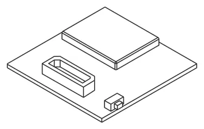</button><figcaption>Figure from page 134</figcaption><dialog id="fig-30"><p>Figure from page 134</p><form method="dialog"><button>Close</button></form></dialog></figure><p><strong>5</strong> Carefully lift up the front side of the main body top
cover</p>
<p>~~Caution~~ Do not lift up the top cover quickly by force. This
may damage the damage cables between the
speaker and main board.</p>
<p><strong>6</strong> Unplug the speaker cables extending from the top
cover to the connector on the board inside the main
body first before removing the cover</p>
<p>~~Caution~~ Hold the connector when unplugging the cable
avoid pulling the cable itself.</p>
<p>removing the front cover</p>
<p><strong>10</strong> Attach the main body front cover and secure using the two screws
<strong>11</strong> Plug in the speaker cables extending from the main body top cover to the original
socket on the board
<strong>12</strong> Attach the main body top cover and replace all eight screws</p><figure><button aria-label="Enlarge Figure from page 135" class="zoom" data-dialog="fig-31" type="button"></button><figcaption>Figure from page 135</figcaption><dialog id="fig-31"><p>Figure from page 135</p><form method="dialog"><button>Close</button></form></dialog></figure><figure><button aria-label="Enlarge Figure from page 135. Hook" class="zoom" data-dialog="fig-32" type="button">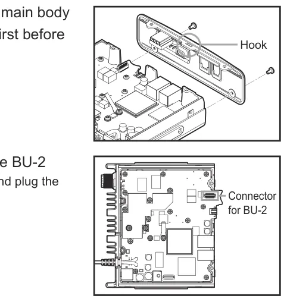</button><figcaption>Figure from page 135. Hook</figcaption><dialog id="fig-32"><p>Figure from page 135. Hook</p><form method="dialog"><button>Close</button></form></dialog></figure><p>~~<strong>Setting the Bluetooth headset operation</strong>~~</p>
<p>Set the Bluetooth parameters for your preferences in accordance with the following
wireless headset operating methods:</p>
<ul>
<li>
<p>Listening to the audio using the headset only, or allowing the audio to be heard from
both the headset and the radio speaker</p>
</li>
<li>
<p>Conserving the headset battery power</p>
</li>
<li>
<p>Using the [PTT] to switch between transmitting and receiving, or switching
automatically using voice</p>
</li>
<li>
<p>Switching transmit and receive automatically even with low level sounds
<strong>1</strong> Turn the FTM-400DR/DE on</p>
</li>
</ul>
<p>The set-up menu will be displayed.</p>
<p><strong>4</strong> Select and touch <strong>[2 Bluetooth]</strong></p>
<p>~~Tip~~ This symbol is not available when BU-2 is not mounted
to the radio.
The screen for the settings will be displayed.</p>
<p><strong>5</strong> Touch <strong>[AUDIO]</strong>
The setting switches between “AUTO” and “FIX”
each time it is touched.
“AUTO”: When a Bluetooth headset is connected,</p>
<p>the sound from the radio speaker will be
muted and sound will only be heard from
the headset.
“FIX”: Sound can be heard from both the Bluetooth</p>
<p>headset and the radio speaker.</p>
<p><strong>6</strong> Touch <strong>[BATTERY]</strong>
The setting will switch between “NORMAL” and
“SAVE” each time it is touched.
“NORMAL”: The Bluetooth headset battery save</p>
<p>function will be switched off.</p><figure><button aria-label="Enlarge Figure from page 136. $#%- $#%- $ ᲴWGVQQVJ" class="zoom" data-dialog="fig-33" type="button">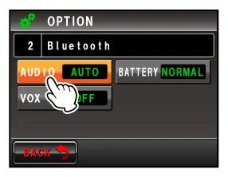</button><figcaption>Figure from page 136. $#%- $#%- $ ᲴWGVQQVJ</figcaption><dialog id="fig-33"><p>Figure from page 136. $#%- $#%- $ ᲴWGVQQVJ</p><form method="dialog"><button>Close</button></form></dialog></figure><figure><button aria-label="Enlarge Figure from page 136. $#%- $#%- $ ᲴWGVQQVJ" class="zoom" data-dialog="fig-34" type="button">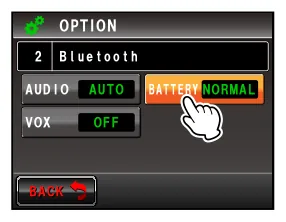</button><figcaption>Figure from page 136. $#%- $#%- $ ᲴWGVQQVJ</figcaption><dialog id="fig-34"><p>Figure from page 136. $#%- $#%- $ ᲴWGVQQVJ</p><form method="dialog"><button>Close</button></form></dialog></figure><p><strong>7</strong> Touch <strong>[VOX]</strong>
The setting will switch between “OFF” and “ON” each
time it is touched.
“OFF”: Switch the transmission and reception using</p>
<p>[PTT].
“ON”: Switch the transmission and reception using</p>
<p>voice.</p>
<p>~~Tip~~ When VOX is set to ON, <strong>[GAIN]</strong> is displayed.</p>
<p><strong>8</strong> Touch <strong>[GAIN]</strong>
The setting switches between “HIGH” and “LOW”
each time it is touched.
“HIGH”: The Bluetooth headset VOX sensitivity will</p>
<p>become higher and more responsive to low
level.
“LOW”: The Bluetooth headset’s VOX sensitivity will</p>
<p>become lower and less responsive to low
sounds.</p>
<p>The Bluetooth headset operation will be set and the display will return to the
previous screen.</p>
<p>~~Tip~~ Factory default value: AUDIO: AUTO</p>
<p>BATTERY: NORMAL</p>
<p>VOX: OFF</p>
<p>GAIN: HIGH</p>
<p>~~<strong>Identifying the Bluetooth headset</strong>~~</p>
<p>An individual identification code known as a “PIN code” is assigned to Bluetooth devices
such as a headset. The PIN code allows mutual identification with paired devices to be
carried out and recorded when initially when using a Bluetooth terminal device. This
is known as “pairing”. Through pairing, interference and improper interception can be
prevented.
Pairing is also carried out initially when communicating wirelessly with this radio using a
Bluetooth headset.</p>
<p>~~<strong>Tip</strong>~~</p>
<p>The PIN code for the Yaesu Bluetooth headset “BH-2A” is 6111. Check the PIN code in the operating
manual of the product when using Bluetooth headsets from other companies.</p><p><strong>Example: When pairing the optional Bluetooth headset “BH-2A”</strong></p>
<p>~~<strong>Tip</strong>~~</p>
<p>Refer to the operating manual of the product used for the pairing method when using a headset other
than BH-2A.</p>
<p><strong>1</strong> Turn the BH-2A headset OFF</p>
<p>The set-up menu will be displayed.
<strong>3</strong> Touch <strong>[CONFIG]</strong>
The menu list screen will be displayed.</p>
<p><strong>4</strong> Select and touch <strong>[15 Bluetooth PAIRING]</strong>
The input screen for the PIN code will be displayed.</p>
<p>~~Tips~~   - “6111” will be displayed in the PIN code field as the</p>
<p>factory default value.</p>
<pre><code>  - When using a headset other than BH-2A, enter the
</code></pre>
<p>4-digit PIN code of the headset here. The character at
the cursor position will be overwritten when the number
key on the screen is touched.</p>
<p><strong>5</strong> Press the power supply switch of the BH-2A for 5 seconds
The LED indicator of the BH-2A will blink alternately between red and blue.</p>
<p>text “Pairing..” will blink in the display field of the set</p>
<p>menu list.
The LED indicator of the BH-2A will also blink in blue.</p>
<p>~~Caution~~ Start pairing all over again when “ERROR” is
displayed.</p><p>The “ ” icon will be displayed on the top right of the</p>
<p>~~<strong>Tips</strong>~~</p>
<ul>
<li>
<p>Up to 8 pairing PIN codes can be saved in BU-2. When using two or more headsets such as a
spare one or a personal one, set up the respective PIN codes and carry out pairing in advance.
However, two headsets cannot be used at the same time.</p>
</li>
<li>
<p>When eight pairings have been carried out after eight PIN codes have already been made, the
oldest pairing information will be overwritten.</p>
</li>
</ul>
<p>~~<strong>Using the Bluetooth headset</strong>~~</p>
<p>Once paired, a headset can be used simply by turning on the power.</p>
<p><strong>(1) When the VOX function is set to OFF</strong>
<strong>1</strong> Turn the Bluetooth headset ON
The receive audio will become audible from the headset.
<strong>2</strong> Press the headset [PTT]
The radio will go into the transmit mode.
<strong>3</strong> Release the headset [PTT]
The radio will go into the receive mode.</p>
<p><strong>(2) When the VOX function set to on</strong>
<strong>1</strong> Turn the Bluetooth headset ON
The receive audio will become audible from the headset.
<strong>2</strong> Speak into the microphone of the headset
The radio will go into the transmit mode.</p>
<p>~~Tip~~ When you stop talking, the radio will automatically return to the receive mode.</p><p>Snapshots can be easily taken with the camera that is built into the optional speaker
microphone “MH-85A11U”.
The picture taken will appear on the display for several seconds and can also be
transmitted to other transceivers simply by pressing the transmit picture button on the
microphone.</p>
<p>~~<strong>Tips</strong>~~</p>
<ul>
<li>
<p>Refer to our YAESU website and catalog for the transceiver models that can transmit pictures.</p>
</li>
<li>
<p>The picture transmit button on the microphone can only transmit picture data after the image has
been taken.</p>
</li>
<li>
<p>The snapshot function will not operate unless the micro-SD card is inserted into the card slot on the
main body.</p>
</li>
</ul>
<p>The picture taken will be saved in the micro-SD card inserted into the main body card slot.
The saved picture data can be transmitted to transceivers operating in the digital mode.</p>
<p><strong>4</strong> Switch on the power supply to the main device</p>
<p>The set-up menu will be displayed.
<strong>6</strong> Touch <strong>[DATA]</strong></p>
<p>����</p>
<p>������ </p>
<p>����������</p>
<p>�����</p>
<p>����</p><figure><button aria-label="Enlarge Figure from page 140. Provided screw Provided washer" class="zoom" data-dialog="fig-35" type="button">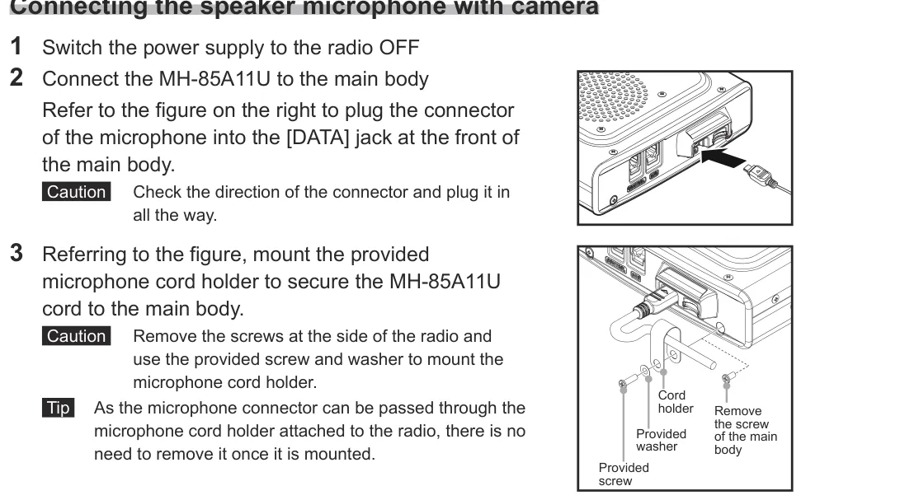</button><figcaption>Figure from page 140. Provided screw Provided washer</figcaption><dialog id="fig-35"><p>Figure from page 140. Provided screw Provided washer</p><form method="dialog"><button>Close</button></form></dialog></figure><figure><button aria-label="Enlarge Figure from page 140. $#%- $#%- 6:4:" class="zoom" data-dialog="fig-36" type="button">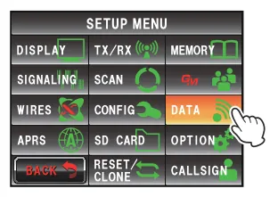</button><figcaption>Figure from page 140. $#%- $#%- 6:4:</figcaption><dialog id="fig-36"><p>Figure from page 140. $#%- $#%- 6:4:</p><form method="dialog"><button>Close</button></form></dialog></figure><p><strong>7</strong> Touch <strong>[1 COM PORT SETTING]</strong>
The screen for the detailed settings will be displayed.</p>
<p><strong>8</strong> Touch <strong>[OUTPUT]</strong> to select “OFF(camera)”
The setting changes as follows each time it is
touched.
“OFF(camera)” → “GPS OUT” → “PACKET” →
“WAYPOINT”</p>
<p>The display will return to the previous screen.</p>
<p>~~Tip~~ The display can also be returned to the previous screen by touching <strong>[BACK]</strong> twice.</p>
<p>~~<strong>Taking pictures</strong>~~</p>
<p><strong>1</strong> Insert the micro-SD card and turn the radio ON
<strong>2</strong> Point the camera lens at the object to be
photographed and press the shutter button on the
microphone</p>
<p>~~Caution~~ Keep a focal distance of at least 50 cm between the
object and the camera. The picture will be out of
focus when the object is too near and the image will
not be clear.</p>
<p>~~Tip~~ In factory default, pictures will be taken with a size of 320
✽ 240 in the NORMAL picture quality.</p>
<p>The size (resolution) and quality (compression ratio) of the
picture can be set using <strong>“OPTION”</strong> → <strong>“1 USB CAMERA”</strong> in
the set-up menu ( P.200).</p>
<p>The picture taken will appear in the display for 10
seconds.
Subsequently, the picture will be stored in JPEG
format, on the microSD card that has been inserted
into the main body card slot.
While the picture appears in the display, touch</p>
<p><strong>[BACK]</strong>, <strong>[DEL]</strong> or <strong>[FORWARD]</strong>, you can save the
data, delete or transfer it to other stations.</p>
<p><strong>[BACK]</strong> : Save the picture to the microSD card,
then return to the original screen</p><p><strong>[DEL]</strong> : Delete the picture<em>, then return to the original screen.</em>:Deleted
images, can be seen on the PC.</p>
<p><strong>[FORWARD]</strong> : Send the picture to other transceivers.Press the microphone [PTT]</p>
<p>button to cancel the picture transmission (the picture will be stored in
the microSD card).
While the picture appears in the display, press the shutter button again, the picture
will be saved to the microSD card, then the pic-ture taken will appear in the display.</p>
<p>~~Tips~~   - It takes about 30 seconds to transmit a picture taken with a resolution of 320 ✽ 240 to</p>
<p>another transceiver.</p>
<pre><code>  - Press the microphone **[PTT]** button to cancel the picture transmission (it may take a while for
</code></pre>
<p>the transmission to be canceled).</p>
<pre><code>  - After the picture is transmitted, the mode will automatically switch to DN of the AMS mode.
</code></pre><p>~~<strong>Viewing a saved picture</strong>~~</p>
<p><strong>1</strong> Press
The function menu will be displayed.
<strong>2</strong> Touch <strong>[LOG]</strong>
A list of the text messages or the pictures saved in
the micro-SD card will be displayed.</p>
<p>~~Tips~~   - A list of the text messages will be displayed when the</p>
<pre><code>  - The date and time the picture was taken will be used as
</code></pre>
<p>the tag of the picture.</p>
<pre><code>  - Newly taken pictures will be displayed at the top of the
</code></pre>
<p>list.</p>
<p><strong>3</strong> Select and touch the picture that you want to see
The picture will appear after the message “Waiting...”
is shown.</p>
<p>~~Tips~~   - Pictures taken with the resolution set to “320 ✽ 240”</p>
<p>(unit: pixel) in the set-up menu under <strong>“OPTION”</strong> → <strong>“1</strong>
<strong>USB CAMERA”</strong> → <strong>“PICTURE SIZE”</strong> will be displayed
in full screen when touched. After 10 seconds or when
the picture is touched again, it will return to the original
screen.</p>
<pre><code>  - Touch **[EDIT]** at the top right of the screen to edit the
</code></pre>
<p>tag.</p>
<pre><code>  - Touch **[DEL]** to erase the picture from the micro-SD
</code></pre>
<p>card.</p>
<pre><code>  - Touch **[FORWARD]** or **[REPLY]** to send the picture to
</code></pre>
<p>other transceivers ( P.129).</p>
<p><strong>4</strong> Touch <strong>[BACK]</strong>
The display will return to the screen showing the list of pictures.</p>
<p>~~<strong>Tip</strong>~~</p>
<p>The pictures can be viewed on a personal computer by reading the contents of the micro-SD card into
the personal computer.</p>
<p>~~<strong>Caution</strong>~~</p>
<p>When the filename of the picture is changed on the personal computer, the picture can not longer be
shown in the display of the FTM-400DR/DE.</p><figure><button aria-label="Enlarge Figure from page 143" class="zoom" data-dialog="fig-37" type="button">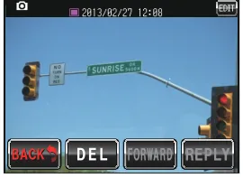</button><figcaption>Figure from page 143</figcaption><dialog id="fig-37"><p>Figure from page 143</p><form method="dialog"><button>Close</button></form></dialog></figure><p>The receive audio received can be recorded and then played back later using the
optional voice guide unit “FVS-2”.
The voice announcing the frequency of the operating band can also be heard when the
announce function is set to on.</p>
<p>~~<strong>Mounting the voice guide unit “FVS-2”</strong>~~</p>
<ul>
<li>
<p><strong>●Preparations</strong></p>
</li>
<li>
<p>Voice guide unit “FVS-2” (optional)</p>
</li>
<li>
<p>Plus driver</p>
</li>
<li>
<p><strong>●Mounting procedure</strong></p>
</li>
</ul>
<p>~~<strong>Cautions</strong>~~</p>
<p>zz Unless necessary, do not touch any parts with your hands as the semiconductors may be damaged</p>
<p>by static electricity.
zz Note that labor charges to install optional items by our company’s customer service support staff</p>
<p>shall be separately chargeable.</p>
<p><strong>1</strong> Switch off the power supply to the radio
<strong>2</strong> Switch off the external power supply
<strong>3</strong> Unplug the control cable, microphone and DC power supply cable from the main
body
<strong>4</strong> Remove the eight screws from the main body, four
on top and two each at the sides</p><figure><button aria-label="Enlarge Figure from page 144" class="zoom" data-dialog="fig-38" type="button">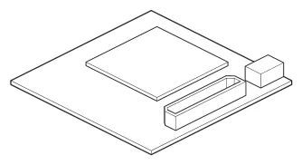</button><figcaption>Figure from page 144</figcaption><dialog id="fig-38"><p>Figure from page 144</p><form method="dialog"><button>Close</button></form></dialog></figure><p><strong>5</strong> Slowly lift up the front side of the top cover of the
main body</p>
<p>~~Caution~~ Do not lift up the top cover by force. This may result
in cables connected to the boards inside the main
body and the speaker inside the cover to be cut.</p>
<p><strong>6</strong> Unplug the speaker cables extending from the top
cover from the socket of the board inside the main
body first before removing the cover</p>
<p>~~Caution~~ Hold the connector when unplugging the cable
without pulling the cable itself.</p>
<p>FVS-2 in all the way to the back.</p>
<p><strong>8</strong> Plug in the speaker cables extending from the main body top cover to the original
socket on the board
<strong>9</strong> Attach the main body top cover and secure using the screws eight</p><figure><button aria-label="Enlarge Figure from page 145" class="zoom" data-dialog="fig-39" type="button">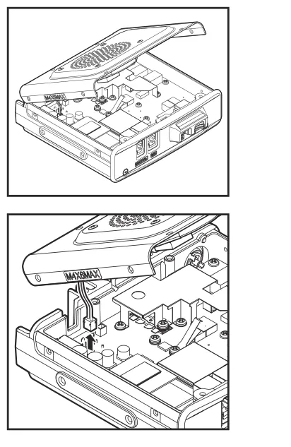</button><figcaption>Figure from page 145</figcaption><dialog id="fig-39"><p>Figure from page 145</p><form method="dialog"><button>Close</button></form></dialog></figure><figure><button aria-label="Enlarge Figure from page 145. Connector for FVS-2" class="zoom" data-dialog="fig-40" type="button">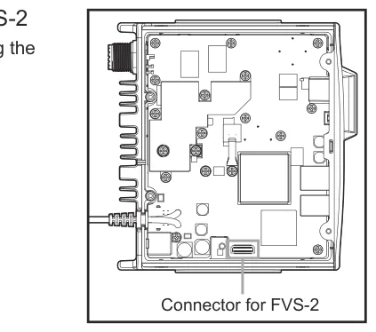</button><figcaption>Figure from page 145. Connector for FVS-2</figcaption><dialog id="fig-40"><p>Figure from page 145. Connector for FVS-2</p><form method="dialog"><button>Close</button></form></dialog></figure><p>~~<strong>Using the voice memory</strong>~~</p>
<p>The voice memory is a function for recording the audio received. The audio is saved in
FVS-2 that is mounted to the radio. The saved audio can be replayed on the radio and
erased later.</p>
<p><strong>Setting the voice memory operation</strong></p>
<p><strong>1</strong> Switch on the power supply to the radio</p>
<p>The set-up menu will be displayed.
<strong>3</strong> Touch <strong>[OPTION]</strong></p>
<p><strong>4</strong> Select and touch <strong>[3 VOICE MEMORY]</strong>
The screen for the detailed settings will be displayed.</p>
<p><strong>5</strong> Touch <strong>[PLAY/REC]</strong> to set the recording time
The setting will switch between “FREE 5min” and
“LAST 30sec” each time it is touched.
“FREE 5min”: A total of 5 minutes of audio in 8</p>
<p>recording areas can be recorded.
“LAST 30sec”: The last 30 seconds will be recorded.</p>
<p>~~Tip~~ Factory default value: FREE 5 min</p>
<p>The display will return to the previous screen.</p><figure><button aria-label="Enlarge Figure from page 146. $#%- $#%- 81+%'/'/14;" class="zoom" data-dialog="fig-41" type="button">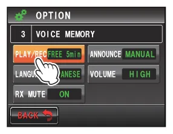</button><figcaption>Figure from page 146. $#%- $#%- 81+%'/'/14;</figcaption><dialog id="fig-41"><p>Figure from page 146. $#%- $#%- 81+%'/'/14;</p><form method="dialog"><button>Close</button></form></dialog></figure><p><strong>Recording the receive audio</strong>
<strong>1</strong> Press
The function menu will be displayed.
<strong>2</strong> Touch <strong>[REC]</strong>
The recording will be started.</p>
<p>~~Tips~~   - When <strong>[REC]</strong> is not displayed in the menu, use <strong>[BACK]</strong></p>
<p>or <strong>[FWD]</strong> to switch the menu.</p>
<pre><code>  - Set the recording time set using **“OPTION”** → **“3**
</code></pre>
<p><strong>VOICE MEMORY”</strong> in the set-up menu will be displayed
under <strong>[REC]</strong> .</p>
<p><strong>3</strong> Touch <strong>[STOP]</strong>
The recording will stop.
The track number of the audio recorded will be
displayed under <strong>[PLAY TRACK]</strong> .</p>
<p><strong>4</strong> Press
The display will return to the previous screen.</p>
<p><strong>Replaying the recorded audio</strong>
<strong>1</strong> Press
The function menu will be displayed.
<strong>2</strong> Touch <strong>[PLAY/REC]</strong> to select the track number to be
replayed</p>
<p>~~Tips~~   - This is not available if there is only one recording.</p>
<pre><code>  - When there are two or more recordings, the track
</code></pre>
<p>number will change in the order “ALL”, “1”, “2”… each
time it is touched.</p>
<pre><code>  - All recorded tracks will be replayed in sequence when
</code></pre>
<p>“ALL” is selected.</p><p><strong>3</strong> Touch <strong>[PLAY]</strong>
Replay will be started.
The replay will stop automatically at the end of the
selected track.</p>
<p>Touch <strong>[STOP]</strong> to stop the replay.</p>
<p><strong>4</strong> Press
The display will return to the previous screen.</p>
<p><strong>Erasing the recorded audio</strong>
<strong>1</strong> Press
The function menu will be displayed.
<strong>2</strong> Touch <strong>[CLR]</strong>
The confirmation screen will be displayed.</p>
<p><strong>3</strong> Touch <strong>[OK?]</strong>
Erasure will be started.</p>
<p>~~Caution~~ All recorded audio will be erased. When there are
two or more recordings, the track number to be
erased cannot be chosen.
When the recordings are erased, [ALL] will be
displayed under <strong>[PLAY TRACK]</strong> .</p>
<p><strong>4</strong> Press
Th di l ill t t th i</p><figure><button aria-label="Enlarge Figure from page 148. 4'% 2.#;64#%-  2.#; 5612 %.4 81+%' (9&amp; $#%-" class="zoom" data-dialog="fig-42" type="button">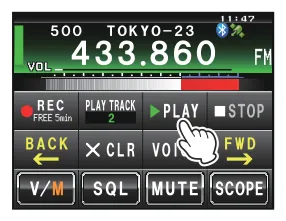</button><figcaption>Figure from page 148. 4'% 2.#;64#%-  2.#; 5612 %.4 81+%' (9&amp; $#%-</figcaption><dialog id="fig-42"><p>Figure from page 148. 4'% 2.#;64#%-  2.#; 5612 %.4 81+%' (9&amp; $#%-</p><form method="dialog"><button>Close</button></form></dialog></figure><figure><button aria-label="Enlarge Figure from page 148. 4'% 2.#;64#%-  2.#; 5612 %.4 81+%' (9&amp; $#%-" class="zoom" data-dialog="fig-43" type="button">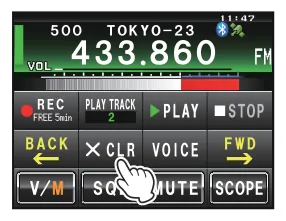</button><figcaption>Figure from page 148. 4'% 2.#;64#%-  2.#; 5612 %.4 81+%' (9&amp; $#%-</figcaption><dialog id="fig-43"><p>Figure from page 148. 4'% 2.#;64#%-  2.#; 5612 %.4 81+%' (9&amp; $#%-</p><form method="dialog"><button>Close</button></form></dialog></figure><p>~~<strong>Listening to the frequency voice announcement</strong>~~</p>
<p><strong>Setting the announce function operation</strong></p>
<p>Set the following voice announcement parameters.</p>
<ul>
<li>
<p>Automatically reading out the frequency or not</p>
</li>
<li>
<p>Reading out the frequency in English or Japanese</p>
</li>
<li>
<p>Reading out aloud</p>
</li>
<li>
<p>Mute the receive audio during a voice announcement or replaying recorded audio.</p>
</li>
</ul>
<p>The set-up menu will be displayed.
<strong>2</strong> Touch <strong>[OPTION]</strong></p>
<p><strong>3</strong> Select and touch <strong>[3 VOICE MEMORY]</strong>
The screen for the detailed settings will be displayed.</p>
<p><strong>4</strong> Touch <strong>[ANNOUNCE]</strong> to select the condition for
reading out of the frequency
The setting will switch between “AUTO”, “OFF” and
“MANUAL” each time it is touched.
“AUTO”: The frequency is read out when the band is</p>
<p>changed after touching <strong>[VOICE]</strong> .
“OFF”: The frequency is not read out.
“MANUAL”: The frequency is read out when <strong>[VOICE]</strong></p>
<p>is touched.</p>
<p>~~Tip~~ Factory default value: AUTO</p>
<p><strong>5</strong> Touch <strong>[LANGUAGE]</strong> to select the language in which
to read out the frequency
The setting will switch between “ENGLISH” and
“JAPANESE” each time it is touched.</p>
<p>~~Tip~~ Factory default value: ENGLISH</p><p><strong>6</strong> Touch <strong>[VOLUME]</strong> to select the announcement volume
The setting will switch between “HIGH”, “MID” and
“LOW” each time it is touched.</p>
<p>~~Tip~~ Factory default value: HIGH</p>
<p><strong>7</strong> Touch <strong>[RX MUTE]</strong> to select ON/OFF
The setting will switch between “ON” and “OFF” each
time the symbol is touched.
ON: The receive audio will be muted during a voice</p>
<p>announcement or replaying recorded audio.
OFF: The receive audio will not be muted during a voice</p>
<p>announcement or replaying recorded audio.</p>
<p>~~Tip~~ Factory default value: ON</p>
<p>The announce function operation will be set and the display will return to the previous
screen.</p>
<p><strong>Listening to the frequency voice announcement</strong></p>
<p><strong>(1) When the operation is set to “AUTO”</strong></p>
<p>The frequency of the operating band will be automatically announced in the following
cases.</p>
<ul>
<li>
<p>When the VFO mode and memory mode are switched</p>
</li>
<li>
<p>When the operating band is changed</p>
</li>
</ul>
<p><strong>(2) When the operation is set to “MANUAL”</strong>
<strong>1</strong> Press
The function menu will be displayed.
<strong>2</strong> Touch <strong>[VOICE]</strong>
The frequency of the operating band will be</p>
<p>~~<strong>Tip</strong>~~</p>
<p>The volume can also be adjusted by turning of the operating band.</p><p>The memory channels and settings in the set-up menu can be copied to another FTM400DR/DE. This is convenient when matching the settings of fellow stations that you
communicate with frequently.</p>
<p>~~<strong>Using the micro-SD card</strong>~~</p>
<p>The data files saved in the FTM-400DR/DE can be selected and copied to a micro-SD
card.</p>
<p><strong>Copying data to a micro-SD card</strong>
<strong>1</strong> Insert the micro-SD card into the main body card slot</p>
<p>The set-up menu will be displayed.
<strong>3</strong> Touch <strong>[SD CARD]</strong>
The menu list will be displayed.</p>
<p><strong>5</strong> Touch <strong>[Write to SD]</strong>
The screen for selecting the data files to be copied will
be displayed.
“ALL”: Copies all data.
“MEMORY”: Copies only the memory channels and</p>
<p>position information for backtrack use.
“SETUP”: Copies only the settings in the set-up menu.</p>
<p><strong>6</strong> Select and touch the file to be copied
The confirmation screen will be displayed.</p><p><strong>7</strong> Touch <strong>[OK?]</strong>
The data selected in Step 6 will be copied to the
micro-SD card.
“Completed” will be displayed when the copying is
completed.</p>
<p>The display will return to the previous screen.</p>
<p><strong>Copying data from the micro-SD card</strong>
<strong>1</strong> Insert the micro-SD card into the FTM-400DR/DE where the data is stored and copy
the data to the card
<strong>2</strong> Remove the micro-SD card and insert it into the FTM-400DR/DE that the data is
going to be copied to</p>
<p>The set-up menu will be displayed.</p>
<p><strong>6</strong> Touch <strong>[Read from SD]</strong>
The screen for selecting the data files to be copied
will be displayed.
“ALL”: Copies all data.
“MEMORY”: Copies only the memory channels and</p>
<p>position information for backtrack use.
“SETUP”: Copies only the settings in the set-up</p>
<p>menu.</p><figure><button aria-label="Enlarge Figure from page 152. $#%- $#%- 5&amp;%#4&amp;" class="zoom" data-dialog="fig-44" type="button">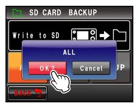</button><figcaption>Figure from page 152. $#%- $#%- 5&amp;%#4&amp;</figcaption><dialog id="fig-44"><p>Figure from page 152. $#%- $#%- 5&amp;%#4&amp;</p><form method="dialog"><button>Close</button></form></dialog></figure><figure><button aria-label="Enlarge Figure from page 152. $#%- $#%- $#%-72 " class="zoom" data-dialog="fig-45" type="button">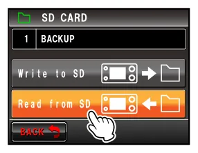</button><figcaption>Figure from page 152. $#%- $#%- $#%-72 </figcaption><dialog id="fig-45"><p>Figure from page 152. $#%- $#%- $#%-72 </p><form method="dialog"><button>Close</button></form></dialog></figure><p><strong>7</strong> Select and touch the data to be copied
The confirmation screen will be displayed.</p>
<p>~~Tip~~ Data that has not been saved in the micro-SD card
cannot be touched.</p>
<p><strong>8</strong> Touch <strong>[OK?]</strong>
The data selected in Step 7 will be copied to the
micro-SD card.
“Completed” will be displayed when the copying is
completed.</p>
<p>The display will return to the previous screen.</p>
<p>~~<strong>Tip</strong>~~</p>
<p>The group and member information saved in the memory using the GM function can be copied using
the micro-SD card. Refer to the separate Operating Manual GM Edition for details (download the
manual from the YAESU website).</p>
<p>~~<strong>Using the clone function</strong>~~</p>
<p>Using the clone function, all the data saved in the radio can be copied directly to another
FTM-400DR/DE.</p>
<p><strong>Example: When using the clone function in two FTM-400DR/DEs</strong>
<strong>1</strong> Turn both FTM-400DR/DEs OFF
<strong>2</strong> Plug in the optional clone cable “CT-166” into the
respective [DATA] jacks at the back of the main
bodies</p>
<p><strong>3</strong> Turn both FTM-400DR/DEs ON</p>
<p>The set-up menu will be displayed.</p><p><strong>5</strong> Touch <strong>[RESET/CLONE]</strong>
The menu list will be displayed.</p>
<p><strong>6</strong> Select and touch <strong>[7 CLONE]</strong>
The screen for selecting the copy direction will be
displayed.</p>
<p><strong>7</strong> Select and touch <strong>[This radio → other]</strong> in the FTM400DR/DE where the data is going to be copied from
The confirmation screen will be displayed.</p>
<p><strong>8</strong> Select and touch <strong>[Other → This radio]</strong> in the FTM-400DR/DE where the data is
going to be copied to
The confirmation screen will be displayed.</p>
<p>The display will return to the previous screen.
<strong>11</strong> Switch OFF both of the FTM-400DR/DEs and disconnect the clone cable</p>
<p>~~<strong>Cautions</strong>~~</p>
<p>zz When “ERROR” is displayed during the copy (clone) operation, check the connection of the clone</p>
<p>cable and start the clone operation all again.
zz When the operation is terminated before completion due to loss of power during the copy (clone)</p>
<p>operation, the FTM-400DR/DE where the data is being copied to will automatically be reset. Check
if there is any abnormality in the power supply and start the cloning operation over again</p><p>The provided PC connection cable “SCU-20” and other optional cables can be used to
connect the radio to a personal computer as a COM port for the following operations.</p>
<ul>
<li>
<p>Transmitting your own station position information to the personal computer for
incorporation into the map software</p>
</li>
<li>
<p>Updating the firmware of the radio</p>
</li>
<li>
<p>Packet communication</p>
</li>
</ul>
<p>Use the [DATA] jack at the back of the main body to connect with the personal computer.
The pin assignment of the [DATA] jack is as follows.</p>
<p>➀ PKD (packet data input) (300 mVp-p)
➁ GND
➂ PSK (PTT)
➃ RX 9600 (9600 bps packet data output)
➄ RX 1200 (1200 bps packet data output) (300 mVp-p)
➅ PK SQL (squelch control)</p>
<p>~~<strong>Connecting to a personal computer</strong>~~</p>
<ul>
<li>
<p><strong>●Preparations</strong></p>
</li>
<li>
<p>Personal computer</p>
</li>
<li>
<p>PC connection cable “SCU-20” (accessories)… when connecting to the USB terminal
of a personal computer</p>
</li>
</ul>
<p>➀ PKD (packet data input)
➁ GND
➂ PSK (PTT)
➃ RX 9600 (9600 bps packet data output)
➄ RX 1200 (1200 bps packet data output)
➅ PK SQL (squelch control)
➆ TXD (serial data output [transceiver → PC])
➇ RXD (serial data input [transceiver ←PC])</p>
<p>To the personal computer</p><ul>
<li>Data cable “CT-165” (optional)… when connecting to the RS-232C terminal of a
personal computer</li>
</ul>
<p>To the transceiver To the personal computer</p>
<p>➀ ➁ GND
➂ ➃ ➄ ➅ ➆ TXD (serial data output [transceiver → PC])
➇ RXD (serial data input [transceiver ← PC])
➈ CTS (data communication control)
➉ RTS (data communication control)</p>
<p>➀ ➁ TXD (serial data output [transceiver → PC])
➂ RXD (serial data input [transceiver ← PC])
➃ ➄ GND
➅ ➆ CTS (data communication control)
➇ RTS (data communication control)
➈ </p>
<p>~~<strong>Tips</strong>~~</p>
<ul>
<li>
<p>Make sure to switch off the power to the radio first before connecting.</p>
</li>
<li>
<p>When using the PC connection cable “SCU-20”, a dedicated driver needs to be installed in the
personal computer. Download and use the driver and installation manual from the YAESU website.</p>
</li>
</ul>
<p><strong>Sending position information to the computer</strong>
<strong>1</strong> Turn the radio ON</p>
<p>The set-up menu will be displayed.
<strong>3</strong> Touch <strong>[DATA]</strong>
The menu list will be displayed.</p>
<p><strong>4</strong> Select and touch <strong>[1 COM PORT SETTING]</strong>
The screen for the detailed settings will be displayed.</p><p><strong>5</strong> Touch <strong>[OUTPUT]</strong> to select “GPS OUT”
The setting changes as follows each time it is
touched.
“OFF(camera)” → “GPS OUT” → “PACKET” →
“WAYPOINT”</p>
<p>~~Tip~~ Factory default value: OFF (camera)</p>
<p>~~Caution~~ The snapshot function of the speaker microphone
with camera will be inactivated when this is set to
“OFF (camera)”.</p>
<p><strong>6</strong> Touch <strong>[SPEED]</strong> to select the communication speed
of the COM port
The setting changes as follows each time it is
touched.
“4800 bps” → “9600 bps” → “19200 bps” → “38400
bps” → “57600 bps”</p>
<p>~~Tip~~ Factory default value: 9600 bps</p>
<p>The display will return to the previous screen.
The output of the position information data will start, and your own position
information will be transmitted to the personal computer at intervals of about a
second.</p>
<p>~~<strong>Tip</strong>~~</p>
<p>An operating software using NMEA-0183 standard GGA and RMC sentence is required to use the
position information.</p>
<p><strong>Updating the firmware of the radio</strong></p>
<p>The firmware of the radio can be updated by connecting to a personal computer when
Updated firmware is available.. Download and use the updated version of the firmware
and the update manual from the YAESU website.</p><p>~~<strong>Using the radio as a transceiver for packet communication</strong>~~</p>
<p>Packet communication via this radio is possible by connecting this radio to the TNC
(terminal node controller).</p>
<ul>
<li>
<p><strong>●Preparations</strong></p>
</li>
<li>
<p>TNC</p>
</li>
<li>
<p>Personal computer</p>
</li>
<li>
<p>Data cable* … Prepare a data cable to match the connecting device</p>
</li>
<li>
<p>We supply the following optional products.</p>
</li>
<li>
<p>Data cable “CT-167” (optional)</p>
</li>
</ul>
<p>To the TNC etc.</p>
<p>➀ PKD (packet data input)
➁ GND
➂ PSK (PTT)
➃ RX 9600 (9600 bps packet data output)
➄ RX 1200 (1200 bps packet data output)
➅ PK SQL (squelch control)
➆ TXD (serial data output [transceiver → PC])
➇ RXD (serial data input [transceiver ← PC])
➈ CTS (data communication control)
➉ RTS (data communication control)</p>
<ul>
<li>Data cable “CT-164” (optional)</li>
</ul>
<p>➀ Brown PKD (packet data input)
➁ Black thick wire GND
➂ Red PSK (PTT)
➃ Orange RX 9600 (9600 bps packet data output)
➄ Yellow RX 1200 (1200 bps packet data output)
➅ Green PK SQL (squelch control)
➆ Blue TXD (serial data output) [transceiver → PC])
➇ Grey RXD (serial data input [transceiver ← PC])
➈ White CTS (data communication control)
➉ Black RTS (data communication control)</p>
<p>To the transceiver To the TNC etc.</p>
<p>➀ PKD (packet data input)
➁ GND
➂ PSK (PTT)
➃ RX 9600 (9600 bps packet data output)
➄ RX 1200 (1200 bps packet data output)
➅ PK SQL (squelch control)
➆ ➇ ➈ ➉ </p>
<p>➀ PKD (packet data input)
➁ GND
➂ PSK (PTT)
➃ RX 9600 (9600 bps packet data output)
➄ RX 1200 (1200 bps packet data output)
➅ PK SQL (squelch control)</p><ul>
<li>Data cable “CT-163” (optional)</li>
</ul>
<p>➀ PKD (packet data input)
➁ GND
➂ PSK (PTT)
➃ RX 9600 (9600 bps packet data output)
➄ RX 1200 (1200 bps packet data output)
➅ PK SQL (squelch control)
➆ TXD (serial data output [transceiver → PC])
➇ RXD (serial data input [transceiver ← PC])
➈ CTS (data communication control)
➉ RTS (data communication control)</p>
<p>To the personal computer etc.</p>
<p>To the TNC etc.</p>
<p><strong>Dsub 9 pin</strong>
➀  ➁ TXD (serial data output [transceiver → PC])
➂ RXD (serial data input [transceiver ← PC])
➃  ➄ GND
➅  ➆ CTS (data communication control)
➇ RTS (data communication control)
➈  <strong>DIN 6 pin</strong>
➀ PKD (packet data input)
➁ GND
➂ PSK (PTT)
➃ RX 9600 (9600 bps packet data output)
➄ RX 1200 (1200 bps packet data output)
➅ PK SQL (squelch control)</p>
<p>~~<strong>Tips</strong>~~</p>
<ul>
<li>
<p>Make sure to turn the power to the radio OFF before connecting.</p>
</li>
<li>
<p>Refer to the operating manual of the TNC used on how to connect the TNC to a personal computer.</p>
</li>
<li>
<p>RF receive interference may occur because of noise occurring in the personal computer.
When signals cannot be received normally, keep the personal computer at a distance away from the
radio and use a photo-coupler and noise filter to connect.</p>
</li>
</ul><ul>
<li><strong>●Set the packet communication operation</strong>
<strong>1</strong> Turn the radio ON</li>
</ul>
<p>The set-up menu will be displayed.
<strong>3</strong> Touch <strong>[DATA]</strong>
The menu list will be displayed.</p>
<p><strong>4</strong> Select and touch <strong>[1 COM PORT SETTING]</strong>
The screen for the detailed settings will be displayed.</p>
<p><strong>5</strong> Touch <strong>[OUTPUT]</strong> to select “PACKET”
The setting changes as follows each time it is
touched.
“OFF(camera)” → “GPS OUT” → “PACKET” →
“WAYPOINT”</p>
<p>~~Tip~~ Factory default value: OFF (camera)</p>
<p>~~Caution~~ The snapshot function of the speaker microphone
with camera will be inactivated when this is set to
“OFF (camera)”.</p>
<p><strong>6</strong> Touch <strong>[SPEED]</strong> to select the communication speed
of the COM port
The setting changes as follows each time it is
touched.
“4800 bps” → “9600 bps” → “19200 bps” → “38400
bps” → “57600 bps”</p>
<p>~~Tip~~ Factory default value: 9600 bps</p>
<p><strong>7</strong> Touch <strong>[BACK]</strong></p>
<p><strong>8</strong> Select and touch <strong>[2 DATA BAND SELECT]</strong>
The screen for the detailed settings will be displayed.</p><figure><button aria-label="Enlarge Figure from page 160. Ż Ż" class="zoom" data-dialog="fig-46" type="button">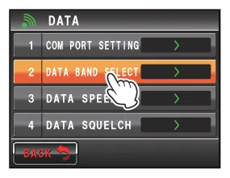</button><figcaption>Figure from page 160. Ż Ż</figcaption><dialog id="fig-46"><p>Figure from page 160. Ż Ż</p><form method="dialog"><button>Close</button></form></dialog></figure><p><strong>9</strong> Touch <strong>[DATA]</strong> to select the band to be used for the
packet communication
The setting changes as follows each time it is
touched.
“A-BAND FIX” → “B-BAND FIX” → “A=TX/B=RX” →
“A=RX/B=TX” → “MAIN BAND” → “SUB BAND”</p>
<p>~~Tips~~   - Refer to “Data communication settings” ( P.193) for
details.</p>
<pre><code>  - Factory default value: B-BAND FIX
</code></pre>
<p><strong>10</strong> Touch <strong>[BACK]</strong>
<strong>11</strong> Select and touch <strong>[3 DATA SPEED]</strong>
The screen for the detailed settings will be displayed.</p>
<p><strong>12</strong> Touch <strong>[DATA]</strong> to select the packet communication
speed
The setting will switch between “1200 bps” and “9600
bps” each time it is touched.</p>
<p>~~Tip~~ Factory default value: 1200 bps</p>
<p><strong>13</strong> Touch <strong>[BACK]</strong>
<strong>14</strong> Select and touch <strong>[4 DATA SQUELCH]</strong>
The screen for the detailed settings will be displayed.</p>
<p><strong>15</strong> Touch <strong>[DATA]</strong> to select the squelch detection method
for the packet communication
The setting switches between “RX BAND” and “TX/
RX BAND” each time it is touched.</p>
<p>~~Tips~~   - Refer to “Data communication settings” ( P.193) for
details.</p>
<pre><code>  - Factory default value: RX BAND
</code></pre><p>The display will return to the previous screen.
Packet communication will be enabled.
<strong>17</strong> Choose the band and frequency according to the settings in the set-up menu</p>
<p>The output level to TNC from the radio will be set.
<strong>19</strong> Adjust the TNC output level
The input level to the radio will be set.</p>
<p>~~<strong>Caution</strong>~~</p>
<p>When transmitting a large volume of data, the transmission time gets longer and the radio will get
heated up. When transmission continues for a long period of time, the overheating prevention circuit
will act to lower the transmit power output. When transmission is continued further, transmission will
be suspended automatically and the radio will go into the receive mode in order to prevent failure due
to overheating.
When the overheating prevention circuit is activated and the radio goes into the receive mode, either
switch turn OFF the power, or wait until the temperature drops in the reception mode.</p>
<p>~~<strong>Other devices that can be connected</strong>~~</p>
<ul>
<li><strong>●External speaker</strong>
An optional high output and high sound quality waterproof external speaker “MLS200-M10” can be connected.
Plug the external speaker into the [EXT SP] jack at the back of the main body.</li>
</ul>
<p>~~<strong>Tip</strong>~~</p>
<p>When an external speaker is connected to the [EXT SP] jack, there will be no sound from the internal
speaker.</p>
<p>If you connect an External Speaker other than the MLS-200-M10 to the [EXT SP] Jack,
use a <em><strong>Stereo</strong></em> Speaker only (Do not connect a <em><strong>Monaural</strong></em> Speaker plug directly into the</p>
<p>[EXT SP] Jack.)
If you wish to connect a <em><strong>Monaural</strong></em> Speaker to
the [EXT SP] Jack, use the supplied "Stereo to
Monaural Plug" (see figure).</p>
<p><strong>Monaural Speaker Plug</strong></p><figure><button aria-label="Enlarge Figure from page 162. Stereo to Monaural Plug Monaural Speaker Plug" class="zoom" data-dialog="fig-47" type="button">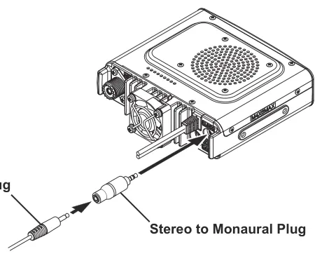</button><figcaption>Figure from page 162. Stereo to Monaural Plug Monaural Speaker Plug</figcaption><dialog id="fig-47"><p>Figure from page 162. Stereo to Monaural Plug Monaural Speaker Plug</p><form method="dialog"><button>Close</button></form></dialog></figure><p>your individual preferences and type of use. The functions are divided into menus such
as display, transmission and reception, memory, device configuration etc.. It is easy to
select the items that you would like to adjust from the respective lists and enter or select
the settings that are easy to use.</p>
<p>~~<strong>Set-up Menu Basic Operations</strong>~~</p>
<p>The set-up menu will be displayed.
<strong>2</strong> Touch the menu item</p>
<p>The menu list will be displayed.</p>
<p><strong>3</strong> Select the item to be set</p>
<p>The item will turn orange in color.</p>
<p>screen.</p>
<p><strong>4</strong> Change the set values</p>
<p>The set value will change each time it is pressed or touched.</p>
<p>~~Tip~~ When “&gt;” is displayed in the set value field, pressing</p>
<p>The chosen value will be confirmed and the display will return to the previous screen.</p>
<pre><code>  - When setting additional items in the same menu next, touch **[BACK]** . The set value will be
</code></pre>
<p>confirmed and the display will return to the menu list screen.</p>
<pre><code>  - When **[BACK]** is touched in any of the screens, the display will return to the previous screen.
</code></pre>
<p>~~<strong>Tip</strong>~~</p>
<p>When a set menu item is touched again, and the menu list is displayed, a screen in which a
previously set item is already selected (displayed in orange color) will be displayed.</p><p>|Menu / Item|Col2|Col3|Explanation of
function|Available settings
(Default values shown in BOLD)|
|---|---|---|---|---|
|
<strong>DISPLAY</strong>
|
<strong>DISPLAY</strong>
|
<strong>DISPLAY</strong>
|
<strong>DISPLAY</strong>
|
<strong>DISPLAY</strong>
|
||<strong>1</strong>|<strong>DISPLAY SELECT</strong>|~~Screen display settings~~
when
 is pressed
briefly|ALTITUDE: ON /<strong>OFF</strong>
TIMER/CLOCK: ON /<strong>OFF</strong>
GPS INFO: ON /<strong>OFF</strong>|
||<strong>2</strong>|<strong>TARGET LOCATION</strong>|Switch between the
compass screen and the
latitude and longitude
display screen when using 
the GPS and GM functions|</p>
<p><strong>COMPASS</strong> / NUMERIC|
||<strong>3</strong>|<strong>BACKGROUND</strong>
<strong>COLOR</strong>|
Set the display
background color|<strong>ORANGE</strong> / GREEN / BLUE / PURPLE /
GRAY|
||<strong>4</strong>|<strong>BAND SCOPE</strong>|
Scope Display width
setting|NARROW /<strong>WIDE</strong>|
||<strong>5</strong>|<strong>LCD BRIGHTNESS</strong>|Touch panel brightness|MIN / 2 / 3 / 4 / 5 / 6 /<strong>MAX</strong>|
||<strong>6</strong>|
<strong>LCD CONTRAST</strong>|
Touch panel contrast|
-3 / -2 / -1 / 0 / +1 / +2 /<strong>+3</strong>|
||<strong>7</strong>|
<strong>TIME/VDD</strong>|
Time / Voltage Display
setting|
<strong>TIME</strong> / VDD|
|<strong>TX/RX</strong>|<strong>TX/RX</strong>|<strong>TX/RX</strong>|<strong>TX/RX</strong>|<strong>TX/RX</strong>|
|||<strong>MODE</strong>|Setting the signal format
in the analog mode|<strong>AUTO (FM)</strong> / FM / NARROW FM / AM|
||
<strong>DIGITAL</strong>|
<strong>DIGITAL</strong>|
<strong>DIGITAL</strong>|
<strong>DIGITAL</strong>|
||<strong>1</strong>|<strong>AMS TX MODE</strong>|Set the AMS
transmission mode|<strong>TX M</strong> / TX FM FIXED / TX DN FIXED /
TX VW FIXED / AUTO|
||<strong>2</strong>|<strong>SQL TYPE</strong>|
Digital mode Squelch
type setting|
<strong>OFF</strong> / CODE / BREAK|
||<strong>3</strong>|<strong>SQL CODE</strong>|
Squelch code setting in
the digital mode|CODE:<strong>001</strong> to 126|
||<strong>4</strong>|<strong>DIGITAL POPUP TIME</strong>|
Information screen pop-
up time|OFF / 2 sec / 4 sec / 6 sec / 8 sec /<strong>10 sec</strong> / 
20 sec / 30 sec / 60 sec / CONTINUE|
||<strong>5</strong>|<strong>LOCATION SERVICE</strong>|
Own (MY) position
display setting in the
digital mode|
<strong>ON</strong> / OFF
Refer to the separate Operating Manual
GM Edition for details on the functions.|
||<strong>6</strong>|<strong>STANDBY BEEP</strong>|
Standby Beep setting|
<strong>ON</strong> / OFF|
||<strong>7</strong>|
<strong>DSP VERSION</strong>|
DSP version display|
Ver. 2.** (cannot be edited; differs
depending on the time of release)|
||
<strong>AUDIO</strong>|
<strong>AUDIO</strong>|
<strong>AUDIO</strong>|
<strong>AUDIO</strong>|
||<strong>1</strong>|<strong>SUB BAND MUTE</strong>|Sub-band mute setting|<strong>OFF</strong> / ON|
||<strong>2</strong>|
<strong>MIC GAIN</strong>|
Microphone sensitivity
setting|
MIN / LOW /<strong>NORMAL</strong> / HIGH / MAX|
|<strong>MEMORY</strong>|<strong>MEMORY</strong>|<strong>MEMORY</strong>|<strong>MEMORY</strong>|<strong>MEMORY</strong>|
||<strong>1</strong>|<strong>ALPHA TAG SIZE</strong>|Display size setting of
memory channel tag|SMALL /<strong>LARGE</strong>|
||<strong>2</strong>|<strong>MEM SCAN TYPE</strong>|
Scanning method
setting during memory
scan|<strong>ALL MEM</strong> / SELECT MEM|
|<strong>SIGNALING</strong>|<strong>SIGNALING</strong>|<strong>SIGNALING</strong>|<strong>SIGNALING</strong>|<strong>SIGNALING</strong>|
|<strong>SIGNALING</strong>|<strong>1</strong>|<strong>TONE SQL FREQ</strong>|Tone frequency
(CTCSS)|67.0Hz - 254.1 Hz<strong>88.5 Hz</strong>|
|<strong>SIGNALING</strong>|<strong>2</strong>|<strong>DCS CODE</strong>|DCS code setting|<strong>023</strong> - 754|</p>
<p><strong>3</strong> <strong>AUTO DIALER</strong> DTMF code automatic OFF / <strong>ON</strong>
transmission setting</p>
<p>OFF / <strong>ON</strong></p><p>|Menu / Item|Col2|Col3|Explanation of
function|Available settings
(Default values shown in BOLD)|
|---|---|---|---|---|
|
<strong>SIGNALING</strong>|
<strong>SIGNALING</strong>|
<strong>SIGNALING</strong>|
<strong>SIGNALING</strong>|
<strong>SIGNALING</strong>|
||<strong>5</strong>|<strong>PAGER CODE</strong>|Pager individual code
setting|RX CODE : 01 - 50<strong>05</strong>
RX CODE 2: 01 - 50<strong>47</strong> 
TX CODE 1: 01 - 50<strong>05</strong>
TX CODE 2: 01 - 50<strong>47</strong>|
||<strong>6</strong>|<strong>PRG REV TONE</strong>|User programmed
reverse tone frequency|
300 Hz - 3000 Hz<strong>1500 Hz</strong>|
||<strong>7</strong>|<strong>BELL RINGER</strong>|
Recall sound length
setting|<strong>OFF</strong> / 1 time / 3 times / 5 times / 8 times /
CONTINUOUS|
||<strong>8</strong>|<strong>SQL EXPANSION</strong>|Separate squelch type
setting for transmit and
receive|<strong>OFF</strong> / ON|
||<strong>9</strong>|<strong>WX ALERT</strong>
(USA Version Only)|Weather alert operation
setting|<strong>OFF</strong> / ON|
|</p>
<p><strong>SCAN</strong>|</p>
<p><strong>SCAN</strong>|</p>
<p><strong>SCAN</strong>|</p>
<p><strong>SCAN</strong>|</p>
<p><strong>SCAN</strong>|
||<strong>1</strong>|<strong>DUAL WATCH STOP</strong>|Setting the signal
reception method|<strong>AUTO</strong> / HOLD|
||<strong>2</strong>|<strong>SCAN DIRECTION</strong>|
Scanning direction
setting|<strong>UP</strong> / DOWN|
||<strong>3</strong>|<strong>SCAN RESUME</strong>|Set the resume
operation after scan stop|<strong>BUSY</strong> / HOLD / 1 sec / 3 sec / 5 sec|
|
<strong>GM</strong>|
<strong>GM</strong>|
<strong>GM</strong>|
<strong>GM</strong>|
<strong>GM</strong>|
||<strong>1</strong>|<strong>RANGE RINGER</strong>|Bell sound setting
when checking for
stations within sphere of
communications|<strong>OFF</strong> / ON|
||<strong>2</strong>|<strong>RADIO ID</strong>|Specific ID display by
transceiver|- (cannot be edited)|
|* Refer to the separate Operating Manual GM Edition for details on the functions.|* Refer to the separate Operating Manual GM Edition for details on the functions.|* Refer to the separate Operating Manual GM Edition for details on the functions.|* Refer to the separate Operating Manual GM Edition for details on the functions.|* Refer to the separate Operating Manual GM Edition for details on the functions.|
|
<strong>WIRES X</strong>|
<strong>WIRES X</strong>|
<strong>WIRES X</strong>|
<strong>WIRES X</strong>|
<strong>WIRES X</strong>|
||
<strong>1</strong>|<strong>RPT/WIRES FREQ</strong></p>
<p><strong>PRESET FREQUENCY</strong>|Setting of operating
frequency in repeater /
WIRES-X
Registration of the
preset frequency|<strong>MANUAL</strong> / PRESET</p>
<p>144.000 - 146.000<strong>144.620</strong>|
||<strong>2</strong>|<strong>SEARCH SETUP</strong>|
Setting the WIRES
ROOM selection method|<strong>HISTORY</strong> / ACTIVITY|
||<strong>3</strong>|<strong>EDIT CATEGORY TAG</strong>|
Editing the category tag|C1 - C5|
||<strong>4</strong>|
<strong>REMOVE ROOM/NODE</strong>|
 Deletion of the
registered categories|
C1 - C5|
|
* Refer to the separate Operating Manual WIRES-X Edition for details on the functions.|
* Refer to the separate Operating Manual WIRES-X Edition for details on the functions.|
* Refer to the separate Operating Manual WIRES-X Edition for details on the functions.|
* Refer to the separate Operating Manual WIRES-X Edition for details on the functions.|
* Refer to the separate Operating Manual WIRES-X Edition for details on the functions.|
|
<strong>CONFIG</strong>|
<strong>CONFIG</strong>|
<strong>CONFIG</strong>|
<strong>CONFIG</strong>|
<strong>CONFIG</strong>|
||<strong>1</strong>|<strong>DATE &amp; TIME ADJUST</strong>|Setting the date and time|-|
||<strong>2</strong>|
<strong>DATE &amp; TIME FORMAT</strong>|
 Setting the date and
time display formats|DATE:<strong>mmm/dd/yyyy</strong> /
yyyy/mmm/dd / dd/mmm/yyyy /
yyyy/dd/mmm
TIME:<strong>24 hour</strong> / 12 hour|
||<strong>3</strong>|<strong>TIME ZONE</strong>|Time zone setting|
UTC±14: 00 (0.5 h interval)<strong>UTC +0: 00</strong>|
||<strong>4</strong>|
<strong>AUTO RPT SHIFT</strong>|
Auto repeater shift setting|
 OFF /<strong>ON</strong>|
|</p>
<p><strong>CONFIG</strong>|</p>
<p><strong>CONFIG</strong>|</p>
<p><strong>CONFIG</strong>|</p>
<p><strong>CONFIG</strong>|</p>
<p><strong>CONFIG</strong>|</p>
<p><strong>5</strong> <strong>RPT SHIFT</strong> Repeater shift direction OFF / −/ +</p><p>|Menu / Item|Col2|Col3|Explanation of
function|Available settings
(Default values shown in BOLD)|
|---|---|---|---|---|
|
<strong>CONFIG</strong>|
<strong>CONFIG</strong>|
<strong>CONFIG</strong>|
<strong>CONFIG</strong>|
<strong>CONFIG</strong>|
||<strong>6</strong>|<strong>RPT SHIFT FREQ</strong>|Repeater TX offset
setting|0.00 - 99.95 MHz
(Differs depending on frequency)|
||<strong>7</strong>|<strong>FM AM STEP</strong>|Channel step setting|
<strong>AUTO</strong> / 5.00 KHz / 6.25 KHz / 10.00 KHz /
12.50 KHz / 15.00 KHz / 20.00 KHz /
25.00 KHz / 50.00 KHz / 100.00 KHz|
||<strong>8</strong>|<strong>BEEP</strong>|Beep setting|
OFF /<strong>LOW</strong> / HIGH|
||<strong>9</strong>|<strong>CLOCK TYPE</strong>|
Clock shift setting|
<strong>A</strong> / B|
||<strong>10 <strong>|
 <strong>MIC PROGRAM KEY</strong>|
Microphone P buttons
setting|
OFF (disable the P button) / BAND SCOPE /
SCAN / HOME / DCS CODE /
TONE FREQ / RPT SHIFT / REVERSE /
TX POWER / SQL OFF / T-CALL / VOICE /
D_X / WX / S-LIST / MSG / REPLY /
M-EDIT
P1:</strong>SQL OFF</strong> (<strong>T-CALL</strong>: European version)
P2:<strong>HOME</strong>
P3:<strong>D_X</strong>
P4:<strong>TX POWER</strong>|
||<strong>11 <strong>|</strong>RX COVERAGE</strong>|Reception range
expansion setting|
<strong>NORMAL</strong> / WIDE|
||<strong>12 <strong>|</strong>UNIT</strong>|
Display unit setting|METRIC / INCH
(Depends on the transceiver version)|
||<strong>13 <strong>|</strong>APO</strong>|Automatic power OFF
operating time|
<strong>OFF</strong> / 0.5 hour - 12.0 hour|
||<strong>14 <strong>|</strong>TOT</strong>|
TX time out setting|OFF /<strong>5 min</strong> - 30 min|
||
<strong>15 <strong>|
 <strong>Bluetooth PAIRING</strong>|
PIN code setting and
pairing start|
0000 - 9999</strong>6111</strong>|
||<strong>16 <strong>|</strong>GPS DATUM</strong>|
GPS function positioning
selection|
<strong>WGS-84</strong> / TOKYO MEAN|
||<strong>17 <strong>|</strong>GPS DEVICE</strong>|GPS receiver selection|<strong>INTERNAL</strong> / EXTERNAL|
||
**18 **|
 <strong>GPS LOG</strong>|
GPS access time setting|
 <strong>OFF</strong> / 1 sec - 60 sec|
|</p>
<p><strong>DATA</strong>|</p>
<p><strong>DATA</strong>|</p>
<p><strong>DATA</strong>|</p>
<p><strong>DATA</strong>|</p>
<table>
<thead>
<tr>
<th><strong>DATA</strong></th>
</tr>
</thead>
<tbody>
<tr>
<td></td>
</tr>
</tbody>
</table>
<p><strong>DATA</strong>|<strong>1</strong>|<strong>COM PORT SETTING</strong>|COM port setting|SPEED: 4800 bps /<strong>9600 bps</strong> /
19200 bps / 38400 bps / 57600 bps
OUTPUT:<strong>OFF (camera)</strong> /
GPS OUT / PACKET / WAYPOINT
WP FORMAT: NMEA 6 / NMEA 7 /
NMEA 8 /<strong>NMEA 9</strong> 
WP FILTER:<strong>ALL</strong> / MOBILE /
FREQUENCY / OBJECT/ITEM /
DIGIPEATER / VoIP / WEATHER /
YAESU / CALL RINGER / RNG RINGER|
|</p>
<p><strong>DATA</strong>|<strong>2</strong>|<strong>DATA BAND SELECT</strong>|APRS/DATA band
selection setting|
APRS: MAIN BAND / SUB BAND /
A-BAND FIX /<strong>B-BAND FIX</strong> /
A=TX/B=RX / A=RX/B=TX
DATA: MAIN BAND / SUB BAND / A-BAND
FIX /<strong>B-BAND FIX</strong> / A=TX/B=RX /
A=RX/B=TX|</p>
<p><strong>3</strong> <strong>DATA SPEED</strong> APRS/DATA APRS: <strong>1200 bps</strong> / 9600 bps
communication baud DATA: <strong>1200 bps</strong> / 9600 bps
rate setting</p>
<p>APRS: <strong>1200 bps</strong> / 9600 bps
DATA: <strong>1200 bps</strong> / 9600 bps</p><p>|Menu / Item|Col2|Col3|Explanation of
function|Available settings
(Default values shown in BOLD)|
|---|---|---|---|---|
|
<strong>DATA</strong>|
<strong>DATA</strong>|
<strong>DATA</strong>|
<strong>DATA</strong>|
<strong>DATA</strong>|
||<strong>4</strong>|<strong>DATA SQUELCH</strong>|Squelch detection
setting|APRS:<strong>RX BAND</strong> / TX/RX BAND
DATA:<strong>RX BAND</strong> / TX/RX BAND
TX:<strong>ON</strong> / OFF|
|
<strong>APRS</strong>|
<strong>APRS</strong>|
<strong>APRS</strong>|
<strong>APRS</strong>|
<strong>APRS</strong>|
||<strong>1</strong>|<strong>APRS COMPASS</strong>|APRS compass display
orientation|NORTH UP /<strong>HEADING UP</strong>|
||<strong>2</strong>|<strong>APRS DESTINATION</strong>|Model code display
Non-editable|<strong>APY400</strong>|
||<strong>3</strong>|<strong>APRS FILTER</strong>|Filter function setting|Mic-E:<strong>ON</strong> / OFF
POSITION:<strong>ON</strong> / OFF
WEATHER:<strong>ON</strong> / OFF
OBJECT:<strong>ON</strong> / OFF
ITEM:<strong>ON</strong> / OFF
STATUS:<strong>ON</strong> / OFF
OTHER: ON /<strong>OFF</strong>
RANGE LIMIT: 1 mi - 3000 mi /<strong>OFF</strong>
ALT.NET: ON /<strong>OFF</strong>|
||<strong>4</strong>|<strong>APRS MESSAGE TEXT</strong>|Standard message text
input|
1 to 8 ch|
||<strong>5</strong>|<strong>APRS MODEM</strong>|APRS function ON/OFF
setting|<strong>OFF</strong> / ON|
||<strong>6</strong>|<strong>APRS MUTE</strong>|Band B AF mute setting
for APRS|<strong>OFF</strong> / ON|
||<strong>7</strong>|<strong>APRS POP-UP</strong>|
Display time setting
for pop-up display of
beacons and messages|BEACON: OFF / 3 sec / 5 sec /<strong>10 sec</strong> /
HOLD
MESSAGE: OFF / 3 sec / 5 sec /<strong>10 sec</strong> /
HOLD
MYPACKET:<strong>OFF</strong> / ON|
||<strong>8</strong>|<strong>APRS POP-UP COLOR</strong>|Screen color setting
for pop-up display of
beacons|
CHECK OFF / GREEN / BLUE /
ORANGE / PURPLE / SKY-BLUE /
YELLOW / AMBER / WHITE
1 BEACON:<strong>CHECK OFF</strong>
2 MOBILE:<strong>CHECK OFF</strong>
3 OBJECT/ITEM:<strong>CHECK OFF</strong>
4 CAL RINGER:<strong>CHECK OFF</strong>
5 RNG RINGER:<strong>CHECK OFF</strong>
6 MESSAGE:<strong>CHECK OFF</strong>
7 GRP/BULT:<strong>CHECK OFF</strong>
8 MY PACKET:<strong>CHECK OFF</strong>|
||<strong>9</strong>|<strong>APRS RINGER</strong>|Bell sound setting at
beacon arrival|
TX BEACON:<strong>ON</strong> / OFF
TX MESSAGE:<strong>ON</strong> / OFF
RX BEACON:<strong>ON</strong> / OFF
RX MESSAGE:<strong>ON</strong> / OFF
MY PACKET:<strong>ON</strong> / OFF
CALL RINGER: ON /<strong>OFF</strong> 
RNG RINGER: 1km - 100km /<strong>OFF</strong>
MSG VOICE: ON /<strong>OFF</strong>|
||<strong>10 <strong>|</strong>APRS RINGER (CALL)</strong>|Call sign setting for
CALL RINGER|
1 - 8 stations|</p><p>|Menu / Item|Col2|Col3|Explanation of
function|Available settings
(Default values shown in BOLD)|
|---|---|---|---|---|
|
<strong>APRS</strong>|
<strong>APRS</strong>|
<strong>APRS</strong>|
<strong>APRS</strong>|
<strong>APRS</strong>|
|
<strong>APRS</strong>|<strong>11 <strong>|</strong>APRS TX DELAY</strong>|Data transmit delay time
setting|100 ms / 150 ms / 200 ms /<strong>250 ms</strong> /
300 ms / 400 ms / 500 ms / 750 ms /
1000 ms|
|
<strong>APRS</strong>|<strong>12 <strong>|</strong>APRS UNITS</strong>|APRS display unit
setting|
1 POSITION:<strong>dd°mm.mm'</strong> / dd°mm'ss''
2 DISTANCE: km / mile
3 SPEED: km/h / mph / knot
4 ALTITUDE: m / ft
5 BARO: hPa / mb / mmHg / inHg
6 TEMP: °C / °F
7 RAIN: mm / inch
8 WIND: m/s / mph / knot|
|
<strong>APRS</strong>|<strong>13 <strong>|</strong>BEACON INFO</strong>
<strong>SELECT</strong>|Transmit beacon
information setting|
AMBIGUITY:<strong>OFF</strong> / 1 - 4 digit
SPEED/COURSE:<strong>ON</strong> / OFF
ALTITUDE:<strong>ON</strong> / OFF|
|
<strong>APRS</strong>|<strong>14 <strong>|</strong>BEACON STATUS</strong>
<strong>TEXT</strong>|Status text input setting|
SELECT: TEXT 1 - 5 /<strong>OFF</strong>
TX RATE:<strong>1/1</strong> - 1/8 /
1/2 (FREQ) - 1/8 (FREQ)
TEXT 1 - 5:<strong>NONE</strong> / FREQUENCY /
FREQ &amp; SQL &amp; SHIFT|
|
<strong>APRS</strong>|<strong>15 <strong>|</strong>BEACON TX</strong>|Beacon automatic
transmit / manual
transmission switch|
AUTO:<strong>OFF</strong> / ON
INTERVAL: 30 sec - 60 min<strong>5 min</strong>
PROPORTIONAL:<strong>ON</strong> / OFF
DECAY:<strong>ON</strong> / OFF
LOW SPEED: 1 - 99<strong>3 **
RATE LIMIT: 5 sec - 180 sec</strong>30 sec<strong>|
|
<strong>APRS</strong>|</strong>16 <strong>|</strong>DIGI PATH SELECT<strong>|Digital repeater route
setting|
OFF / WIDE 1-1 /</strong>WIDE 1-1,WIDE 2-1** /
PATH 1 - PATH 4 / FULL 1 / FULL 2|
|
<strong>APRS</strong>|<strong>17 <strong>|</strong>DIGI PATH 1</strong>|Digital repeater route
address setting|
ADDRESS 1: -
ADDRESS 2: -|
|
<strong>APRS</strong>|<strong>18 <strong>|</strong>DIGI PATH 2</strong>|<strong>DIGI PATH 2</strong>|
ADDRESS 1: -
ADDRESS 2: -|
|
<strong>APRS</strong>|<strong>19 <strong>|</strong>DIGI PATH 3</strong>|<strong>DIGI PATH 3</strong>|
ADDRESS 1: -
ADDRESS 2: -|
|
<strong>APRS</strong>|<strong>20 <strong>|</strong>DIGI PATH 4</strong>|<strong>DIGI PATH 4</strong>|
ADDRESS 1: -
ADDRESS 2: -|
|
<strong>APRS</strong>|<strong>21 <strong>|</strong>DIGI PATH FULL 1</strong>|<strong>DIGI PATH FULL 1</strong>|
ADDRESS 1: -
ADDRESS 2: -
ADDRESS 3: -
ADDRESS 4: -
ADDRESS 5: -
ADDRESS 6: -
ADDRESS 7: -
ADDRESS 8: -|</p>
<p><strong>22</strong> <strong>DIGI PATH FULL 2</strong> ADDRESS 1: ADDRESS 2: ADDRESS 3: ADDRESS 4: ADDRESS 5: ADDRESS 6: ADDRESS 7:</p><p>|Menu / Item|Col2|Col3|Explanation of
function|Available settings
(Default values shown in BOLD)|
|---|---|---|---|---|
|
<strong>APRS</strong>|
<strong>APRS</strong>|
<strong>APRS</strong>|
<strong>APRS</strong>|
<strong>APRS</strong>|
||<strong>23 <strong>|</strong>CALLSIGN (APRS)</strong>|My call sign setting|-|
||
<strong>24 <strong>|
 <strong>MESSAGE GROUP</strong>|
Group filter setting for
received messages|GROUP 1: ALL✽✽✽✽✽✽ 
GROUP 2: CQ✽✽✽✽✽✽✽
GROUP 3: QST✽✽✽✽✽✽
GROUP 4: YAESU✽✽✽✽
GROUP 5: -
GROUP 6: -
BULLETIN 1: BLN?✽✽✽✽✽
BULLETIN 2: BLN?
BULLETIN 3: BLN?|
||</strong>25 <strong>|</strong>MESSAGE REPLY</strong>|Automatic response
setting of received
messages|
REPLY:<strong>OFF</strong> / ON
CALLSIGN:✽✽✽✽✽✽-✽✽
REPLY TEXT: -|
||<strong>26 <strong>|</strong>MY POSITION SET</strong>|My position setting|
<strong>GPS</strong> / MANUAL|
||
<strong>27 <strong>|
 <strong>MY POSITION</strong>|
My position manual
setting|
LAT: N 0°00. 00' (' 00'')
LON: E 0°00. 00' (' 00'')|
||</strong>28 <strong>|</strong>MY SYMBOL</strong>|My symbol setting|
<strong>ICON 1: [/&gt;]</strong> Car
ICON 2: [/R] REC.Vehicle
ICON 3: [/-] House QTH (VHF)
USER: [YY] Yaesu Radios|
||<strong>29 <strong>|</strong>POSITION COMMENT</strong>|Position comment
setting|
<strong>Off Duty</strong> / En Route / In Service /
Returning / Committed / Special / Priority /
Custom 0 - 6 / Emergency!|
||<strong>30 <strong>|</strong>Smart Beaconing</strong>|Smart beaconing setting|
 1 STATUS:<strong>OFF</strong> / TYPE 1 / TYPE 2 /
TYPE 3
2 LOW SPEED: 2 - 30<strong>5</strong>
3 HIGH SPEED: 3 - 90<strong>70</strong>
4 SLOW RATE: 1 - 100 min<strong>30 min</strong>
5 FAST RATE: 10 - 180 sec<strong>120 sec</strong>
6 TURN ANGLE: 5 - 90°<strong>28°</strong>
7 TURN SLOPE: 1 - 255<strong>26</strong>
8 TURN TIME: 5 - 180 sec<strong>30 sec</strong>|
||<strong>31 <strong>|</strong>SORT FILTER</strong>|Sort function / filter
function setting|
SORT:<strong>TIME</strong> / CALLSIGN / DISTANCE
FILTER :<strong>ALL</strong> / MOBILE / FREQUENCY /
OBJECT/ITEM / DIGIPEATER / VoIP /
WEATHER / YAESU / OTHER PACKET /
CALL RINGER / RANGE RINGER /
1200 bps / 9600 bps|
||<strong>32 <strong>|</strong>VOICE ALERT</strong>|Voice alert function
setting|
VOICE ALERT:<strong>NORMAL</strong> / TONE SQL /
DCS / RX-TSQL / RX-DCS
TONE SQL: 67.0 Hz - 254.1 Hz<strong>100.0 Hz</strong>
DCS: 023 - 754<strong>023</strong>|
|
* Refer to the separate Operation Manual APRS Edition for details on the functions.|
* Refer to the separate Operation Manual APRS Edition for details on the functions.|
* Refer to the separate Operation Manual APRS Edition for details on the functions.|
* Refer to the separate Operation Manual APRS Edition for details on the functions.|
* Refer to the separate Operation Manual APRS Edition for details on the functions.|
|
<strong>SD CARD</strong>|
<strong>SD CARD</strong>|
<strong>SD CARD</strong>|
<strong>SD CARD</strong>|
<strong>SD CARD</strong>|
|
<strong>SD CARD</strong>|
<strong>1</strong>|
<strong>BACKUP</strong>|Reading and writing
information of the radio
to the micro-SD card|Write to SD / Read from SD|</p>
<p><strong>2</strong> <strong>GROUP ID</strong> Reading and writing
GROUP ID information
to the micro SD card</p>
<p>Write to SD / Read from SD</p><p>|Menu / Item|Col2|Col3|Explanation of
function|Available settings
(Default values shown in BOLD)|
|---|---|---|---|---|
|
<strong>SD CARD</strong>|
<strong>SD CARD</strong>|
<strong>SD CARD</strong>|
<strong>SD CARD</strong>|
<strong>SD CARD</strong>|
||
<strong>3</strong>|
<strong>FORMAT</strong>|Initializing the micro-SD
card|-|
|<strong>OPTION</strong>|<strong>OPTION</strong>|<strong>OPTION</strong>|<strong>OPTION</strong>|<strong>OPTION</strong>|
||<strong>1</strong>|<strong>USB CAMERA</strong>|Picture size / picture
quality setting for the
microphone with camera|PICTURE SIZE: 160✽ 120 /<strong>320</strong> ✽ <strong>240</strong>
PICTURE QUALITY: LOW /<strong>NORMAL</strong> /
HIGH|
||<strong>2</strong>|<strong>Bluetooth</strong>|
Bluetooth headset
setting|AUDIO:<strong>AUTO</strong> / FIX
BATTERY:<strong>NORMAL</strong> / SAVE
VOX: ON /<strong>OFF</strong> 
GAIN:<strong>HIGH</strong> / LOW|
||<strong>3</strong>|<strong>VOICE MEMORY</strong>|Voice memory function
setting|
PLAY/REC:<strong>FREE 5 min</strong> / LAST 30 sec
ANNOUNCE:<strong>AUTO</strong> / OFF / MANUAL
LANGUAGE: JAPANESE /<strong>ENGLISH</strong>
VOLUME:<strong>HIGH</strong> / MID / LOW
RX MUTE:<strong>ON</strong> / OFF|
|
<strong>RESET/CLONE</strong>|
<strong>RESET/CLONE</strong>|
<strong>RESET/CLONE</strong>|
<strong>RESET/CLONE</strong>|
<strong>RESET/CLONE</strong>|
||<strong>1</strong>|<strong>FACTORY RESET</strong>|Return all settings to
default settings when
shipped|-|
||<strong>2</strong>|<strong>PRESET</strong>|Preset registration|-|
||<strong>3</strong>|<strong>RECALL PRESET</strong>|
Recall preset|-|
||<strong>4</strong>|
<strong>MEM CH RESET</strong>|
Erasing registered
memory channels|-|
||<strong>5</strong>|<strong>MEM CH SORT</strong>|
Sorting registered
memory channels|-|
||<strong>6</strong>|<strong>APRS RESET</strong>|
Return APRS settings
to default settings when
shipped|-|
||<strong>7</strong>|<strong>CLONE</strong>|Copy all saved data|This radio → other / Other → This radio|
|</p>
<p><strong>CALLSIGN</strong>|</p>
<p><strong>CALLSIGN</strong>|</p>
<p><strong>CALLSIGN</strong>|</p>
<p><strong>CALLSIGN</strong>|</p>
<p><strong>CALLSIGN</strong>|
|||<strong>CALLSIGN</strong>|My call sign setting|-|</p><p>~~<strong>Screen display settings</strong>~~</p>
<p><strong>Select the screen to be displayed</strong></p>
<p>The set-up menu will be displayed.
<strong>2</strong> Touch <strong>[DISPLAY]</strong></p>
<p><strong>4</strong> Touch the item to be displayed
Select from “ALTITUDE”, “TIMER/CLOCK” and “GPS
INFO”, the screen that you would like to display.
Each time the item is touched, the setting will switch
between “ON” and OFF”.</p>
<p><strong>5</strong> Set the other screens as well
Repeat Step 4 and set the other screens as well.</p>
<p>The screen to be displayed will be set and the display will return to the previous
screen.</p>
<p>~~Tip~~ Factory default value: All screens are set to “OFF”</p><p><strong>Switching between COMPASS and POSITION INFORMATION screens</strong></p>
<p>When using the GPS and GM functions, the screen will switch between the “Compass
Screen” and the “Position Information (Latitude and Longitude) Display Screen”.</p>
<p>The set-up menu will be displayed.</p>
<p><strong>3</strong> Touch <strong>[2 TARGET LOCATION]</strong> to select the display
content
Each time this symbol is touched, the setting will
switch between “COMPASS” and “NUMERIC”.
COMPASS: The compass screen will be displayed.
NUMERIC: The position information (latitude and</p>
<p>longitude) display screen will be displayed.</p>
<p>~~Tip~~ Factory default value: COMPASS</p>
<p>The display contents will be set and the display will return to the previous screen.</p>
<p><strong>Setting the display background color</strong></p>
<p>The display background color can be selected from the following 5 colors.</p>
<ul>
<li>Orange • Green • Blue • Purple • Grey</li>
</ul>
<p>Refer to “Changing the background color of the frequency display area” ( P.60) for details.</p>
<p><strong>Setting the band scope display width</strong></p>
<p>The frequency bandwidth and memory channel number to be displayed when band scope
is running can be set.</p>
<p>The set-up menu will be displayed.</p><p><strong>3</strong> Touch <strong>[4 BAND SCOPE]</strong> to select the frequency width
The frequency bandwidth will switch between “WIDE”
and “NARROW” each time this symbol is touched.
WIDE: The frequency bandwidth will be displayed</p>
<p>using a wide search width.
NARROW: The frequency bandwidth will be displayed</p>
<p>using a narrow search width.</p>
<table>
<thead>
<tr>
<th>Col1</th>
<th>VFO mode</th>
<th>Memory mode</th>
</tr>
</thead>
<tbody>
<tr>
<td>WIDE</td>
<td>±25 steps</td>
<td>±25 channels</td>
</tr>
<tr>
<td>NARROW</td>
<td>±12 steps</td>
<td>±5 channels</td>
</tr>
</tbody>
</table>
<p>~~Tip~~ Factory default value: WIDE</p>
<p>The bandwidth of the frequency will be set and the display will return to the previous
screen.</p>
<p><strong>Setting the display brightness</strong></p>
<p>The brightness of the touch panel can be set.
Refer to “Adjusting the display brightness” ( P.58) for details.</p>
<p><strong>Setting the display contrast</strong></p>
<p>The contrast of the touch panel can be adjusted.
Refer to “Adjusting the display contrast” ( P.58) for details.</p>
<p><strong>Switching the time display and the voltage display</strong></p>
<p>The display at the top right of the display can be changed between “Time Display” and
“Voltage Display”.</p>
<p>The set-up menu will be displayed.</p><p><strong>3</strong> Touch <strong>[7 TIME/VDD]</strong> to select the display content
The display content changes between “TIME” and
“VDD” each time the symbol is touched.
TIME: The time will be displayed.
VDD: The voltage will be displayed.</p>
<p>~~Tip~~ Factory default value: TIME</p>
<p>The display content will be set and the display will return to the previous screen.</p>
<p>~~<strong>Transmit and receive settings</strong>~~</p>
<p><strong>Setting the signal format</strong></p>
<p>The radio signal format can be selected from “FM”, “AM” and “NARROW FM” in the
analog mode.
Refer to “Changing the radio signal format” ( P.46) for details.</p>
<p><strong>Setting the AMS transmission mode</strong></p>
<p>When operating in the AMS function, the transmit mode may be selected:</p>
<p>The set-up menu will be displayed.
<strong>2</strong> Touch <strong>[TX/RX]</strong></p>
<p><strong>3</strong> Touch <strong>[DIGITAL]</strong></p><figure><button aria-label="Enlarge Figure from page 174. $#%- $#%- 6:4:" class="zoom" data-dialog="fig-48" type="button">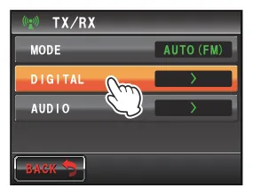</button><figcaption>Figure from page 174. $#%- $#%- 6:4:</figcaption><dialog id="fig-48"><p>Figure from page 174. $#%- $#%- 6:4:</p><form method="dialog"><button>Close</button></form></dialog></figure><p><strong>4</strong> Touch <strong>[1 AMS TX MODE]</strong> to select the AMS transmit
mode.
The AMS transmit mode changes in the following
order each time the symbol is touched.
TX M: The operating mode is automatically selected</p>
<p>from four communication modes to match
the received signal. Pressing the Microphone</p>
<p>[PTT] momentarily, toggles between the Digital
and Analog communication modes.</p>
<p>TX FM FIXED: The RX mode is automatically selected from the four communication</p>
<p>modes to match the received signal. The TX mode is automatically
changed to the “FM” mode.
TX DN FIXED: The RX mode is automatically selected from the four communication</p>
<p>modes to match the received signal. The TX mode is automatically
changed to the “DN” mode.
TX VW FIXED: The RX mode is automatically selected from the four communication</p>
<p>modes to match the received signal. The TX mode is automatically
changed to the “VW” mode.
AUTO: The RX and TX operating mode is automatically selected from the four</p>
<p>communication modes to match the received signal.</p>
<p>~~Tips~~ - Factory default value: TX M</p>
<pre><code> -  Blink “ [▂] ” : TX M
</code></pre>
<p>Blink “ ○○ [▂]</p>
<p>Blink “ ○○” : TX FM FIXED / TX DN FIXED / TX VW FIXED</p>
<p>“ ○○ [▂] ” : AUTO</p>
<p>“ ○○” : AUTO</p>
<pre><code>  - The ○○ symbol display differs according to the received signal.
</code></pre>
<p>The AMS transmit mode will be set and the display will return to the previous screen.</p>
<p><strong>Setting the squelch type of the digital mode</strong></p>
<p>The squelch type in the digital mode can be set.</p>
<p>The set-up menu will be displayed.
<strong>2</strong> Touch <strong>[TX/RX]</strong></p><p><strong>4</strong> Touch <strong>[2 SQL TYPE]</strong>
The squelch type changes in the following order each
time the symbol is touched.
“OFF” → “CODE” → “BREAK”
OFF: There will always be audio output when a digital</p>
<p>signal of a YAESU transceiver is received.
CODE: Audio will only be output when the received</p>
<p>signals have a matching SQL CODE.
BREAK: Regardless of the CODE setting, audio will</p>
<p>be output when the partner station transmits
using the BREAK setting.</p>
<p>~~Tip~~ Factory default value: OFF</p>
<p>The squelch type will be set and the display will return to the previous screen.</p>
<p><strong>Setting the squelch code of the digital mode</strong></p>
<p>A squelch code may be set in the digital mode.</p>
<p>The set-up menu will be displayed.
<strong>2</strong> Touch <strong>[TX/RX]</strong></p>
<p><strong>4</strong> Select and touch <strong>[3 SQL CODE]</strong>
The characters of the set value will turn orange in
color.</p><p>~~Tips~~   - The code can be selected from 001 to 126.</p>
<pre><code>  - Factory default value: 001
</code></pre>
<p><strong>6</strong> Touch <strong>[3 SQL CODE]</strong>
The characters of the set value will turn green in color.</p>
<p>The squelch code will be set and the display will return to the previous screen.</p>
<p><strong>Setting the pop-up time for the partner station information</strong></p>
<p>The time that partner station information such as the call sign is displayed can be set.</p>
<p>The set-up menu will be displayed.</p>
<p><strong>4</strong> Touch <strong>[4 DIGITAL POPUP TIME]</strong> to select the popup time
The pop-up time changes in the following order each
time the symbol is touched.
“OFF” “2sec” “4sec” “6sec” “8sec” “10sec” “20sec”
“30sec” “60sec” “CONTINUE”</p>
<p>~~Tip~~ Factory default value: 10 sec</p>
<p>The pop-up time will be set and the display will return to the previous screen.</p><p><strong>Setting the display method for my position</strong></p>
<p>Refer to the separate Operating Manual GM Edition (download the manual from the
YAESU website).</p>
<p><strong>Setting the Standby Beep</strong></p>
<p>When communicating in a digital mode, a beep is sounded after the end of the other
stations transmission.</p>
<p>The set-up menu will be displayed.</p>
<p><strong>4</strong> Touch <strong>[6 STANDBY BEEP]</strong> to select OFF/ON
The setting will switch between “ON” and “OFF” each
time the symbol is touched.
OFF: Disable the STANDBY BEEP feature.
ON: Enable the STANDBY BEEP feature.</p>
<p>~~Tip~~ Factory default value: ON</p>
<p>The display will return to the previous screen.</p>
<p><strong>Displaying the version of the DSP program</strong></p>
<p>The version of the DSP program in the digital unit inside the radio can be checked.</p>
<p>The set-up menu will be displayed.
<strong>2</strong> Touch <strong>[TX/RX]</strong>
<strong>3</strong> Touch <strong>[DIGITAL]</strong>
<strong>4</strong> Touch <strong>[7 DSP VERSION]</strong>
The version of the DSP program will be displayed.</p>
<p>The display will return to the previous screen.</p><p><strong>Setting the sub-band mute</strong></p>
<p>The receive audio of the sub-band can be automatically muted when receiving signals in
the main band.</p>
<p>The set-up menu will be displayed.</p>
<p><strong>3</strong> Touch <strong>[AUDIO]</strong></p>
<p><strong>4</strong> Touch <strong>[1 SUB BAND MUTE]</strong> to select OFF/ON
The setting will switch between “ON” and “OFF” each
time the symbol is touched.
OFF: The sub-band audio will not be muted when a</p>
<p>signal is received on the main band.
ON: The sub-band audio will be muted when a signal</p>
<p>is received on the main band.</p>
<p>~~Tip~~ Factory default value: OFF</p>
<p>The sub-band mute will be set and the display will return to the previous screen.</p>
<p><strong>Setting the sensitivity of the microphone</strong></p>
<p>The sensitivity (gain) of the microphone can be adjusted.
Refer to “Adjusting the sensitivity of the microphone” ( P.50) for details.</p>
<p>~~<strong>Memory channel settings</strong>~~</p>
<p><strong>Setting the display method for the memory tag</strong></p>
<p>The display format for the name and frequency assigned to a memory can be selected
for each channel.
Refer to “Changing the display format of the memory tag” ( P.68) for details.</p>
<p><strong>Setting the memory scan method</strong></p>
<p>The memory scan can be set to scan for all memory channels or only specified memory
channels</p><p>~~<strong>Tone signal settings</strong>~~</p>
<p><strong>Setting the squelch tone frequency (CTCSS)</strong></p>
<p>The tone frequency can be set. Refer to “Setting the tone frequency” ( P.102) for details.</p>
<p><strong>Setting the DCS code</strong></p>
<p>The DCS code can be set. Refer to “Setting the DCS code” ( P.104) for details.</p>
<p><strong>Setting the transmission method of the DTMF code</strong></p>
<p>The transmission method of the registered DTMF code can be set.
Refer to “Transmitting registered DTMF code” ( P.113) for details.</p>
<p><strong>Registering the DTMF code</strong></p>
<p>Telephone numbers used when connecting to a public line from a phone patch can be
registered using a DTMF code up to a maximum of 16 digits.
Refer to “Registering the DTMF code” ( P.112) for details.</p>
<p><strong>Recalling only specified stations</strong></p>
<p>The function for calling only specified stations using the pager code can be set.
Refer to “Using the pager function” ( P.106) for details.</p>
<p><strong>Setting the user programmed reverse CTCSS tone</strong></p>
<p>The frequency of the user programmed reverse CTCSS tone squelch can be set at100 Hz
intervals between 300 Hz and 3000 Hz</p>
<p>The set-up menu will be displayed.</p>
<p><strong>3</strong> Select and touch <strong>[6 PRG REV TONE]</strong>
The characters of the set value will turn orange in
color.</p><figure><button aria-label="Enlarge Figure from page 180. 24)4'8610' 2#)'4%1&amp;'" class="zoom" data-dialog="fig-49" type="button">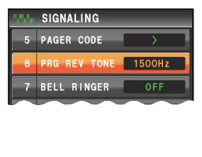</button><figcaption>Figure from page 180. 24)4'8610' 2#)'4%1&amp;'</figcaption><dialog id="fig-49"><p>Figure from page 180. 24)4'8610' 2#)'4%1&amp;'</p><form method="dialog"><button>Close</button></form></dialog></figure><p>~~Tip~~ Factory default value: 1500 Hz
<strong>5</strong> Touch <strong>[6 PRG REV TONE]</strong>
The characters of the set value will turn green in color.</p>
<p><strong>Using the bell Notification of an incoming call from a partner station using the bell</strong></p>
<p>Notification of an incoming call from a partner station can be provided by a bell sound.
Refer to “Using the bell to notify an incoming call by a partner” ( P.110) for details.</p>
<p><strong>Setting the squelch type separately for transmit and receive</strong></p>
<p>Different squelch types can be used for transmit and receive.</p>
<p>The set-up menu will be displayed.
<strong>2</strong> Touch <strong>[SIGNALING]</strong></p>
<p><strong>3</strong> Touch <strong>[8 SQL EXPANSION]</strong> to select OFF/ON
The setting will switch between “OFF” and “ON” each
time it is touched.
OFF: Use the same squelch for transmit and receive.
ON: Use different squelch for transmit and receive.</p>
<p>Refer to “Other squelch functions”( P.110) for
details.</p>
<p>~~Tip~~ Factory default value: OFF</p>
<p>The squelch type when transmitting and receiving will be set and the display will
return to the previous screen</p><p><strong>Setting the weather alert operation (USA Version Only)</strong></p>
<p>The reception of the weather alert can be disabled.</p>
<p>The set-up menu will be displayed.
<strong>2</strong> Touch <strong>[SIGNALING]</strong></p>
<p><strong>3</strong> Touch <strong>[9 WX ALERT]</strong> to select OFF/ON
The setting will switch between “OFF” and “ON” each
time it is touched.
OFF: The weather alert will not be received.
ON: The weather alert will be received.</p>
<p>~~Tip~~ Factory default value: OFF</p>
<p>The weather alert operation will be set and the display will return to the previous
screen.</p>
<p>~~<strong>Scan settings</strong>~~</p>
<p><strong>Setting the signal reception method</strong></p>
<p>The reception method when a signal is picked up in the home channel can be set.
Refer to “Setting the signal reception method” ( P.82) for details.</p>
<p><strong>Setting the scanning direction</strong></p>
<p>The scanning direction can be set to scan for increasing or decreasing frequencies or
memory channel numbers.</p>
<p>The set-up menu will be displayed.</p><p><strong>3</strong> Touch <strong>[2 SCAN DIRECTION]</strong> to select the scanning
direction
The setting will switch between “UP” and “DOWN”
each time it is touched.
UP: Scan for increasing frequencies or memory</p>
<p>channel numbers.
DOWN: Scan for decreasing frequencies or memory</p>
<p>channel numbers.</p>
<p>~~Tip~~ Factory default value: UP</p>
<p>The scanning direction will be set and the display will return to the previous screen.</p>
<p><strong>Setting the receive operation when the scanning stops</strong></p>
<p>The reception method when the scanning stops can be set.
Refer to “Setting the receive operation when the scanning stops” ( P.73) for details.</p>
<p>~~<strong>Group monitor function settings</strong>~~</p>
<p>The GM (group monitor) function automatically checks to find if there are any registered
group members within communication range.
Refer to the separate Operating Manual GM Edition for further details (download the
operating manual from the YAESU website).</p>
<p>~~<strong>Settings on the functions and configuration</strong>~~</p>
<p><strong>Setting the date and time</strong></p>
<p>The date and time of the radio can be set.
Refer to “Adjusting the data and time” ( P.56) for details.</p><p><strong>Setting the display format for the date and time</strong></p>
<p>The display format of the clock inside the radio can be changed as follows.</p>
<p>··Date format: Month/Day/Year format, Year/Month/Day format, Day/Month/Year
format, Year/Day/Month format
··Time format: 24 hours format, 12 hours format</p>
<p>The set-up menu will be displayed.</p>
<p><strong>3</strong> Touch <strong>[2 DATE &amp; TIME FORMAT]</strong>
The display setting screen for the date and time will
be displayed.</p>
<p><strong>4</strong> Touch <strong>[DATE]</strong>
The display setting screen for the date will be
displayed.</p>
<p><strong>5</strong> Touch the format to be displayed
Touch and select the date format to be displayed.
mmm/dd/yyyy: Display in Month/Day/Year format.
yyyy/mmm/dd: Display in Year/Month/Day format.
dd/mmm/yyyy: Display in Day/Month/Year format.
yyyy/dd/mmm: Display in Year/Day/Month format.</p>
<p>~~Tip~~ Factory default value: mmm/dd/yyyy</p>
<p>The setting will switch between “24 hour” and “12</p><p>The display format for the date and time will be set and the display will return to the
previous screen.</p>
<p><strong>Setting the time zone</strong></p>
<p>The time of the clock inside the radio can be synchronized with the time in the time data
(Coordinated Universal Time) from the GPS.
The time zone can be set at 0.5 hour intervals up to ±14 hours.</p>
<p>The set-up menu will be displayed.</p>
<p><strong>3</strong> Select and touch <strong>[3 TIME ZONE]</strong>
The characters of the set value will turn orange in
color.</p>
<p>~~Tip~~ Factory default value: UTC+0:00
<strong>5</strong> Touch <strong>[3 TIME ZONE]</strong>
The characters of the set value will turn green in
color.</p>
<p>The time zone will be set and the display will return to the previous screen.</p><p><strong>Setting the auto repeater shift</strong></p>
<p>When communicating using the repeater, the repeater auto shift function automatically
shifts the transmit frequency to match the repeater input frequency This allows the
repeater to be used by simply tuning the FTM-400DR/DE to the repeater output
frequency This setting may turned ON or OFF.</p>
<p>The set-up menu will be displayed.</p>
<p><strong>3</strong> Touch <strong>[4 AUTO RPT SHIFT]</strong> to select ON/OFF
The setting will switch between “ON” and “OFF” each
time it is touched.
ON: The auto repeater shift function will be switched</p>
<p>on.
OFF: The auto repeater shift function will be switched</p>
<p>off.</p>
<p>~~Tip~~ Factory default value: ON</p>
<p>The auto repeater shift will be set and the display will return to the previous screen.</p>
<p><strong>Setting the direction of the repeater shift</strong></p>
<p>The direction of the repeater shift function can be set.</p>
<p>The set-up menu will be displayed.
<strong>2</strong> Touch <strong>[CONFIG]</strong></p><figure><button aria-label="Enlarge Figure from page 186. $#%- $#%- 6:4:" class="zoom" data-dialog="fig-50" type="button">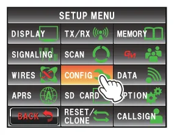</button><figcaption>Figure from page 186. $#%- $#%- 6:4:</figcaption><dialog id="fig-50"><p>Figure from page 186. $#%- $#%- 6:4:</p><form method="dialog"><button>Close</button></form></dialog></figure><p><strong>3</strong> Touch <strong>[5 RPT SHIFT]</strong> to select the shift direction
The setting will switch between “OFF”, “-” and “+”
each time it is touched.
OFF: The transmit frequency will not shift.
-: The transmit frequency will shift down.
+: The transmit frequency will shift up.</p>
<p>~~Tip~~ Factory default value: Differs depending on frequency</p>
<p>The direction of the repeater shift will be set and the display will return to the
previous screen.</p>
<p><strong>Setting the shift width of the repeater</strong></p>
<p>The offset frequency of the repeater shift function can be set.</p>
<p>The set-up menu will be displayed.
<strong>2</strong> Touch <strong>[CONFIG]</strong></p>
<p><strong>3</strong> Select and touch <strong>[6 RPT SHIFT FREQ]</strong>
The characters of the set value will be displayed in
orange color.</p>
<p>~~Tip~~ Factory default value: Differs depending on frequency</p><p><strong>5</strong> Touch <strong>[6 RPT SHIFT FREQ]</strong>
The characters of the set value will turn green in
color.</p>
<p>previous screen.</p>
<p><strong>Setting the frequency step</strong></p>
<p>The change in the frequency when the tuning knob is turned, or when the key is pressed
can be set.
Refer to “Changing the frequency step” ( P.41) for details.</p>
<p><strong>Setting the volume of the beep</strong></p>
<p>The confirmation sound (beep) that goes off when a key is pressed can be changed.
Refer to “Changing the beep volume” ( P.54) for details.</p>
<p><strong>Setting the clock shift of the CPU</strong></p>
<p>The clock signal of the CPU can be changed so that it is not heard as an internal
spurious signal by the receiver. Select “A” during normal operation.</p>
<p>The set-up menu will be displayed.</p><p><strong>3</strong> Touch <strong>[9 CLOCK TYPE]</strong> to set the clock type
The setting switches between “A” and “B” each time
it is touched.
A: The clock shift operation will automatically switch</p>
<p>on and off.
B: The clock shift will be kept in operation at all</p>
<p>times.</p>
<p>~~Tip~~ Factory default value: A</p>
<p>The clock shift type will be set and the display will return to the previous screen.</p>
<p><strong>Setting the program key of the microphone</strong></p>
<p>Functions can be assigned to the program keys (P1 to P4) of the provided microphone
(MH-48).</p>
<p>The set-up menu will be displayed.</p>
<p><strong>3</strong> Touch <strong>[10 MIC PROGRAM KEY]</strong>
The setting screen for the microphone program key
will be displayed.</p>
<p><strong>4</strong> Touch the program key (P1 to P4) where the function
is going to be assigned
The functions that can be assigned will be displayed.
When the function you want to assign is not</p>
<p><strong>5</strong> Touch and select the function that you want to assign</p><p><strong>6</strong> Touch <strong>[BACK]</strong>
The display will return to the selection screen for the
program keys (P1 to P4).</p>
<p><strong>7</strong> Set other program keys
Repeat Steps 4 to 6 to set the functions to be assigned to other program keys.</p>
<p>The function will be assigned to the program key and the display will return to the
previous screen.</p>
<p>~~Tip~~ Factory default value: P1: SQL OFF (T-CALL: European version)</p>
<p>P2: HOME
P3: D_X
P4: TX POWER</p>
<p><strong>Expanding the receive range</strong></p>
<p>The frequency can be set to receive frequencies such in the air band (108 to 137 MHz)
and the information wireless band (174 to 400 MHz, 480 to 999.99 MHz) as well.</p>
<p>The set-up menu will be displayed.</p>
<p><strong>3</strong> Touch <strong>[11 RX COVERAGE]</strong> to set the receive range
The setting switches between “NORMAL” and
“WIDE” each time it is touched.
NORMAL: Receives only the 144 MHz and the 430</p>
<p>MHz bands.
WIDE: Receives the air band and the information</p>
<p>wireless band as well.</p>
<p>~~Tip~~ Factory default value: NORMAL</p>
<p>The receive range will be set and the display will return to the previous screen.</p><p><strong>Setting the unit display</strong></p>
<p>The unit to be used when displaying the altitude, distance and speed can be set.</p>
<p>The set-up menu will be displayed.</p>
<p><strong>3</strong> Touch <strong>[12 UNIT]</strong> to set the unit
The setting switches between “METRIC” and “INCH”
each time it is touched.
METRIC: Displays the unit using the metric system.
INCH: Displays the unit using the inch system.</p>
<p>~~Tip~~ Factory default value: Depends on the transceiver
version</p>
<p>The display unit will be set and the display will return to the previous screen.</p>
<p><strong>Switching the power off automatically</strong></p>
<p>The radio can be set to switch the power off automatically when there is no operation for
a period of time.
Refer to “Using the APO function” ( P.119) for details.</p>
<p><strong>Limiting the continuous transmission time</strong></p>
<p>The radio can be set to return to the reception mode automatically after a time specified
in advance has passed in the transmit mode.
Refer to “Using the TOT function” ( P.120) for details.</p>
<p><strong>Setting the PIN code of the optional Bluetooth headset</strong></p>
<p>The headset that you are using can be paired with the optional Bluetooth unit mounted
in the radio.
Refer to “Setting the PIN code of the Bluetooth headset” ( P.137) for details.</p><p><strong>Setting the geodetic reference system of the GPS function</strong></p>
<p>The geodetic reference system which serves as the positioning standard of the GPS
function can be set.</p>
<p>The set-up menu will be displayed.</p>
<p><strong>3</strong> Touch <strong>[16 GPS DATUM]</strong> to set the geodetic
reference system
The setting switches between “WGS-84” and
“TOKYO MEAN” each time it is touched.
WGS-84: Positions using the global geodetic</p>
<p>reference system. This is being used as a
standard all around the world.
TOKYO MEAN: Positions using the Japanese</p>
<p>geodetic reference system. When
positioning in Japan (Tokyo), the
error can be made smaller.</p>
<p>~~Tip~~ Factory default value: WGS-84</p>
<p>The geodetic reference system of the GPS function will be set and the display will
return to the previous screen.</p>
<p><strong>Positioning using the external GPS device</strong></p>
<p>This is set when connecting an external GPS reception device.
Refer to “Positioning using an external GPS device” ( P.84) for details.</p>
<p><strong>Setting the interval for recording the GPS position information</strong></p>
<p>The time interval for recording your own position information in the micro-SD card can
be set.
Refer to “Recording the position information (GPS log function)” ( P.89) for details.</p><p>~~<strong>Data communication settings</strong>~~</p>
<p><strong>Setting the COM port</strong></p>
<p>The communication speed and function when using the [DATA] jack at the back of the
main body as a COM port can be set.</p>
<p>The set-up menu will be displayed.</p>
<p><strong>3</strong> Touch <strong>[1 COM PORT SETTING]</strong>
The screen for the detailed settings will be displayed.</p>
<p><strong>4</strong> Touch <strong>[SPEED]</strong> to select the communication speed
of the COM port
The setting changes as follows each time it is
touched.
“4800 bps” → “9600 bps” → “19200 bps” →
“38400 bps” → “57600 bps”</p>
<p>~~Tip~~ Factory default value: 9600 bps</p><p><strong>5</strong> Touch <strong>[OUTPUT]</strong> to select the output function of the
COM port
The setting changes as follows each time it is
touched.
“OFF(camera)” → “GPS OUT” → “PACKET” →
“WAYPOINT”
OFF (camera): The output function of the COM port</p>
<p>is not used (invalid operation).
GPS OUT: Outputs the GPS data obtained by the</p>
<p>radio.
PACKET: Outputs the AX.25 packet communication</p>
<p>data received using the in-built modem
function.
WAYPOINT: Outputs the position information of</p>
<p>other station beacons obtained from the
APRS packets received as WAYPOINT
data.</p>
<p>~~Tip~~ Factory default value: OFF (camera)</p>
<p><strong>6</strong> Touch <strong>[WP FORMAT]</strong> to select the data format
This sets the number of digits in the call sign
information of the APRS beacon station appended
to each data when “WAYPOINT” is selected in Step
5 (the data will be output using the NMEA-0183
$GPWPL format).
The setting changes as follows each time it is
touched.
“NMEA 9” → “NMEA 8” → “NMEA 7” → “NMEA 6”
NMEA 9: The call sign will be limited to 9 digits on the</p>
<p>right (Example: The call sign information for
JQ1YBG-14 is “JQ1YBG-14”).
NMEA 8: The call sign will be limited to 8 digits on the</p>
<p>right (Example: The call sign information for
JQ1YBG-14 is “Q1YBG-14”).
NMEA 7: The call sign will be limited to 7 digits on the</p>
<p>right (Example: The call sign information for
JQ1YBG-14 is “1YBG-14”).
NMEA 6: The call sign will be limited to 6 digits on the</p>
<p>right (Example: The call sign information for
JQ1YBG-14 is “YBG-14”).</p>
<p>~~Tip~~ Factory default value: NMEA 9</p><p><strong>7</strong> Touch <strong>[WP FILTER]</strong> to select the forwarding content
This sets the type of beacon that you would like to
output when “WAYPOINT” is selected in Step 5.
The setting changes as follows each time it is
touched.
“ALL” → “MOBILE” → “FREQUENCY” → “OBJECT/
ITEM” → “DIGIPEATER” → “VoIP”→ “WEATHER” →
“YAESU” → “CALL RINGER” → “RNG RINGER”
ALL: Outputs all beacons received.
MOBILE: Outputs only mobile stations.
FREQUENCY: Outputs only the stations with</p>
<p>frequency information.
OBJECT/ITEM: Outputs only the object station or</p>
<p>item station.
DIGIPEATER: Outputs only the digital repeater</p>
<p>station.
VoIP: Outputs only VoIP stations such as WIRES.
WEATHER: Outputs only the weather station.
YAESU: Outputs only stations which are using Yaesu</p>
<p>transceivers.
CALL RINGER: Outputs only the information of the</p>
<p>call sign ringer station set using</p>
<p><strong>[10 APRS RINGER (CALL)]</strong> in the
APRS set-up menu.
RNG RINGER: Outputs only the information of</p>
<p>the station deemed to be the
approaching station using the</p>
<p><strong>[9 APRS RINGER]</strong> range ringer
function in the APRS set-up menu.</p>
<p>~~Tip~~ Factory default value: ALL</p>
<p>The COM port will be set and the display will return to the previous screen.</p><p><strong>Setting the operating band of the APRS and data communication</strong></p>
<p>The operating band of the APRS (internal modem) and data communication (when using
the [DATA] jack at the back of the main body) can be set.</p>
<p>The set-up menu will be displayed.</p>
<p><strong>3</strong> Touch <strong>[2 DATA BAND SELECT]</strong>
The screen for the detailed settings will be displayed.</p>
<p><strong>4</strong> Touch <strong>[APRS]</strong> to select the APRS operating band
The setting changes as follows each time it is
touched.
“A-BAND FIX” → “B-BAND FIX” → “A=TX/B=RX” →
“A=RX/B=TX” → “MAIN BAND” → “SUB BAND”
A-BAND FIX: The upper band will be selected.
B-BAND FIX: The lower band will be selected.
A=TX/B=RX: Transmits using the upper band and</p>
<p>receives using the lower band.
A=RX/B=TX: Receives using the upper band and</p>
<p>transmits using the lower band.
MAIN BAND: The main band will be selected.
SUB BAND: The sub-band will be selected.</p>
<p>~~Tip~~ Factory default value: B-BAND FIX</p>
<p><strong>5</strong> Touch <strong>[DATA]</strong> to select the data transmission
operating band
Repeat Step 4 to set the data communication
operating band.</p>
<p>~~Tip~~ Factory default value: B-BAND FIX</p>
<p><strong>6</strong> Press for one second or longer</p><p><strong>Setting the baud rate of the APRS and data communication</strong></p>
<p>The baud rate of the APRS (internal modem) and data communication (when using the</p>
<p>[DATA] jack at the back of the main body) can be set.</p>
<p>The set-up menu will be displayed.</p>
<p><strong>3</strong> Touch <strong>[3 DATA SPEED]</strong>
The screen for the detailed settings will be displayed.</p>
<p><strong>4</strong> Touch <strong>[APRS]</strong> to select the packet communication
speed
The setting will switch between “1200 bps” and “9600
bps” each time it is touched.
1200 bps: Sets the speed as AFSK 1200 bps packet.
9600 bps: Sets the speed as GMSK 9600 bps
packet.</p>
<p>~~Tip~~ Factory default value: 1200 bps</p>
<p><strong>5</strong> Touch <strong>[DATA]</strong> to select the data communication
speed
Repeat Step 4 to set the data communication speed.</p>
<p>~~Tip~~ Factory default value: 1200 bps</p>
<p>The baud rate of the APRS and data communication will be set and the display will
return to the previous screen.</p><p><strong>Setting the output condition of the squelch detection and squelch terminal</strong></p>
<p>The squelch detection condition during APRS (internal modem) operation and squelch
terminal output condition of the data communication (when using the [DATA] jack at the
back of the main body) can be set.</p>
<p>The set-up menu will be displayed.</p>
<p><strong>3</strong> Touch <strong>[4 DATA SQUELCH]</strong>
The screen for the detailed settings will be displayed.</p>
<p><strong>4</strong> Touch <strong>[APRS]</strong> to select the squelch detection
condition during APRS operation using the internal
modem
The setting switches between “RX BAND” and “TX/
RX BAND” each time it is touched.
RX BAND: Transmission is not possible when the</p>
<p>receive band squelch is open.
TX/RX BAND: Transmission is not possible when</p>
<p>either the receive band or transmit
band squelch is open.</p>
<p>~~Tip~~ Factory default value: RX BAND</p>
<p><strong>5</strong> Touch <strong>[DATA]</strong> to select the output condition (during
reception) related to the squelch terminal inside the</p>
<p>[DATA] jack
The setting switches between “RX BAND” and “TX/
RX BAND” each time it is touched.
RX BAND: The SQL terminal becomes active when</p>
<p>the receive band squelch is open.
TX/RX BAND: The SQL terminal becomes active</p>
<p>when either the receive band or
transmit band squelch is open</p><p><strong>6</strong> Touch <strong>[TX]</strong> to select the output condition (during
transmission) related to the squelch terminal inside
the [DATA] jack
Each time this is touched, the setting will switch
between “ON” and “OFF”.
ON: The SQL terminal becomes active during</p>
<p>transmission.
OFF: The SQL terminal does not become active</p>
<p>during transmission.
•• The action to be taken when the reception band
specified using <strong>[DATA]</strong> under <strong>[2 DATA BAND</strong>
<strong>SELECT]</strong> in the DATA set-up menu is ready to
transmit is set here.
•• When this is set to ON, transmission of external
devices such as TNC can be suppressed during
transmission.</p>
<p>~~Tip~~ Factory default value: ON</p>
<p>The APRS and data communication squelch will be set and the display will return to
the previous screen.</p>
<p>~~<strong>APRS function settings</strong>~~</p>
<p>The APRS function of the radio is a data communication system for data such as
messages and station position using the APRS format.
Refer to the separate Operating Manual APRS Edition for details (download the manual
from the YAESU website).</p>
<p>~~<strong>Micro-SD card settings</strong>~~</p>
<p><strong>Writing settings to the micro-SD card</strong></p>
<p>Using a micro-SD card, the memory channels registered in the radio and the settings in
the set-up menu can be copied to another FTM-400DR/DE.
The settings saved in the micro-SD card can also be downloaded into the radio.
Refer to “Copying the Radio Data to another transceiver” ( P.151) for details.</p><p><strong>Writing group IDs to the micro-SD card</strong></p>
<p>The group ID information registered in the radio can be written to a micro-SD card.
The group ID information saved in the micro-SD card can also be downloaded into the
radio.
Refer to the separate Operating Manual GM Edition for further details (download the
operating manual from the YAESU website).</p>
<p><strong>Initializing the micro-SD card</strong></p>
<p>Initialize the memory card when using a new micro-SD card.
Refer to “Initializing the micro-SD card” ( P.35) for details.</p>
<p>~~<strong>Optional device settings</strong>~~</p>
<p><strong>Setting the image of the connected speaker microphone with camera</strong></p>
<p>The image size and quality when taking pictures with the connected speaker
microphone with a camera (MH-85A11U) can be set.</p>
<p>The set-up menu will be displayed.</p>
<p><strong>3</strong> Touch <strong>[1 USB CAMERA]</strong>
The screen for setting the image will be displayed.</p>
<p>•• PICTURE SIZE: Sets the size of the picture to be
taken.
•• PICTURE QUALITY: Sets the quality of the picture
to be taken.</p>
<p><strong>4</strong> Touch <strong>[PICTURE SIZE]</strong> to set the picture size
The setting changes between “160 ✽ 120” and
“320 ✽ 240” each time it is touched.</p>
<p>~~Tip~~   - Factory default value: 320 ✽ 240 (unit: pixel)</p>
<ul>
<li>It takes about 30 seconds to sending a picture in the</li>
</ul><p><strong>5</strong> Touch <strong>[PICTURE QUALITY]</strong> to set the picture quality
The setting will change in the following order each
time it is touched.
“LOW (low resolution)” → “NORMAL” → “HIGH (high
resolution)”</p>
<p>The camera image will be set and the display will return to the previous screen.</p>
<p><strong>Setting the operation of the Bluetooth headset</strong></p>
<p>By mounting the Bluetooth unit to the radio and using a Bluetooth headset, audio can be
received and sent wirelessly.
Refer to “Using the Bluetooth headset” ( P.134) for details.</p>
<p><strong>Setting the voice memory operation</strong></p>
<p>By mounting the voice guide unit to the radio, audio that is received or picked up by the
microphone can be recorded and then played back or erased later.
Refer to “Using the voice memory” ( P.146) for details.</p>
<p>~~<strong>Initialization and saving settings</strong>~~</p>
<p><strong>Reconfiguring the settings</strong></p>
<p>The settings and memory of the radio can be returned to the default factory settings.
Refer to “Reconfiguring the Settings” ( P.61) for details.</p>
<p><strong>Registering the preset</strong></p>
<p>Current settings such as the frequency and memory channels can be registered in a
single preset.</p>
<p>The set-up menu will be displayed.</p><p><strong>3</strong> Touch <strong>[2 PRESET]</strong>
The screen for confirming the preset registration will
be displayed.</p>
<p><strong>4</strong> Touch <strong>[OK?]</strong>
The preset will be registered.
When canceling the registration, touch <strong>[Cancel]</strong> .</p>
<p>The display will return to the previous screen.</p>
<p><strong>Recalling the registered preset</strong></p>
<p>The registered preset can be recalled from the set-up menu.</p>
<p>The set-up menu will be displayed.
<strong>2</strong> Touch <strong>[RESET/CLONE]</strong></p>
<p><strong>3</strong> Touch <strong>[3 RECALL PRESET]</strong>
The screen for confirming the recall of the registered
preset will be displayed.</p>
<p><strong>4</strong> Touch <strong>[OK?]</strong>
The registered preset will be recalled and the display
will return to the previous screen.
When canceling the recall, touch <strong>[Cancel]</strong> .</p><p><strong>Sorting the registered memory channels</strong></p>
<p>The memory channels registered in the radio can be sorted in the ascending order.</p>
<p>The set-up menu will be displayed.</p>
<p><strong>3</strong> Touch <strong>[5 MEM CH SORT]</strong>
The screen for confirming the sorting of the memory
channels will be displayed.</p>
<p><strong>4</strong> Touch <strong>[OK?]</strong>
The memory channels will be sorted starting from the
lowest frequencies.
When canceling the sorting, touch <strong>[Cancel]</strong> .</p>
<p><strong>5</strong> The radio will start up again
The power will be switched off once and then it will be switched on automatically.</p>
<p><strong>Copying saved data</strong></p>
<p>All the data saved in the radio can be copied directly to another FTM-400DR/DE.
Refer to “Using the clone function” ( P.153) for details.</p><p>~~<strong>Call sign settings</strong>~~</p>
<p><strong>Changing the call sign</strong></p>
<p>You can change your own call sign set in the radio.</p>
<p>The set-up menu will be displayed.
<strong>2</strong> Touch <strong>[CALLSIGN]</strong>
The current call sign will be displayed.</p>
<p><strong>3</strong> Touch <strong>[CHANGE]</strong>
The character input screen will be displayed.</p>
<p><strong>4</strong> Touch a character key
The touched character will be displayed at the top of
the screen.</p>
<p>~~Tips~~   - Up to 10 characters of alphabets, numerics, and a</p>
<p>hyphen can be entered.</p>
<pre><code>  - Refer to Page 23 on how to operate the character input
</code></pre>
<p>screen.</p>
<p><strong>5</strong> Touch <strong>[ENT]</strong></p>
<p><strong>6</strong> Touch <strong>[BACK]</strong></p><figure><button aria-label="Enlarge Figure from page 204. $#%- $#%- 6:4:" class="zoom" data-dialog="fig-51" type="button">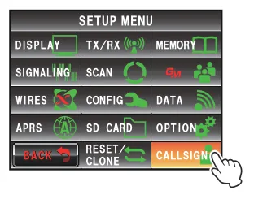</button><figcaption>Figure from page 204. $#%- $#%- 6:4:</figcaption><dialog id="fig-51"><p>Figure from page 204. $#%- $#%- 6:4:</p><form method="dialog"><button>Close</button></form></dialog></figure><figure><button aria-label="Enlarge Figure from page 204. $#%- $#%- %*#0)' %#..5+)0" class="zoom" data-dialog="fig-52" type="button">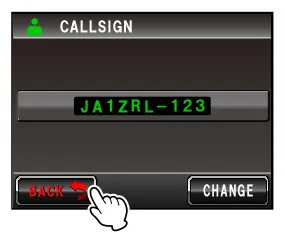</button><figcaption>Figure from page 204. $#%- $#%- %*#0)' %#..5+)0</figcaption><dialog id="fig-52"><p>Figure from page 204. $#%- $#%- %*#0)' %#..5+)0</p><form method="dialog"><button>Close</button></form></dialog></figure><p>The call sign will be set and the display will return to the previous screen.</p><p>➀ PC connection cable (SCU-20)</p>
<p>*Same as the one provided
➁ Cloning cable (CT-166)
➂ Voice guide unit (FVS-2)
➃ Bluetooth unit (BU-2)
➄ Control cable (CT-162)
➅ Controller bracket (MMB-98)
➆ Water proof (equivalent to IP55) high power</p>
<p>➇ Speaker microphone with camera</p>
<p>(MH-85A11U)
➈ Microphone extension kit (MEK-2)
➉ Hand Microphone (MH-42C6J)
DTMF Microphone (MH-48A6JA)</p>
<p>(BH-2A)
Charging cradle for BH-2A (CD-40)
Battery charger for CD-40 (PA-46)</p>
<p>*Same as the one provided
Water proof Bluetooth headset (monaural)</p>
<p>external speaker (MLS-200-M10)</p>
<p>zz Data cable (CT-163): DIN 10 pin ←→ DIN 6 pin + Dsub 9 pin</p>
<p>zz Data cable (CT-164): DIN 10 pin ←→ DIN 6 pin</p>
<p>zz Data cable (CT-165): DIN 10 pin ←→ Dsub 9 pin</p>
<p>zz Data cable (CT-167): DIN 10 pin ←→ Split end (10 pin)</p><figure><button aria-label="Enlarge Figure from page 206. ’ “" class="zoom" data-dialog="fig-53" type="button"></button><figcaption>Figure from page 206. ’ “</figcaption><dialog id="fig-53"><p>Figure from page 206. ’ “</p><form method="dialog"><button>Close</button></form></dialog></figure><p>~~<strong>Care and maintenance</strong>~~</p>
<p>Turn the transceiver OFF before wiping away any dust and stains on the radio using
a dry and soft cloth. For stubborn stains, slightly moisten a soft cloth and wring it hard
before using it to wipe away the stains.</p>
<p>~~Caution~~ Never use washing detergents and organic solvents (thinner, benzene etc.). This may
result in the paint peeling off or the cover being damaged.</p>
<p>~~<strong>Replacing the fuse</strong>~~</p>
<p>Use ONLY the correct rating (15 A) replacement fuse in the DC cable fuse holder.</p>
<p>~~Caution~~ When replacing the fuse, disconnect the power supply cable from the radio and from the
external DC power supply.</p>
<ul>
<li><strong>●Replacing the fuse of the DC power supply cable</strong>
<strong>1</strong> Prepare a new fuse
Use a fuse with a rating of 15 A.</li>
</ul>
<p>~~Caution~~ Never use a fuse that is not of the specified rating.</p>
<p>the right</p>
<p><strong>3</strong> Remove the broken fuse</p>
<p><strong>4</strong> Attach the new fuse
<strong>5</strong> Close the fuse holder</p><figure><button aria-label="Enlarge Figure from page 207. Œ Œ" class="zoom" data-dialog="fig-54" type="button"></button><figcaption>Figure from page 207. Œ Œ</figcaption><dialog id="fig-54"><p>Figure from page 207. Œ Œ</p><form method="dialog"><button>Close</button></form></dialog></figure><figure><button aria-label="Enlarge Figure from page 207" class="zoom" data-dialog="fig-55" type="button"></button><figcaption>Figure from page 207</figcaption><dialog id="fig-55"><p>Figure from page 207</p><form method="dialog"><button>Close</button></form></dialog></figure><figure><button aria-label="Enlarge Figure from page 207. European version" class="zoom" data-dialog="fig-56" type="button"></button><figcaption>Figure from page 207. European version</figcaption><dialog id="fig-56"><p>Figure from page 207. European version</p><form method="dialog"><button>Close</button></form></dialog></figure><p>~~<strong>Caution</strong>~~</p>
<p>Check the following before requesting for repair services.</p>
<p><strong>There is no power</strong></p>
<p>zz Is the external power supply connected correctly?</p>
<p>Connect the black wire to the negative (-) terminal and the red wire to the positive (+) terminal.
zz Is the voltage and current capacity of the external power supply sufficient?</p>
<p>Check the voltage (13.8 V) and current capacity (20 A or above) of the external power supply.
zz Is the fuse broken?</p>
<p>Replace the fuse.</p>
<p><strong>There is no sound</strong></p>
<p>zz Is the squelch level or setting too high?</p>
<p>Adjust the squelch level when receiving weak signals.
zz Is the volume low?</p>
<p>Increase the volume by turning the VOL knob in a clockwise direction.
zz Is the tone squelch or DCS turned on?</p>
<p>When the tone squelch or DCS is turned on, no sound will be heard until signals containing the same
tone frequency, or DCS code that have been set are received.
zz Is the external speaker connected?</p>
<p>Connect a speaker with an impedance of 4 to 16 Ω correctly.
zz Is the Bluetooth headset in use?</p>
<p>Disable the use of the headset or use the set-up menu to allow sound to come from both the headset
and the main body speaker.</p>
<p><strong>There is no transmission</strong></p>
<p>zz Is the PTT switch pressed properly?</p>
<p>zz Is the microphone connected correctly?</p>
<p>Plug the connector all the way into the MIC jack.
zz Is the transmission frequency set to the amateur band?</p>
<p>Transmission outside the amateur band is not possible.
zz Is the antenna or co-axial cable broken?</p>
<p>Replace the antenna or co-axial cable.
zz Is the voltage of the external power supply normal?</p>
<p>When the voltage of the power supply drops during transmit, the transceiver may not work properly.
Use a stable DC power supply with a voltage of 13.8 V and a current capacity of 20 A.</p>
<p><strong>The keys or knobs will not operate</strong></p>
<p>zz Is the lock function activated?</p>
<p>Cancel the lock by pressing the POWER / LOCK key.</p><p>~~<strong>About internal spurious signals</strong>~~</p>
<p>Certain frequency combinations of signals received simultaneously, may cause some effect on the receiver
mixer and IF circuits due to the high frequency of the internal oscillator.
However, this is not a malfunction (refer to the calculation formulas below: n is any integer).
Depending on the combination of the frequencies received at the same time, there may also be fluctuations
in the receiver sensitivity</p>
<p>zz Reception frequency = 12.288 MHz x n times zz Reception frequency = 15.6 MHz x n times
zz Reception frequency = 2.4576 MHz x n times zz Reception frequency = 6.1444 MHz x n times
zz Reception frequency = 11.1 MHz x n times zz Reception frequency = 18.432 MHz x n times
zz Upper (Band A) frequency = (Lower (Band B) frequency ± 44.85 MHz) × n times</p>
<p>zz Lower (Band B) frequency = (Upper (Band A) frequency ± 47.25 MHz) × n times @ Upper band</p>
<p>(Band A) MODE = NFM</p>
<p>~~<strong>After-market Services</strong>~~</p>
<p> <strong>The warranty period is 1 year or 2 years from the date of purchase</strong></p>
<p>The warranty certification is enclosed with the product. Breakdowns arising from normal use of the
product in accordance with the instructions in the operating manual shall be repaired free-of-charge
within a period of 1 year (USA, EXP version) or 2 years (European Version) from the date of purchase.
 <strong>Keep the warranty certificate in a safe location</strong></p>
<p>When the warranty certificate is lost, failures which occur during the warranty period will be treated as
chargeable non-warranty claims.
A warranty certificate where necessary information such as the purchase date and the name of the retail
store have not been filled in will also be treated as void. Please ensure that the date of purchase and the
name of the retail store are filled in correctly in the warranty certificate.
 <strong>You may also check with us for any non-warranty repairs</strong></p>
<p>We will repair at your expense if the functions can be maintained after the repair. Please check with the
retail store or Yaesu customer support for more information.
 <strong>Keep the packaging box</strong></p>
<p>When transporting this product for inspection and repair, use the original product packaging box to
prevent accidents and damages during the transport.</p><table>
<thead>
<tr>
<th>● ●General Frequency range</th>
<th>: TX  144 - 146 MHz or 144 - 148 MHz</th>
</tr>
</thead>
<tbody>
<tr>
<td><strong>Frequency range</strong></td>
<td><strong>:</strong> TX   144 - 146 MHz or 144 - 148 MHz</td>
</tr>
<tr>
<td>430 - 440 MHz or 430 - 450 MHz</td>
<td></td>
</tr>
<tr>
<td><strong></strong></td>
<td></td>
</tr>
<tr>
<td><strong>Channel steps</strong></td>
<td></td>
</tr>
<tr>
<td><strong>Emission Type</strong></td>
<td></td>
</tr>
<tr>
<td><strong>Frequency stability</strong></td>
<td></td>
</tr>
<tr>
<td><strong>Antenna impedance</strong></td>
<td></td>
</tr>
<tr>
<td><strong>Supply Voltage</strong></td>
<td></td>
</tr>
<tr>
<td><strong>Current consumption</strong></td>
<td></td>
</tr>
<tr>
<td><strong>Operating temperature</strong></td>
<td></td>
</tr>
<tr>
<td><strong>Case size</strong></td>
<td></td>
</tr>
<tr>
<td><strong>:</strong> RX   108 - 137 MHz (Air Band)</td>
<td></td>
</tr>
<tr>
<td>137 - 174 MHz (144 MHz HAM)</td>
<td></td>
</tr>
<tr>
<td>174 - 400 MHz (GEN1)</td>
<td></td>
</tr>
<tr>
<td>400 - 480 MHz (430 MHz HAM)</td>
<td></td>
</tr>
<tr>
<td>480 - 999.99 MHz (GEN2)</td>
<td></td>
</tr>
<tr>
<td><strong>:</strong> 5/6.25/8.33/10/12.5/15/20/25/50/100 kHz</td>
<td></td>
</tr>
<tr>
<td>(8.33 kHz : only for Air band)</td>
<td></td>
</tr>
<tr>
<td><strong>:</strong> F1D, F2D, F3E, F7W</td>
<td></td>
</tr>
<tr>
<td><strong>:</strong> ±2.5 ppm −4°F to +140°F (−20°C to +60°C)</td>
<td></td>
</tr>
<tr>
<td><strong>:</strong> 50 Ω</td>
<td></td>
</tr>
<tr>
<td><strong>:</strong> Norminal   13.8 V DC, negative ground</td>
<td></td>
</tr>
<tr>
<td><strong>:</strong> 0.5 A (receive)</td>
<td></td>
</tr>
<tr>
<td>11 A (50 W TX, 144 MHz)</td>
<td></td>
</tr>
<tr>
<td>12 A (50 W TX, 430 MHz)</td>
<td></td>
</tr>
<tr>
<td><strong>:</strong> −4°F to +140°F (−20°C to +60°C)</td>
<td></td>
</tr>
<tr>
<td><strong>:</strong> Radio unit: 5.5" (W) × 1.6" (H) × 4.9" (D) (140 × 40 × 125 mm) w/o fan</td>
<td></td>
</tr>
<tr>
<td>Controller: 5.5" (W) × 2.8" (H) × 0.8" (D) (140 × 72 × 20 mm)</td>
<td></td>
</tr>
<tr>
<td></td>
<td></td>
</tr>
<tr>
<td><strong>Weight (approx.)</strong></td>
<td><strong>:</strong> 2.64 lbs (1.2 kg) with radio unit, controller, control cable</td>
</tr>
</tbody>
</table>
<table>
<thead>
<tr>
<th>●●Transmitter</th>
<th>Col2</th>
</tr>
</thead>
<tbody>
<tr>
<td><strong>RF power output</strong></td>
<td></td>
</tr>
<tr>
<td><strong>Modulation type</strong></td>
<td></td>
</tr>
<tr>
<td><strong>Spurious emission</strong></td>
<td></td>
</tr>
<tr>
<td><strong>Microphone impedance</strong></td>
<td></td>
</tr>
<tr>
<td><strong>:</strong> 50/20/5 W</td>
<td></td>
</tr>
<tr>
<td><strong>:</strong> F1D, F2D, F3E : Variable Reactance Modulation</td>
<td></td>
</tr>
<tr>
<td>F7W : 4FSK (C4FM)</td>
<td></td>
</tr>
<tr>
<td><strong>:</strong> At least 60 dB below</td>
<td></td>
</tr>
<tr>
<td><strong>:</strong> About 2 kΩ</td>
<td></td>
</tr>
<tr>
<td></td>
<td></td>
</tr>
<tr>
<td><strong>DATA terminal input impedan</strong></td>
<td>**   e:** About 10 kΩ</td>
</tr>
</tbody>
</table><ul>
<li><strong>●Receiver</strong>
<strong>Circuit type</strong> <strong>:</strong> Double conversion super-heterodyne
<strong>Intermediate frequencies</strong> <strong>:</strong> A band:</li>
</ul>
<p>1st : 47.25 MHz, 2nd :450 kHz
B band:
1st : 44.85 MHz, 2nd : 450 kHz
<strong>Receiver Sensitivity</strong> <strong>:</strong> 108 - 137 MHz (AM) 0.8μV typ for 10 dB SN
137 - 140 MHz (FM) 0.2μV for 12 dB SINAD
140 - 150MHz (FM) 0.2μV for 12 dB SINAD
150 - 174 MHz (FM) 0.25μV for 12 dB SINAD
174 - 222 MHz (FM) 0.3μV typ for 12 dB SINAD
222 - 300 MHz (FM) 0.25μV typ for 12 dB SINAD
300 - 336 MHz (AM) 0.8μV typ for 10 dB SINAD
336 - 420 MHz (FM) 0.25μV for 12 dB SINAD
420 - 470 MHz (FM) 0.2μV typ for 12 dB SINAD
470 - 520 MHz (FM) 0.2μV for 12 dB SINAD
800 - 900 MHz (FM) 0.4μV typ for 12 dB SINAD
900 - 999.99 MHz (FM) 0.8μV typ for 12 dB SINAD
Cellular blocked (USA only)
Digital mode
140 - 150 MHz (Digital) 0.19μV typ for BER 1%
420 - 470 MHz (Digital) 0.19μV typ for BER 1%
<strong>Squelch sensitivity</strong> <strong>:</strong> 0.16μV (144/430 MHz)
<strong>Selectivity</strong> <strong>:</strong> AM, FM 12 kHz/35 kHz (−6 dB/−60 dB)
<strong>AF output</strong> <strong>:</strong> 3 W (8 Ω, THD10%, 13.8 V) internal speaker</p>
<p>8 W (4 Ω, THD10%, 13.8 V) Optional MLS-200-M10
<strong>AF output impedance</strong> <strong>:</strong> 4 - 16 Ω
<strong>Strength of secondary radio waves:</strong> 4 nW and below</p>
<p>~~<strong>Cautions</strong>~~</p>
<p>zz Rated values are at normal temperature and pressure.</p>
<p>zz Ratings and specifications are subject to change without notice.</p>
<ul>
<li><strong>●Symbols placed on the equipment</strong>
Direct current</li>
</ul><ul>
<li>About internal spurious signals — 209</li>
<li>accessories — 13</li>
<li>after-market services . — 209</li>
<li>alphabet input screen — 23</li>
</ul>
<p>altitude</p>
<ul>
<li>measuring — 90</li>
</ul>
<p>altitude changes</p>
<ul>
<li>erasing — 91</li>
<li>altitude display screen . — 21</li>
</ul>
<p>AMS.................................................... 45, 46</p>
<ul>
<li>AMS transmission mode — 174</li>
<li>analog FM mode — 46</li>
</ul>
<p>announce function</p>
<ul>
<li>setting operation . — 149</li>
<li>
<p>antenna — 25</p>
</li>
<li>
<p>connecting . — 29</p>
</li>
<li>install — 25</li>
<li>ANT terminal — 16</li>
<li>APO function — 119</li>
</ul>
<p>APRS</p>
<ul>
<li>baud rate — 197</li>
<li>operating band — 196</li>
<li>APRS function — 98</li>
<li>APRS function settings — 199</li>
<li>ARS — 52</li>
</ul>
<p>audio</p>
<ul>
<li>erasing the recorded one — 148</li>
<li>muting — 48</li>
<li>recording and listening to — 144</li>
<li>recording the received one . — 147</li>
<li>replaying the recorded one — 147</li>
<li>auto repeater shift — 186</li>
</ul>
<p>co pute 90</p>
<ul>
<li>clock shift of the CPU — 188</li>
<li>clone function — 153</li>
<li>communicating — 49</li>
</ul>
<p>communicating with specified partner</p>
<ul>
<li>stations — 102</li>
<li>communication mode — 45</li>
</ul>
<p>compass panel</p>
<ul>
<li>changing the direction — 94</li>
</ul>
<p>compass screen..........................20, 93, 172</p>
<ul>
<li>COM port . — 193</li>
<li>connecting the power supply . — 30</li>
<li>connecting the radio — 29</li>
<li>connecting to a personal computer — 155</li>
</ul>
<p>CONTROL jack................................... 15, 16</p>
<ul>
<li>
<p>controller — 14</p>
</li>
<li>
<p>connecting to the main body — 29</p>
</li>
<li>installing — 28</li>
<li>copying saved data — 203</li>
</ul>
<p>Copying the Radio Data to another</p>
<ul>
<li>Transceiver . — 151</li>
<li>copyrights — 4</li>
<li>countdown timer — 117</li>
<li>count down timer screen — 22</li>
<li>CTCSS — 102</li>
</ul>
<p>current location</p>
<ul>
<li>registering — 95</li>
</ul>
<p>Customize Menu Settings and User</p>
<ul>
<li>Preferences — 163</li>
</ul>
<p>~~D~~</p>
<p>data communication</p>
<ul>
<li>baud rate — 197</li>
<li>operating band — 196</li>
<li>data communication settings . — 193</li>
</ul>
<p>DATA jack.......................................... 16, 155
date and time.................................... 56, 183</p>
<ul>
<li>display format . — 184</li>
<li>
<p>DCS . — 104</p>
</li>
<li>
<p>using . — 105</p>
</li>
<li>
<p>DCS code — 180</p>
</li>
<li>
<p>setting . — 104</p>
</li>
<li>DCS transmission — 111</li>
<li>DCS transmission / tone reception . — 111</li>
</ul>
<p>departure point</p>
<ul>
<li>registering — 95</li>
</ul>
<p>DIAL knob <strong>.</strong> .......................................... 14, 15</p>
<ul>
<li>Band A . — 14</li>
<li>Band B — 15</li>
<li>digital code squelch . — 104</li>
<li>display background color — 172</li>
</ul>
<p>display brightness............................. 58, 173</p>
<ul>
<li>display contrast — 173</li>
</ul>
<p>~~B~~</p>
<p>~~C~~</p>
<ul>
<li>
<p>call sign — 37</p>
</li>
<li>
<p>changing . — 204</p>
</li>
<li>call sign settings — 204</li>
</ul>
<p>b tt 30</p>
<p>background color of the frequency display</p>
<ul>
<li>area — 60</li>
</ul>
<p>backtrack function............................... 93, 95</p>
<ul>
<li>band scope . — 47</li>
<li>band scope display width — 172</li>
<li>band scope screen — 19</li>
</ul>
<p>beep volume <strong>.</strong> .................................... 54, 188</p>
<ul>
<li>
<p>Bluetooth headset — 134</p>
</li>
<li>
<p>identifying — 137</p>
</li>
<li>operation — 201</li>
<li>setting the operation . — 136</li>
<li>using . — 139</li>
</ul>
<p>Bluetooth unit</p>
<ul>
<li>mounting — 134</li>
</ul><ul>
<li>DISP/SETUP key — 14</li>
<li>distance scale — 91</li>
<li>DTMF — 112</li>
</ul>
<p>DTMF code</p>
<p>registering................................... 112, 180</p>
<ul>
<li>transmission method — 180</li>
</ul>
<p>transmitting</p>
<ul>
<li>manually . — 114</li>
<li>registered code — 113</li>
<li>DTMF function . — 112</li>
<li>dual band screen . — 19</li>
<li>
<p>dual receive — 81</p>
</li>
<li>
<p>restart condition . — 82</p>
</li>
<li>DWN . — 17</li>
<li>D/X key . — 14</li>
</ul>
<p>~~E~~</p>
<p>~~F~~</p>
<ul>
<li>external eevice connected — 155</li>
<li>external power supply equipment — 32</li>
<li>external speaker . — 162</li>
</ul>
<p>EXT GPS jack..................................... 15, 84
EXT SP jack...................................... 16, 162</p>
<p>|G
H</p>
<ul>
<li>I|FM mode — 51</li>
<li>F/MW key — 15</li>
<li>frequency step — 188</li>
<li>frequency steps — 41</li>
<li>FR mode — 46</li>
<li>function menu screen — 19</li>
<li>functions and configuration settings — 183</li>
</ul>
<p>fuse</p>
<ul>
<li>replacing — 207</li>
<li>gain — 50</li>
</ul>
<p>geodetic reference system................ 92, 192</p>
<ul>
<li>GM function — 99</li>
<li>GM key — 15</li>
<li>GPS — 83</li>
<li>GPS function — 83</li>
<li>GPS log function — 89</li>
<li>GPS screen — 23</li>
<li>group monitor function settings — 183</li>
</ul>
<p>home channel</p>
<ul>
<li>changing the frequency — 64</li>
<li>monitoring — 81</li>
<li>recalling — 63</li>
</ul>
<p>initialization and saving settings.............. 201|Col3|
|---|---|---|
||in|putting the character
23|</p>
<table>
<thead>
<tr>
<th>Col1</th>
<th>Index installation location when used in a mobile</th>
<th>Col3</th>
</tr>
</thead>
<tbody>
<tr>
<td>~~L~~</td>
<td>installation location when used in a mobile</td>
<td></td>
</tr>
</tbody>
</table>
<ul>
<li>unit — 24</li>
<li>installing the radio — 24</li>
<li>internal spurious intensity. — 209</li>
</ul>
<p>interval for recording the GPS position</p>
<ul>
<li>information — 192</li>
<li>lap timer — 116</li>
<li>lap timer screen. — 22</li>
<li>latitude and longitude display screen — 88</li>
</ul>
<p>Listening to the frequency voice</p>
<ul>
<li>announcement — 149</li>
</ul>
<p>locking the knobs and switches<strong>.</strong>............... 55|installation location when used in a mobile</p>
<ul>
<li>unit — 24</li>
<li>installing the radio — 24</li>
<li>internal spurious intensity. — 209</li>
</ul>
<p>interval for recording the GPS position</p>
<ul>
<li>information — 192</li>
<li>lap timer — 116</li>
<li>lap timer screen. — 22</li>
<li>latitude and longitude display screen — 88</li>
</ul>
<p>Listening to the frequency voice</p>
<ul>
<li>announcement — 149</li>
<li>locking the knobs and switches. — 55</li>
<li>~~M~~|main body. — 16</li>
<li>installing — 27</li>
<li>maintenance. — 207</li>
<li>memories to be skipped — 77</li>
</ul>
<p>memory</p>
<ul>
<li>erasing — 65</li>
<li>naming — 66</li>
<li>recalling. — 63</li>
<li>writing. — 62</li>
<li>memory channel. — 62</li>
<li>sorting — 203</li>
<li>memory channel settings — 179</li>
<li>memory mode — 44</li>
<li>memory scan. — 74</li>
<li>memory scan method. — 179</li>
</ul>
<p>memory tag</p>
<ul>
<li>display method — 179</li>
<li>memory tag display — 67</li>
</ul>
<p>message</p>
<ul>
<li>creating and sending. — 125</li>
<li>downloading — 124</li>
<li>forwarding — 132</li>
<li>receiving. — 122</li>
<li>Registering standard messages. — 128</li>
<li>replying to. — 130</li>
</ul>
<p>sending<strong>.</strong>...................................... 122, 125</p>
<ul>
<li>sorting — 123</li>
<li>standard — 127</li>
<li>viewing — 122</li>
<li>MIC jack — 16</li>
</ul>
<p>microphone</p>
<ul>
<li>connecting. — 29</li>
<li>microphone (MH-48A6JA). — 17</li>
<li>micro-SD card — 33</li>
<li>copying data from. — 152</li>
<li>copying data to. — 151</li>
<li>initializing.............................................. 35|main body. — 16</li>
<li>installing — 27</li>
<li>maintenance. — 207</li>
<li>memories to be skipped — 77</li>
</ul>
<p>memory</p>
<ul>
<li>erasing — 65</li>
<li>naming — 66</li>
<li>recalling. — 63</li>
<li>writing. — 62</li>
<li>memory channel. — 62</li>
<li>sorting — 203</li>
<li>memory channel settings — 179</li>
<li>memory mode — 44</li>
<li>memory scan. — 74</li>
<li>memory scan method. — 179</li>
</ul>
<p>memory tag</p>
<ul>
<li>display method — 179</li>
<li>memory tag display — 67</li>
</ul>
<p>message</p>
<ul>
<li>creating and sending. — 125</li>
<li>downloading — 124</li>
<li>forwarding — 132</li>
<li>receiving. — 122</li>
<li>Registering standard messages. — 128</li>
<li>replying to. — 130</li>
</ul>
<p>sending<strong>.</strong>...................................... 122, 125</p>
<ul>
<li>sorting — 123</li>
<li>standard — 127</li>
<li>viewing — 122</li>
<li>MIC jack — 16</li>
</ul>
<p>microphone</p>
<ul>
<li>connecting. — 29</li>
<li>microphone (MH-48A6JA). — 17</li>
<li>micro-SD card — 33</li>
<li>copying data from. — 152</li>
<li>copying data to. — 151</li>
<li>initializing — 35
||||</li>
</ul><ul>
<li>position information screen — 88</li>
<li>position information to the computer — 156</li>
<li>positioning using GPS — 83</li>
</ul>
<p>positioning using the external GPS device <strong>.</strong> ..
84, 192</p>
<ul>
<li>position of the destination — 97</li>
<li>
<p>power off . — 36</p>
</li>
<li>
<p>automatic . — 191</p>
</li>
<li>power supply/LOCK switch — 14</li>
</ul>
<p>preset</p>
<ul>
<li>recalling . — 202</li>
<li>registering — 201</li>
<li>program key of the microphone — 189</li>
</ul>
<p>programmable key</p>
<ul>
<li>assigning the WX function to . — 71</li>
</ul>
<p>programmable memory</p>
<ul>
<li>writing into — 79</li>
<li>
<p>PTT . — 17</p>
</li>
<li>
<p>N|installing — 34</p>
</li>
<li>removing — 34</li>
<li>setting up — 33</li>
<li>writing group IDs to — 200</li>
<li>writing settings to — 199</li>
<li>micro-SD card settings — 199</li>
<li>micro-SD card slot — 16</li>
<li>modulation mode — 46</li>
<li>Narrow FM mode — 47</li>
</ul>
<p>notification of an incoming call using the bell.
110, 181
numbers and symbols input screen.......... 23|Col3|
|---|---|---|</p>
<ul>
<li>~~O~~|operating band — 38</li>
<li>operating mode — 44</li>
<li>optional device settings — 200</li>
</ul>
<p>Optional receive Audio Record and</p>
<ul>
<li>Playback. — 144</li>
<li>options list — 206</li>
</ul>
<p>other stations</p>
<ul>
<li>registering the locations........................ 96|operating band — 38</li>
<li>operating mode — 44</li>
<li>optional device settings — 200</li>
</ul>
<p>Optional receive Audio Record and</p>
<ul>
<li>Playback. — 144</li>
<li>options list — 206</li>
</ul>
<p>other stations</p>
<ul>
<li>registering the locations — 96</li>
<li>~~P~~|packet communication — 158</li>
<li>setting the operation. — 160</li>
<li>pager function — 106</li>
<li>activating — 108</li>
<li>pairing — 137</li>
</ul>
<p>partner station information</p>
<ul>
<li>pop-up time — 177</li>
</ul>
<p>picture</p>
<ul>
<li>downloading — 124</li>
<li>forwarding — 132</li>
<li>receiving. — 122</li>
<li>replying to. — 130</li>
</ul>
<p>sending<strong>.</strong>...................................... 122, 125</p>
<ul>
<li>sending the saved one — 129</li>
<li>sorting — 123</li>
<li>taking. — 141</li>
</ul>
<p>taking with the camera attached to the</p>
<ul>
<li>speaker microphone. — 140</li>
<li>viewing — 122</li>
<li>viewing the saved one. — 143</li>
</ul>
<p>PIN code......................................... 137, 191</p>
<ul>
<li>PMS — 79</li>
<li>PMS memory channel — 79</li>
<li>position information — 87</li>
<li>displaying the current — 87</li>
<li>displaying the partner station — 87</li>
<li>recording............................................... 89|packet communication — 158</li>
<li>setting the operation. — 160</li>
<li>pager function — 106</li>
<li>activating — 108</li>
<li>pairing — 137</li>
</ul>
<p>partner station information</p>
<ul>
<li>pop-up time — 177</li>
</ul>
<p>picture</p>
<ul>
<li>downloading — 124</li>
<li>forwarding — 132</li>
<li>receiving. — 122</li>
<li>replying to. — 130</li>
</ul>
<p>sending<strong>.</strong>...................................... 122, 125</p>
<ul>
<li>sending the saved one — 129</li>
<li>sorting — 123</li>
<li>taking. — 141</li>
</ul>
<p>taking with the camera attached to the</p>
<ul>
<li>speaker microphone. — 140</li>
<li>viewing — 122</li>
<li>viewing the saved one. — 143</li>
</ul>
<p>PIN code......................................... 137, 191</p>
<ul>
<li>PMS — 79</li>
<li>PMS memory channel — 79</li>
<li>position information — 87</li>
<li>displaying the current — 87</li>
<li>displaying the partner station — 87</li>
<li>
<p>recording — 89
||||</p>
</li>
<li>
<p>R|radio wave format — 174</p>
</li>
</ul>
<p>real-time navigation function............... 93, 94</p>
<ul>
<li>recalling a specified station — 108</li>
<li>receiving — 36</li>
</ul>
<p>reception range</p>
<ul>
<li>expanding — 190</li>
</ul>
<p>reconfiguring the settings.................. 61, 201</p>
<ul>
<li>registered trademarks — 4</li>
<li>repeater — 52</li>
</ul>
<p>repeater shift</p>
<ul>
<li>direction — 186</li>
<li>width — 187</li>
</ul>
<p>reset
erasing only the registered memory</p>
<ul>
<li>channels — 61</li>
<li>restoring all settings — 61</li>
</ul>
<p>restoring the APRS settings.................. 61|Col3|
|---|---|---|</p>
<ul>
<li>
<p>re|verse tone — 110</p>
</li>
<li>
<p>S|satellite capture status — 86</p>
</li>
<li>saving the destination — 95</li>
<li>scanning direction — 182</li>
<li>scanning function — 72</li>
<li>scanning method — 75</li>
<li>scanning stop — 183</li>
</ul>
<p>scanning the programmable memories.... 79,
80
scan only the specified memory channels.76</p>
<ul>
<li>scan settings — 182</li>
<li>screen — 18</li>
<li>screen display settings — 171</li>
</ul>
<p>Select the screen to be displayed .......... 171|Col3|
|---|---|---|
||||</p><ul>
<li>Col1|transmitting the tone signal — 103</li>
<li>tuning the radio — 40</li>
<li>turning the power on — 36</li>
</ul>
<p>|---|---|
|~~U~~</p>
<ul>
<li>~~V~~|unit display — 191</li>
<li>UP — 17</li>
<li>updating the firmware of the radio. — 157</li>
</ul>
<p>User Programmed Reverse CTCSS</p>
<ul>
<li>Decoder. — 110</li>
</ul>
<p>user programmed reverse CTCSS tone<strong>.</strong> 180</p>
<ul>
<li>V/D mode — 46</li>
<li>version of the DSP program — 178</li>
<li>VFO mode — 44</li>
<li>VFO scan — 72</li>
</ul>
<p>voice guide unit</p>
<ul>
<li>mounting — 144</li>
<li>voice memory — 146</li>
<li>operation — 201</li>
<li>setting the operation. — 146</li>
<li>VOL knob — 14</li>
<li>voltage display — 173</li>
<li>volume. — 38</li>
<li>
<p>VOX. — 134</p>
</li>
<li>
<p>T|Setting the receive station code — 106</p>
</li>
</ul>
<p>set-up menu</p>
<ul>
<li>basic operations — 163</li>
<li>list — 164</li>
<li>using — 171</li>
<li>signal reception method — 182</li>
<li>smart navigation function — 93</li>
<li>snapshot function — 140</li>
<li>speaker microphone with camera — 200</li>
<li>connecting — 140</li>
<li>specification — 210</li>
<li>specified memories — 75</li>
</ul>
<p>specified stations</p>
<ul>
<li>recalling — 180</li>
<li>split memory — 68</li>
<li>squelch code of the digital mode — 176</li>
<li>squelch detection — 198</li>
<li>squelch level — 39</li>
<li>squelch terminal — 198</li>
</ul>
<p>squelch type
setting for transmission and reception</p>
<ul>
<li>separately — 181</li>
<li>squelch type of the digital mode — 175</li>
<li>Standby Beep — 178</li>
<li>stopwatch function — 115</li>
<li>sub-band mute — 179</li>
</ul>
<p>Taking Pictures with the optional Camera</p>
<ul>
<li>(Snapshot Function) — 140</li>
<li>time display — 173</li>
<li>timer / clock screen — 115</li>
<li>timer/clock screen — 21</li>
<li>timer function — 115</li>
</ul>
<p>time zone.......................................... 92, 185</p>
<ul>
<li>TNC — 158</li>
<li>Tone Calling — 53</li>
<li>tone frequency — 180</li>
<li>setting — 102</li>
<li>tone signal settings — 180</li>
<li>tone squelch — 102</li>
<li>using — 103</li>
<li>tone transmission / DCS reception — 111</li>
<li>TOT function — 120</li>
<li>touch key — 121</li>
<li>touch panel — 4</li>
<li>touch panel display — 14</li>
</ul>
<p>transmission time</p>
<ul>
<li>limiting — 191</li>
<li>Transmit and receive settings — 174</li>
</ul>
<p>transmit power.......................................... 50|Col3|
|---|---|---|</p>
<ul>
<li>tr|ansmitting. — 49</li>
</ul>
<p>|W|weather alert..................................... 71, 182</p>
<ul>
<li>weather channels — 70</li>
<li>recalling — 71</li>
</ul>
<p>When you have difficulties...................... 208|Col3|
|---|---|---|</p>
<ul>
<li>W|X function — 70</li>
</ul><ol>
<li>Changes or modifications to this device not expressly approved by YAESU MUSEN could void the
user’s authorization to operate this device.</li>
<li>This device complies with part 15 of the FCC Rules. Operation is subject to the following two
conditions: (1) This device may not cause harmful interference, and (2) this device must accept any
interference including received, interference that may cause undesired operation.</li>
<li>The scanning receiver in this equipment is incapable of tuning, or readily being altered, by the User
to operate within the frequency bands allocated to the Domestic public Cellular Telecommunications
Service in Part 22.</li>
</ol>
<p>Part 15.21: Changes or modifications to this device not expressly approved by YAESU MUSEN could
void the user’s authorization to operate this device.</p>
<p><strong>DECLARATION BY MANUFACTURER</strong>
The Scanner receiver is not a digital scanner and is incapable of being converted or modified to a
digital scanner receiver by any user.</p>
<p><strong>WARNING</strong> : MODIFICATION OF THIS DEVICE TO RECEIVE CELLULAR RADIOTELEPHONE</p><p><strong>Attention in case of use</strong></p>
<p>This transceiver works on frequencies which are
not generally permitted.
As for the actual usage, the user has to possess an
amateur radio licence.
Usage is allowed only in the frequency bands</p><p>Winchester SO23 OLB
United Kingdom
Tel: +44 (0)1962 866667
Fax: +44 (0)1962 856801
Email: sales@yaesu.co.uk</p>
<p><em>Declaration of Conformity</em></p>
<p>Nr. YUK-DOC-1001-13</p>
<p>We, Yaesu UK Ltd. certify and declare under our sole responsibility that the following equipment
complies with the essential requirements of the Directive 1999/5/EC and 2011/65/EU.</p>
<table>
<thead>
<tr>
<th>Type of Equipment</th>
<th>Dual Band Digital Mobile Transceiver</th>
</tr>
</thead>
<tbody>
<tr>
<td>Brand Name</td>
<td>YAESU</td>
</tr>
<tr>
<td>Model Number</td>
<td>FTM-400DE</td>
</tr>
<tr>
<td>Manufacturer</td>
<td>YAESU MUSEN CO. LTD.</td>
</tr>
<tr>
<td>Address of Manufacturer</td>
<td>Tennozu Parkside Building, 2-5-8 Higashi-Shinagawa,</td>
</tr>
<tr>
<td>Shinagawa-ku, Tokyo, 140-0002 Japan</td>
<td></td>
</tr>
</tbody>
</table>
<p><strong>Applicable Standards:</strong>
This equipment is tested to and conforms to the essential requirements of directive, as included
in following standards:</p>
<p>|Health
1999/5/EC Art.3 (1) (a)|EN 62311:2008|
|---|---|
|Health
1999/5/EC Art.3 (1) (a)||
|Health
1999/5/EC Art.3 (1) (a)||
|Safety
1999/5/EC Art. 3 (1) (a)|EN 60950-1:2006+A12:2011|
|Safety
1999/5/EC Art. 3 (1) (a)||
|Safety
1999/5/EC Art. 3 (1) (a)||
|EMC
1999/5/EC Art. 3 (1) (b)|EN 301 489-01 V1.9.2|
|EMC
1999/5/EC Art. 3 (1) (b)|EN 301 489-15 V1.2.1|
|EMC
1999/5/EC Art. 3 (1) (b)||
|Radio Spectrum
1999/5/EC Art. 3 (2)|EN 301 783-02 V1.2.1|
|Radio Spectrum
1999/5/EC Art. 3 (2)||
|Radio Spectrum
1999/5/EC Art. 3 (2)||
|ROHS2
2011/65/EU Art. 7 (b)|EN 50581:2012|
|ROHS2
2011/65/EU Art. 7 (b)||
|ROHS2
2011/65/EU Art. 7 (b)||</p>
<p>The technical documentation as required by the Conformity Assessment procedures is kept at
the following address:</p>
<p>Company Yaesu UK Ltd
Address Unit 12, Sun Valley Business Park, Winnall Close
Winchester, Hampshire UK SO23 0LB</p>
<p>Technical Construction file Issued by: Yaesu Musen Co. Ltd, Tokyo Japan
File No: YETA00320
Declaration of Conformity Drawn up in: Winchester, Hampshire UK
Date: 4 [th] October 2013</p><figure><button aria-label="Enlarge Figure from page 218" class="zoom" data-dialog="fig-57" type="button"></button><figcaption>Figure from page 218</figcaption><dialog id="fig-57"><p>Figure from page 218</p><form method="dialog"><button>Close</button></form></dialog></figure><p><strong>YAESU MUSEN CO., LTD.</strong>
Tennozu Parkside Building
2-5-8 Higashi-Shinagawa, Shinagawa-ku, Tokyo
140-0002 Japan
<strong>YAESU USA</strong>
6125 Phyllis Drive, Cypress, CA 90630, U.S.A.
<strong>YAESU UK</strong></p>
<p>Copyright 2015
YAESU MUSEN CO., LTD.
All rights reserved.
No portion of this manual
may be reproduced
without the permission of
YAESU MUSEN CO., LTD.</p>
<p>1501I-CM</p>
<p>Printed in Japan</p><figure><button aria-label="Enlarge Figure from page 219. Printed in Japan 1501I-CM" class="zoom" data-dialog="fig-58" type="button"></button><figcaption>Figure from page 219. Printed in Japan 1501I-CM</figcaption><dialog id="fig-58"><p>Figure from page 219. Printed in Japan 1501I-CM</p><form method="dialog"><button>Close</button></form></dialog></figure>
    </main>
  </div>
  <script>document.querySelectorAll('button.zoom').forEach(function (b) {
  b.addEventListener('click', function () {
    var d = document.getElementById(b.getAttribute('data-dialog'));
    if (d && d.showModal) d.showModal();
  });
});</script>
</body>
</html>
